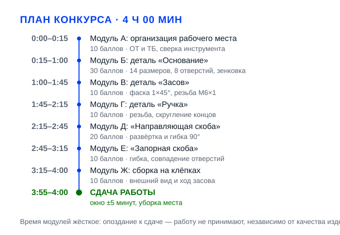
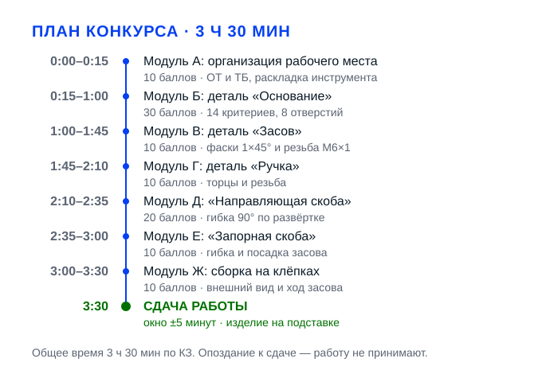
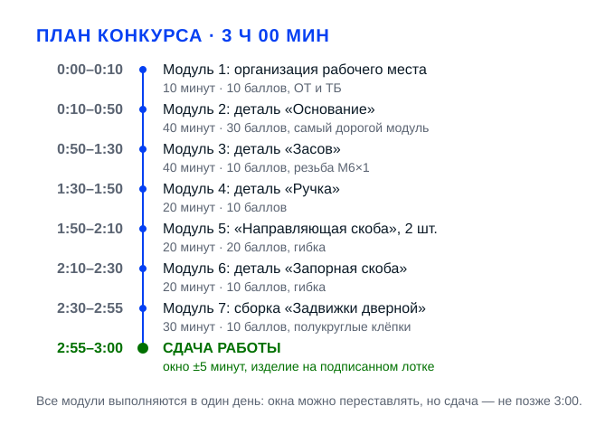

Слесарное дело (Р)
Задания ниже — официальные файлы «Абилимпикс» (источник: abilympics-russia.ru), разложенные по категориям. Решения написаны по тексту задания, регламенту и критериям оценки; в них указано, что именно проверяет эксперт.
Школьник
14–16 лет, базовый уровень заданияВыдержка из официального конкурсного задания: страницы, относящиеся к категории «Школьник» (стр. 7–8 источника).
Пошаговое решение
Конкурсное задание для школьников — изготовить и собрать изделие «Задвижка дверная» из пяти деталей: основания, засова, ручки, направляющей и запорной скобы. Работа идёт по готовым чертежам и укладывается ровно в 4 часа 00 минут, разбитые на семь модулей: организация рабочего места — 15 минут и 10 баллов, основание — 45 минут и 30 баллов, засов — 45 минут и 10 баллов, ручка — 30 минут и 10 баллов, направляющая скоба — 30 минут и 20 баллов, запорная скоба — 30 минут и 10 баллов, сборка — 45 минут и 10 баллов. Оценивают не «красоту вообще», а действительные размеры: эксперт берёт штангенциркуль и сравнивает каждое место с чертежом, отдельно смотрит прямолинейность, перпендикулярность и отсутствие острых кромок. Школьникам дополнительно вменяется чистовая отделка изделия, то есть детали нужно довести до состояния, в котором на них нет глубоких рисок, задиров и заусенцев. Инструмент разрешён только тот, что записан в инфраструктурном листе: за принесённый с собой напильник или сверло участника снимают с соревнований без предупреждения, поэтому первое, что стоит сделать в боксе, — сверить свой стол с этим листом.

Задача 1. Организовать рабочее место и прочитать чертежиМодуль А · 10 баллов · 15 минут
Пятнадцать минут модуля А — единственное время, которое можно потратить на подготовку без ущерба для размеров, и именно здесь набираются первые 10 баллов: 5 за охрану труда и технику безопасности, 5 за организацию рабочего места. За эти же минуты нужно разобрать чертежи и решить, от какой поверхности вы будете вести каждый размер, потому что дальше исправлять базу будет уже нечем — металл снимается только в минус. Тот, кто в модуле А разложил инструмент, проверил штангенциркуль и выписал на бумагу последовательность обработки, дальше идёт спокойно и без переделок.
Действие 1.1. Принять бокс и подготовить инструмент
Шаг 1.1.1
Заходим в бокс и первые две-три минуты не трогаем инструмент, а смотрим: как стоят тиски, где кнопка сверлильного станка, хватает ли света на разметочной плите, нет ли на полу масла и стружки. Верхнюю одежду и сумку убираем в отведённое место, надеваем защитные очки с прозрачными стёклами, волосы убираем под головной убор, рукава застёгиваем или подворачиваем выше локтя. Перчатки надеваем только для переноски заготовок и снимаем у станка, потому что вращающееся сверло наматывает ткань на патрон.
Модуль А стоит 10 баллов: 5 — соблюдение ОТ и ТБ, 5 — организация рабочего места, и набираются они в первые пятнадцать минут, потом уже не восстанавливаются. Тиски должны стоять так, чтобы губки были на уровне локтя: при работе ниже пояса напильник ведёт вниз, и кромка уходит с завалом на две-три сотки. Очки и снятые у станка перчатки — прямые требования инструкции по охране труда, за них балл снимают без обсуждения.
Проверьте три вещи: губки тисков на уровне локтя, ход винта без заеданий, очки на глазах и перчатки сняты перед станком. Свет должен падать на деталь слева и спереди, чтобы тень от напильника не закрывала размеченную риску.
Самая частая ошибка — начать пилить, не глядя на тиски: потом оказывается, что губки стоят низко, и весь габарит 80 мм получается с завалом 0,3–0,4 мм, а это минус баллы за прямолинейность. Вторая — работать у станка в перчатках: ткань цепляет сверло, руку тянет к патрону, и разговор идёт уже не о баллах, а о травме.
Эксперт проходит по боксу в начале модуля А и отмечает наличие очков, состояние тисков и порядок на столе. Балл за ОТ и ТБ снимают сразу, если участник сверлит в перчатках или без очков.
Шаг 1.1.2
Раскладываем инструмент по зонам и сверяем его с инфраструктурным листом: слева на столе — измерительный (штангенциркуль 0–125 с ценой деления 0,05 мм, угольник 90°, линейка), по центру — разметочный (чертилка, керн, молоток 200 г, циркуль), справа — режущий (напильники драчёвый, личной и бархатный, надфили, ножовка, метчики М6, зенковка 90°). Сверла Ø3,1 и Ø5 кладём отдельно, в подставку, и сразу проверяем, что маркировка на хвостовике читается.
Инструмент, не указанный в инфраструктурном листе, запрещён: за него снимают с соревнований без предупреждения и с протоколом, поэтому сверка занимает минуту, а спасает весь конкурс. Разложение по зонам — это и есть те 5 баллов за организацию рабочего места: эксперт смотрит, лежит ли измерительный инструмент отдельно от режущего, не валяются ли сверла в общей куче со стружкой, есть ли на столе место, куда положить готовую деталь.
Пройдите взглядом по столу: измерительный инструмент не касается напильников, каждое сверло в своей ячейке, готовые детали лежат на отдельной подкладке, а не среди стружки. Если чего-то из списка нет — зовите эксперта сейчас, а не в модуле Б.
Разложить всё в одну кучу: сверло, побывавшее рядом с напильником, получает забоину на режущей кромке и уводит отверстие в сторону на 0,2–0,3 мм. Вторая ошибка — принести свой «любимый» напильник или развёртку: это не спорный вопрос, это удаление с конкурса.
Эксперт сверяет стол с инфраструктурным листом в модуле А и может вернуться к этому вопросу в любой момент. Отдельно фиксируется, лежит ли измерительный инструмент на чистой подкладке.
Шаг 1.1.3
Проверяем каждый инструмент до работы: у штангенциркуля сводим губки и смотрим, совпадает ли нуль нониуса с нулём шкалы, у напильников проверяем посадку рукоятки (она должна сидеть плотно, без люфта, с кольцом), у ножовки — натяжение полотна и целость зубьев, у метчика — нет ли скола на первом пере. Сверло Ø5 прокручиваем в руках: если оно погнуто, отверстие получится на 0,1–0,2 мм больше и с эллипсом.
Погнутое сверло и сбитый нуль штангенциркуля дают ошибку, которую невозможно исправить: деталь уже спилена. Штангенциркуль — единственный инструмент, которым эксперт будет проверять ваши 80, 40, 73, 52,5 и 7,5 мм, и если он врёт на 0,1 мм, вы теряете баллы за размеры, которые на самом деле выполнили правильно. Проверка занимает полторы минуты и относится к критерию «организация рабочего места».
Губки сведены — стрелка или нуль нониуса на нуле; рукоятка напильника не проворачивается; полотно ножовки звенит при щелчке; на пере метчика нет блестящих сколов. Любой сомнительный инструмент откладывайте и меняйте до старта модуля Б.
Работать сбитым штангенциркулем: все замеры уходят на 0,1–0,2 мм, участник уверен, что размер в норме, а эксперт фиксирует брак по четырём местам сразу. Вторая ошибка — оставить напильник без кольца: при сильном нажатии рукоятка слетает, и хвостовик идёт в ладонь.
Эксперт может попросить показать нулевое положение штангенциркуля. Это быстрый способ проверить, умеет ли участник вообще пользоваться измерительным инструментом.
Действие 1.2. Разобрать чертежи и выбрать базы
Шаг 1.2.1
Берём комплект чертежей и читаем их в порядке изготовления: сначала основание, потом засов, ручка, направляющая и запорная скоба, в конце сборочный чертёж. На лист бумаги выписываем столбиком все размеры каждой детали с количеством мест — у основания это 80, 40, 73, 23, 52,5, 7,5, 6 и 7 мм, отверстия Ø3,1 и Ø5 по четыре штуки, зенковка Ø5,2 под 90° в четырёх местах. Тут же помечаем, какие размеры даны от базы, а какие — как справочные.
В оценочной ведомости размеры расписаны по местам, и каждый стоит 2 балла: у основания 14 позиций на 30 баллов, включая прямолинейность в четырёх местах за 4 балла. Когда размеры выписаны на бумагу, видно, что 52,5 и 7,5 связаны между собой, а 73 и 23 отсчитываются от одной кромки, — значит, обрабатывать их надо в одной установке. Читать чертёж «по ходу» — верный способ обнаружить, что два паза должны быть соосны, после того, как они запилены.
На вашем листе каждая деталь имеет полный набор размеров, и напротив каждого стоит число мест. Сверьте количество отверстий: четыре по Ø3,1 и четыре по Ø5 у основания — если у вас получилось другое число, чертёж прочитан неверно.
Пропустить зенковку Ø5,2×90° в четырёх местах: это 2 балла, которые снимаются просто за отсутствие фаски под головку. Вторая ошибка — принять справочный размер за исполнительный и спилить деталь под него.
Эксперт видит, пользуется ли участник чертежом или работает по памяти. На школьниках это заметно сразу: деталь, сделанная «примерно», не совпадает с ведомостью размеров.
Шаг 1.2.2
Выбираем базовые поверхности и записываем порядок обработки. У основания базой служит самая длинная ровная кромка и одна из торцевых: от них откладываем 80 и 40 мм, а потом все остальные размеры. У засова базой будет торец, от которого идёт размер 80, и боковая кромка для 40. У скоб база — линия гибки, потому что после гибки размеры полок уже не перемеряются так же просто, как до неё.
База — это поверхность, от которой вы отсчитываете всё остальное; если она выбрана неправильно, каждый следующий размер тянет за собой ошибку предыдущего, и к концу детали накапливается 0,5–1 мм. Правило простое: базой берут самую большую и самую ровную поверхность, обрабатывают её первой и больше не трогают. У гибочных деталей базой становится линия гибки, поэтому её размечают до сверления и до опиливания контура.
Проговорите вслух порядок: «сначала торец, от него 80, потом кромка, от неё 40, потом пазы от торца». Если для какого-то размера вы не можете назвать, от чего он отсчитан, — база выбрана не до конца. Проверьте на чертеже, какие размеры проставлены цепочкой, а какие от одной базы: цепочку всегда начинают с самой большой и ровной поверхности.
Менять базу в середине работы: разметили от одного торца, потом отпилили его и разметили от другого — размеры 73 и 23 перестают сходиться между собой на 0,3–0,5 мм. На ведомости это сразу два минуса по 2 балла.
Эксперт в модуле А иногда просит показать базовую поверхность на детали. Ответ «вот эта кромка, от неё 80» говорит о понимании больше, чем сама деталь.
Шаг 1.2.3
Раскладываем 4 часа по модулям на бумаге и держим темп по часам: 15 минут на организацию, 45 на основание, 45 на засов, 30 на ручку, 30 на направляющую скобу, 30 на запорную скобу и 45 на сборку. Часы ставим на видное место и сверяемся с ними после каждой детали, а не «когда вспомним». На основание, которое стоит 30 баллов, уходит почти пятая часть всего времени, и это правильно: остальные детали весят по 10, а скоба — 20.
Время модулей в конкурсном задании жёсткое: 4 часа 00 минут на всё, и за опоздание к сдаче работу просто не принимают. Практика показывает, что участники теряют 15–20 минут именно на основании, потому что начинают с самой сложной детали и не укладываются, а потом срезают время на чистовой отделке сборки. Расстановка приоритетов по баллам — самый надёжный способ добраться до сборки с целыми деталями.
Через 1 час 15 минут у вас должно быть готово основание и начат засов. Если к этому моменту вы всё ещё пилите основание — переходите к следующей детали, к основанию можно вернуться позже. Отметьте на бумаге контрольные точки: 1:00 — сдано основание, 1:45 — засов, 2:15 — ручка, 2:45 — направляющая скоба.
Застрять на основании и оставить на сборку 10 минут: недоклёпанное изделие теряет все 10 баллов модуля Ж, хотя детали были сделаны нормально. Вторая ошибка — гнать время в ущерб разметке, из-за чего деталь уходит в брак целиком.
Эксперт следит за темпом и фиксирует время сдачи. Умение уложиться в 4 часа — часть оценки, и оно видно по тому, в каком состоянии участник подходит к модулю Ж.
Задача 2. Изготовить деталь «Основание»Модуль Б · 30 баллов · 45 минут
Основание — самая дорогая деталь задания: 30 баллов из 100 и 45 минут времени. Ведомость разбирает её на 14 позиций: размеры 80, 40, 73, 23, 52,5, 7,5, размеры 6 и 7 по четыре места, отверстия Ø3,1 и Ø5 по четыре штуки, зенковка Ø5,2×90° в четырёх местах, прямолинейность в четырёх местах за 4 балла, перпендикулярность в четырёх местах за 2 балла и отсутствие острых кромок за 2 балла. Логика работы здесь такая: сначала разметка от выбранной базы, потом опиливание контура и пазов, и только в конце сверление — потому что отверстия, просверленные до опиливания, уводят разметку вместе с кромкой.
Действие 2.1. Разметить заготовку
Шаг 2.1.1
Берём заготовку, выданную по инфраструктурному листу, и первым делом замеряем её штангенциркулем по трём направлениям: длина, ширина, толщина. Сравниваем с чертежом и записываем припуск на сторону — если заготовка 85×45 при детали 80×40, припуск по 2,5 мм на сторону, этого хватает на опиливание. Кривизну проверяем линейкой на просвет: полоса, выгнутая «лодочкой», сначала правится на плите киянкой, и только потом размечается.
Разметка по кривой заготовке — потерянные 10–15 минут: риска ложится по дуге, а после правки уходит вместе с изгибом. Припуск нужен именно для того, чтобы снять металл напильником до риски, а не «в риску»: если пилить точно по линии, половина риски останется на детали, и размер уйдёт в плюс на 0,1–0,2 мм. Замер до разметки входит в критерий «организация рабочего места» как часть подготовки.
Заготовка лежит на плите без качания, линейка приложена к кромке — просвета нет или он не больше 0,2 мм на длине 80. Припуск по каждой стороне не меньше 1,5 мм, иначе деталь может выйти меньше чертежа.
Размечать гнутую заготовку и обнаружить изгиб после разметки: риски приходится наносить заново, а время модуля уже израсходовано на треть. Вторая ошибка — взять заготовку с припуском 0,5 мм: любой завал напильника сразу выводит размер за минус, и деталь уже не спасти.
Эксперт смотрит, правилась ли заготовка до разметки. Ровная плита и киянка в работе — признак того, что участник понимает последовательность, а не просто пилит.
Шаг 2.1.2
Наносим разметку в строгом порядке: сначала чертилкой по линейке проводим базовую кромку и торец, от них откладываем 80 и 40 мм, затем 73 и 23 мм, затем 52,5 и 7,5 мм. Каждый размер откладываем штангенциркулем, а не линейкой: у линейки цена деления 1 мм, и полмиллиметра в 52,5 вы просто не увидите. Линии проводим один раз, с нажимом средней силы, чтобы риска была тонкой и не двоилась.
В ведомости размеры 80, 40, 73, 23, 52,5 и 7,5 стоят по 2 балла каждый и проверяются в двух местах — то есть один промах в разметке обходится в 4 балла. Разметка штангенциркулем даёт точность 0,05 мм, линейкой — не лучше 0,5 мм, и этой разницы хватает, чтобы не попасть в допуск. Двойная риска опаснее отсутствия риски: по ней невозможно определить, где настоящая граница, и напильник идёт по средней линии между двумя царапинами.
Проверьте разметку до первого движения напильником: 80 минус 73 должно давать 7, а 52,5 плюс 7,5 — 60; если арифметика не сходится, где-то риска легла не там. Риски тонкие, одиночные, не раздвоенные, керн стоит только там, где нужно.
Откладывать размеры линейкой: 52,5 и 7,5 превращаются в 52 и 8, и оба размера уходят из допуска, это минус 4 балла сразу. Вторая ошибка — вести чертилку дважды по одному месту: получается раздвоенная риска шириной 0,3 мм, и опиливание идёт «между строк».
Эксперт подходит к разметке в первые минуты модуля Б и смотрит, чем участник откладывает размеры. Штангенциркуль в руке вместо линейки — правильный признак.
Шаг 2.1.3
Размечаем и керним отверстия: четыре Ø3,1 и четыре Ø5, а также места под зенковку. Центры находим пересечением двух рисок, отложенных от базы, и керним коротким ударом молотка 200 г — сначала легонько, чтобы проверить положение, потом сильнее, чтобы сверло не ушло. Керн ставим строго вертикально, а после кернения проверяем расстояние между центрами штангенциркулем.
Керн — это направляющая для сверла: без углубления сверло Ø3,1 уходит в сторону на 0,2–0,3 мм на входе, и отверстие получается не по чертежу. В ведомости отверстия Ø3,1 и Ø5 стоят по 2 балла за все четыре места, а зенковка — ещё 2 балла, то есть вся группа отверстий тянет на 6 баллов из 30. Проверка после кернения стоит полминуты и позволяет исправить ошибку, пока металл цел.
Керновые углубления видны на всех восьми точках, расстояние между ними совпадает с чертежом при замере штангенциркулем, керн не сдвинут с пересечения рисок. Отверстия должны стоять симметрично относительно осевой линии — проверьте, перевернув деталь.
Кернить сильным ударом сразу: если точка сдвинута, исправить её уже нельзя — сверло пойдёт по глубокой лунке, и деталь уйдёт в брак по всем четырём отверстиям. Вторая ошибка — кернить «на глаз», без пересечения рисок: отверстия встают с перекосом 1–2 мм.
Эксперт смотрит на керны до сверления: ровные, неглубокие, по разметке. Разбитые и сдвоенные керны сразу говорят о том, что участник торопится, а сдвинутый керн под резьбу он проверяет замером расстояния между центрами.
Действие 2.2. Обработать контур и пазы
Шаг 2.2.1
Зажимаем заготовку в тиски так, чтобы обрабатываемая кромка выступала над губками на 3–5 мм, и снимаем припуск драчёвым напильником: движения прямые, с нажимом только вперёд, обратный ход — без нажима. Ведём напильник под углом 30–40° к кромке, крест-накрест, чтобы не наделать глубоких продольных рисок. Останавливаемся, когда до риски остаётся 0,3–0,5 мм, и дальше переходим на личной напильник.
Драчёвый напильник снимает 0,2–0,3 мм за проход, поэтому им удобно убирать основной припуск, но он оставляет риски глубиной до 0,1 мм. Если пилить сразу в размер драчёвым, кромка получится рваной, и на ней останутся задиры — это минус 2 балла за отсутствие острых кромок и задиров. Выступ над губками на 3–5 мм нужен, чтобы напильник не бился о тиски и не давал завал у самого края.
Приложите линейку к обработанной кромке: просвет не больше 0,1 мм на длине 80 — это и есть прямолинейность, за которую дают 4 балла. Кромка на ощупь ровная, без волн, риски направлены в одну сторону, угол между кромкой и базовым торцом проверен угольником.
Пилить в тисках с выступом 15–20 мм: кромка начинает пружинить, напильник проваливается, и получается волна с перепадом 0,3–0,5 мм. Вторая ошибка — работать только поперёк кромки: остаются глубокие борозды, которые потом не убрать личным напильником.
Эксперт проверяет прямолинейность линейкой на просвет в четырёх местах. Волна видна даже без инструмента — по отражению света на кромке, поэтому завалы лучше не оставлять «на потом».
Шаг 2.2.2
Переходим к пазам и уступам: размеры 23, 6 и 7 мм размечаем заново от уже обработанного торца, затем пропиливаем ножовкой по линиям до глубины 0,5 мм выше дна и выбиваем промежуток. Дно паза обрабатываем плоским напильником с безопасной (неострой) боковой гранью, ширина паза 6 мм — узким напильником или надфилем. Каждый паз проверяем штангенциркулем сразу после обработки, а не в конце.
Паз 6 и 7 мм по четыре места — это 4 балла из ведомости, и именно они чаще всего выходят за допуск, потому что напильник шире паза и режет обе стенки одновременно. Пропил ножовкой на 0,5 мм выше дна страхует от пропила глубже нужного: снять лишнее напильником всегда можно, вернуть металл — нельзя. Проверка каждого паза сразу после обработки не даёт накопить ошибку, которая проявится только при сборке.
Штангенциркуль входит в паз 6 мм плотно, без качания, и показывает от 6,0 до 6,1 мм; стенки паза параллельны, дно ровное. Проверьте симметрию: расстояние от паза до обеих кромок должно совпадать, а глубина паза 7 мм — совпадать с чертежом.
Пропилить ножовкой сразу на полную глубину: полотно уводит в сторону на 0,3–0,5 мм, и паз выходит косым, а исправить его напильником уже нечем — стенка уходит за минус. Вторая ошибка — обрабатывать узкий паз широким напильником: он режет только одну стенку, паз уводит вбок.
Эксперт замеряет пазы штангенциркулем в двух местах — у входа и у дна. Конусность паза 0,2 мм и больше читается как брак по размеру, а рваное дно сразу выдаёт, что работали ножовкой без последующей доводки.
Шаг 2.2.3
Доводим прямолинейность и перпендикулярность. Кромки проверяем линейкой на просвет по всей длине, углы — угольником 90°: угольник прикладываем короткой стороной к базовому торцу, а длинной — к обрабатываемой кромке, и смотрим просвет. Если просвет у вершины угла — угол больше 90°, если у конца линейки — меньше; снимаем металл личным напильником с той стороны, где просвет, короткими движениями по 20–30 мм.
Прямолинейность в четырёх местах стоит 4 балла — самая дорогая позиция ведомости после размеров, а перпендикулярность в четырёх местах — ещё 2. Просвет у вершины и у конца угольника означает разные ошибки, и путать их нельзя: снимая металл не с той стороны, вы уводите угол ещё дальше. Короткие движения по 20–30 мм дают контроль над съёмом, длинными движениями легко снять 0,2 мм там, где нужно 0,05.
Угольник приложен к базовому торцу — просвета нет ни у вершины, ни у конца. Линейка на кромке — просвет не больше 0,1 мм. Проверьте все четыре кромки, а не только те, которые кажутся кривыми, и заодно убедитесь, что сам угольник не сбит: приложите его к плите и проведите чертилкой по второй стороне.
Править угол длинными движениями напильника: снимается 0,2–0,3 мм за проход, угол перелетает в другую сторону, и начинается «качели», на которые уходит 10 минут модуля. Вторая ошибка — проверять перпендикулярность угольником, у которого сбит угол: он есть в боксе, и его надо проверять по плите до работы.
Эксперт проверяет перпендикулярность угольником именно от базового торца. Если участник прикладывает угольник к необработанной кромке, результат замера не учитывается, а перекошенный угол он видит на просвет.
Шаг 2.2.4
Снимаем заусенцы и доводим поверхность: проходим все кромки личным напильником под углом 45°, снимая фаску 0,2–0,3 мм, затем бархатным напильником или шлифовальной шкуркой на бруске убираем риски с плоскости. Особое внимание — внутренним углам пазов и краям отверстий: там заусенец держится крепче всего. Деталь после этого протираем ветошью и кладём на чистую подкладку.
Отсутствие острых кромок — отдельные 2 балла в модуле Б, и они же повторяются в оценке сборки: заусенец на основании не даст засову двигаться свободно. Фаска 0,2–0,3 мм снимается за один-два прохода, а если увлечься, кромка «съедается» на 1 мм и размер уходит. Заусенец в отверстии Ø3,1 под клёпку особенно опасен: он не даст головке заклёпки сесть плотно, и соединение получится с зазором.
Проведите пальцем вдоль кромки — она должна быть гладкой, без «пилы». Отверстия проверьте на свет: заусенцев по краям нет, фаска ровная по всему диаметру. На детали не должно оставаться следов от тисков.
Оставить заусенцы на внутренних кромках пазов: при сборке засов заклинивает, и участник начинает подпиливать собранное изделие, портя внешний вид. Вторая ошибка — снимать фаску напильником «от себя» на весу: кромка получается волнистой.
Эксперт проводит пальцем по кромкам и смотрит на просвет в отверстиях. Заусенцы — самая частая потеря этих 2 баллов, потому что их не видно, пока не проведёшь рукой.
Действие 2.3. Просверлить отверстия и зенковать
Шаг 2.3.1
Ставим деталь на подкладку (деревянный брусок или алюминиевую пластину), зажимаем в тиски станка так, чтобы сверло приходилось точно на керн, и сверлим четыре отверстия Ø3,1. Обороты — 1200–1600 в минуту, подача плавная, без рывка: подводим сверло до касания, затем ведём вниз с усилием 3–5 кг. Сквозное отверстие проходит с лёгким «провалом» — в этот момент подачу надо ослабить, иначе сверло закусит.
Отверстия Ø3,1 — четыре места по 2 балла, и они же база под клёпку в модуле Ж: заклёпка Ø3 входит в отверстие с зазором 0,1 мм, и если отверстие разбито до 3,4, головка не держит. Подкладка под деталью нужна, чтобы не просверлить стол станка и не вырвать металл на выходе. Плавная подача без рывка даёт отверстие в допуске, а резкая — эллипс на 0,1–0,2 мм.
Проверьте штангенциркулем: Ø3,1 с допуском до 3,2. Отверстие круглое, без эллипса, кромки чистые, стружка выходит двумя спиралями одинаковой длины — признак правильной подачи и хорошо заточенного сверла.
Сверлить без подкладки: на выходе металл вырывается, образуется конус и заусенец, и отверстие приходится рассверливать — а это уже выход за допуск. Вторая ошибка — давить на сверло: оно перегревается, теряет твёрдость и уводит отверстие.
Эксперт смотрит на процесс сверления: наличие очков, зажата ли деталь, не держит ли участник её рукой. Сверление «на весу» — прямое нарушение ОТ, а разбитое отверстие он замечает по качающейся заклёпке.
Шаг 2.3.2
Меняем сверло на Ø5 и сверлим четыре отверстия с оборотами 900–1200 в минуту, обязательно смачивая место сверления эмульсией или машинным маслом. Сверло Ø5 входит в металл тяжелее, поэтому подачу держим ровной, а стружку убираем не руками, а крючком или щёткой. После каждого отверстия сверло не выключаем сразу, а выводим на холостых — так оно не заклинит в конусе.
Отверстия Ø5 — ещё 2 балла, и через них проходит засов, поэтому разница в 0,2 мм уже даёт люфт изделия при сборке. Смазка снижает температуру на 100–150 градусов и продлевает жизнь сверла: без неё кромки садятся после 8–10 отверстий. Вывод на холостых оборотах страхует от заклинивания: сверло, зажатое в конусе отверстия, при остановке патрона ломается, и обломок остаётся в детали.
Ø5 с допуском до 5,2, отверстия соосны разметке, заусенцев на выходе нет. Стружка должна быть завитой, а не пылью: пыль означает перегрев и затупленное сверло, а посиневший цвет металла вокруг отверстия — что смазки не было вовсе.
Сверлить без смазки и на высоких оборотах: сверло синеет, кромки садятся, отверстие выходит на 5,3–5,4 мм, и засов начинает болтаться в скобе. Вторая ошибка — убирать стружку рукой при вращающемся сверле: это уже не потеря баллов, а травма, за которую снимают с конкурса.
Эксперт оценивает и сам результат, и безопасность: смазка, щётка для стружки, очки. Всё это входит в 5 баллов за ОТ и ТБ, а разбитое отверстие видно по зазору вокруг заклёпки.
Шаг 2.3.3
Ставим зенковку 90° Ø5,2 и снимаем фаску в четырёх отверстиях: подводим инструмент до касания, затем 2–3 секунды с лёгким нажимом, пока фаска не займёт примерно половину диаметра отверстия. Обороты — 400–600 в минуту, без покачивания: зенковка должна стоять строго вертикально. Глубину контролируем на глаз и на ощупь — фаска должна быть одинаковой во всех четырёх отверстиях.
Зенковка Ø5,2×90° в четырёх местах — отдельные 2 балла, и она нужна под головку заклёпки: без гнезда головка не сядет заподлицо и будет выступать над плоскостью на 0,5–0,8 мм. Ровная фаска одинаковой ширины — признак аккуратной работы, её видно на собранном изделии. Покачивание зенковки даёт огранку и «рваную» фаску, которую уже не исправить.
Фаска 90° по всему диаметру, ширина одинаковая во всех четырёх отверстиях, поверхность фаски гладкая. Приложите заклёпку: головка должна утопать в гнезде без зазора по краю, а сама фаска — не доходить до резьбовой части, если отверстие под неё.
Зенковать слишком глубоко: стенка отверстия истончается, и при клёпке металл продавливается — деталь в этом месте деформируется. Вторая ошибка — зенковать на высоких оборотах: фаска получается рваной, с заусенцами, и балл снимается за кромки.
Эксперт смотрит на фаски в лупу или на просвет. Огранка и разная ширина фаски читаются как небрежность, даже если размеры в норме, а слишком глубокая фаска видна по просаженной головке.
Шаг 2.3.4
Делаем финальный контроль основания: промеряем все размеры по ведомости — 80 и 40 в двух местах, 73 и 23, 52,5 и 7,5, 6 и 7 по четырём местам, отверстия и зенковку. Результаты записываем на бумагу рядом с чертежом и сравниваем с допуском: если размер вышел в плюс на 0,1, его ещё можно снять личным напильником, если в минус — деталь уже не исправить. Готовое основание кладём на подкладку и больше не трогаем до сборки.
Именно этот контроль отличает участника, который получает 28–30 баллов, от того, кто получает 18: эксперт замеряет те же места, и лучше узнать о расхождении самому, пока есть чем исправить. Запись размеров на бумагу занимает три минуты и позволяет увидеть систему: например, что все размеры от одного торца ушли на 0,1 в плюс — значит, торец не дожат. Деталь, лежащая отдельно на подкладке, не получит царапин и вмятин, а они входят в оценку сборки.
Все 14 позиций ведомости промерены, расхождений больше 0,1 мм нет, заусенцев и рисок нет. Если какой-то размер вне допуска — либо исправляйте сразу, либо помечайте для себя, что этот балл потерян, и идите дальше.
Не мерить деталь вообще, положившись на «на глаз»: типичная потеря 6–8 баллов из 30 на размерах, которые отличаются от чертежа на 0,2–0,3 мм. Вторая ошибка — бросить готовое основание в общий ящик с инструментом: вмятины и царапины снимут баллы в модуле Ж.
Эксперт замеряет основание после сдачи модуля Б и фиксирует каждое место отдельно: 14 позиций, каждая по 2 балла. Расхождение 0,1 мм обычно прощают, 0,3 мм — уже нет, а заусенцы он ищет на ощупь по всем кромкам.
Задача 3. Изготовить «Засов» и «Ручку»Модули В и Г · по 10 баллов · 45 и 30 минут
Две детали, которые работают в паре: засов входит в направляющую скобу и запирает створку, а ручка вворачивается в засов. Ведомость модуля В проверяет размеры 80 и 40, фаску 1×45° в двух местах, резьбу М6×1 и отсутствие острых кромок — всего 10 баллов; на модуль Г дают 30 минут вместо 45. Главная ловушка здесь в резьбе: М6×1 — это мелкий шаг, под него сверлится отверстие Ø5,0, и любая ошибка в диаметре заканчивается либо срывом резьбы, либо заклинившим метчиком. Обе детали делаются по одной схеме: сначала габарит и кромки, потом отверстие, потом резьба, и только после этого чистовая отделка.
Действие 3.1. Изготовить засов
Шаг 3.1.1
Берём заготовку под засов, замеряем её штангенциркулем и размечаем габарит 80×40 от выбранной базовой кромки и торца. Размеры откладываем штангенциркулем, риски ведём один раз, затем керним центры: под резьбу М6×1 и под отверстия, которые указаны на чертеже засова. Разметку проверяем до первого реза: 80 и 40 должны читаться от базы, а не от противоположной, уже спиленной кромки.
Размеры 80 и 40 в модуле В стоят по 2 балла каждый, то есть 4 балла из 10 — почти половина модуля держится на двух числах, которые размечаются в первые пять минут. Засов входит в направляющую скобу, поэтому его ширина 40 мм должна совпадать с просветом скобы: расхождение 0,3 мм — и засов начнёт заклинивать. Кернение под резьбу обязательно: сверло Ø5,0 без керна уводит на 0,3 мм.
Разметка нанесена от базы, риски одиночные и тонкие, керны стоят на пересечениях. Проверьте арифметику: 80 минус 40 равно 40, и оба размера должны укладываться в припуск заготовки с запасом не меньше 1,5 мм на сторону.
Размечать засов от кромки, которая потом снимается напильником: после опиливания все размеры съезжают на снятую величину, и деталь уходит в минус. Вторая ошибка — кернить центр резьбы на глаз: отверстие смещается, и при вворачивании ручки стенка засова трескается.
Эксперт смотрит на разметку засова в начале модуля В. Керн под резьбу, поставленный по пересечению рисок, — признак того, что участник понимает, чем эта деталь отличается от основания.
Шаг 3.1.2
Опиливаем контур до размера 80×40: сначала драчёвым напильником снимаем основной припуск, оставляя 0,3–0,5 мм до риски, затем личным доводим до линии. Деталь зажимаем с выступом 3–5 мм, движения прямые крест-накрест, на обратном ходе нажима нет. Торцы обрабатываем отдельно, проверяя угольником перпендикулярность к базовой кромке, и после каждого прохода смахиваем опилки щёткой, чтобы они не забивали насечку.
Засов должен ходить в скобе без люфта и без заклинивания, а это возможно только при прямолинейных кромках: волна 0,2 мм уже ощущается рукой при перемещении. Драчёвый напильник снимает 0,2–0,3 мм за проход, поэтому им нельзя подходить к риске ближе 0,3 мм — иначе размер уйдёт в минус, а металл вернуть нечем. Перпендикулярность торцов проверяется угольником от базы, потому что именно торец засова упирается в запорную скобу при закрывании.
Штангенциркуль показывает 80 и 40 с расхождением не больше 0,1 мм, линейка на кромке даёт просвет не больше 0,1 мм, угольник от базовой кромки — без просвета. Деталь лежит на плите без качания, а кромки после личного напильника не имеют глубоких продольных борозд.
Доводить размер «по риске» драчёвым напильником: риска снимается вместе с металлом, и участник теряет ориентир, а размер уходит на 0,2–0,3 мм. Вторая ошибка — пилить торец, не проверив угольником: перекос 0,5 мм не даст засову встать в скобу.
Эксперт замеряет засов после сдачи модуля В в двух местах по каждому размеру. Завал на кромке виден и на просвет, и на ощупь, а перекошенный торец он проверяет угольником от базы.
Шаг 3.1.3
Снимаем фаску 1×45° в двух местах: размечаем от кромки 1 мм чертилкой и опиливаем под 45°, контролируя ширину фаски штангенциркулем и на глаз по равномерности полосы. Работаем личным напильником короткими движениями вдоль кромки, поворачивая деталь, чтобы фаска шла ровной лентой без «ступенек». После опиливания проходим бархатным напильником, чтобы убрать риски.
Фаска 1×45° в двух местах — 2 балла, и она нужна не для красоты: острые кромки засова при работе задвижки режут руку, а на оценке сборки острые кромки считаются отдельным дефектом. Ровная фаска одинаковой ширины по всей длине — признак аккуратной работы, её видно на готовом изделии. Ступенчатая фаска с перепадом 0,3 мм читается как брак, даже если формально 1 мм выдержан.
Ширина фаски по всей длине 1,0–1,2 мм, угол 45°, полоса ровная, без ступенек и завалов на концах. Кромка на ощупь не режет: проведите пальцем вдоль фаски с обеих сторон и убедитесь, что она снята по всей длине, а не только на середине.
Снимать фаску «на глаз» широким напильником: на концах кромки фаска выходит 2–3 мм, и деталь выглядит сточенной. Вторая ошибка — оставить фаску только с одной стороны, тогда засов при работе задевает за скобу одним ребром.
Эксперт проверяет фаску визуально и штангенциркулем. Ступенька на фаске — типичная потеря этих 2 баллов, а несимметричная фаска на двух местах читается как работа «на глаз».
Шаг 3.1.4
Сверлим отверстие под резьбу: Ø5,0 (для М6×1 диаметр отверстия равен 6 минус шаг 1), обороты 900–1200 в минуту, с эмульсией, деталь зажата на подкладке. Затем берём метчик М6×1 №1, ставим его в отверстие строго вертикально по угольнику, вводим на 1–2 оборота с лёгким нажимом и дальше режем без нажима: пол-оборота вперёд, четверть назад для дробления стружки. Пройдя первый метчик насквозь, проходим №2 и промываем отверстие от стружки.
Резьба М6×1 — 2 балла ведомости, и это самая уязвимая операция модуля: мелкий шаг при диаметре отверстия 5,2 вместо 5,0 даёт неполный профиль и срыв при затяжке, а при 4,8 метчик идёт с перегрузкой и ломается. Возврат на четверть оборота — не формальность: стружка дробится и не заклинивает метчик, а сломанный метчик в детали означает, что деталь выброшена. Проходка вторым метчиком нужна, чтобы резьба была полного профиля по всей глубине.
Резьба чистая, без рваных витков; ручка или контрольный болт М6×1 вворачивается от руки на всю глубину, без люфта и без заедания. Проверьте калибром-пробкой, если он есть в инфраструктурном листе: он должен идти плавно.
Резать резьбу без возврата: стружка набивается в канавки, метчик заклинивает, и при попытке провернуть его дальше перо ломается в отверстии. Вторая ошибка — сверлить Ø5,5 «чтобы легче шло»: резьба получается срезанной, и ручка вырывается при первом усилии.
Эксперт проверяет резьбу вворачиванием контрольного винта. Срыв витков виден сразу, а сломанный метчик в детали — это ноль за модуль, поэтому он смотрит и на сам процесс: есть ли возврат на четверть оборота.
Шаг 3.1.5
Заканчиваем засов чистовой отделкой: убираем заусенцы с кромок и из отверстия, проходим плоскости бархатным напильником или шкуркой на бруске, сдуваем и смахиваем стружку щёткой. Отдельно проверяем кромку отверстия — после метчика там остаётся валик металла, который не даст ручке сесть до упора. Деталь протираем ветошью и кладём к остальным готовым деталям на подкладку.
Отсутствие острых кромок — 2 балла модуля В, и они же повторяются в оценке сборки, где наличие задиров, заусенцев и царапин считается дефектом. Валик металла у входа в резьбовое отверстие — частая причина того, что ручка не вворачивается до конца, и участник начинает сильнее крутить, срывая витки. Чистовая отделка входит в задание для школьников отдельным пунктом: «участник самостоятельно должен выполнить чистовую отделку изделия».
Кромки гладкие, отверстие без валика, на плоскостях нет глубоких рисок — только равномерный след от бархатного напильника. Пальцем по кромке проведите дважды: ни заусенца, ни задира, а резьба должна остаться чистой, без забитой стружки.
Оставить валик после метчика: ручка вворачивается на 3–4 витка и встаёт, а при подтяжке срывает резьбу, и модуль В теряет и баллы за резьбу, и баллы за кромки. Вторая ошибка — снимать заусенцы напильником, зажав деталь в руке: кромка получается косой.
Эксперт осматривает засов перед сборкой и проводит пальцем по кромкам. Валик у резьбы он проверяет вворачиванием ручки — это самый быстрый тест, и он же показывает, читается ли деталь как готовая.
Действие 3.2. Изготовить ручку
Шаг 3.2.1
Размечаем ручку по её чертежу: откладываем штангенциркулем общую длину и длину резьбовой части, наносим линию перехода и центр отверстия под резьбу. Если по чертежу ручка имеет наружную резьбу М6×1, размечаем ещё и границу резьбы, до которой будет идти плашка. Заготовку предварительно проверяем на кривизну и правим, если нужно, потому что ручка тонкая и любой изгиб сразу виден на собранном изделии.
Ручка стоит 10 баллов, и её размеры проверяются так же строго, как у засова: длина, диаметр, положение резьбы. Тонкая деталь при опиливании легко выгибается, а изогнутая ручка не даст засову ходить ровно — на сборке это читается как дефект. Разметка границы резьбы заранее нужна потому, что плашка должна зайти на нужную длину, а не «насколько получится».
Разметка нанесена от одного торца, длина и граница резьбы читаются, центр отверстия на оси. Приложите деталь к плите: качания нет, зазор не больше 0,1 мм, а риски не раздвоены — по раздвоенной риске резьба пойдёт с перекосом.
Размечать ручку от двух разных торцов: размеры не сходятся на 0,3–0,5 мм, и резьбовая часть выходит короче, чем нужно. Вторая ошибка — не проверить кривизну: гнутую ручку потом невозможно исправить, не повредив резьбу.
Эксперт смотрит на ручку в сборе: она должна стоять по оси засова. Перекос и изгиб видны без инструмента, а граница резьбы, размеченная заранее, говорит о том, что участник читал чертёж.
Шаг 3.2.2
Обрабатываем ручку до нужного профиля: опиливаем торец, снимаем лишний металл по диаметру личным напильником, поворачивая деталь в тисках через каждые 10–15 движений, чтобы получить правильную цилиндрическую или квадратную форму по чертежу. Концы скругляем: снимаем углы под 45°, затем скругляем переходы, проверяя симметрию на глаз и штангенциркулем. Работаем с подкладкой из мягкого металла, чтобы губки тисков не оставили вмятин.
Профиль ручки оценивается вместе с размерами модуля Г: 10 баллов складываются из геометрии, резьбы и кромок. Овальность и гранёность — следствие того, что деталь не поворачивают в тисках: напильник снимает металл только с одной стороны, и сечение уходит на 0,5 мм. Мягкая подкладка нужна потому, что ручка тонкая: след от насечки губок на ней остаётся сразу и уже не убирается, а вмятины входят в перечень дефектов сборки.
Сечение круглое (или квадратное по чертежу) без огранки: проверьте штангенциркулем в двух взаимно перпендикулярных направлениях — разница не больше 0,1 мм. Концы скруглены симметрично, следов губок нет.
Опиливать, не поворачивая деталь: получается овал с перепадом 0,4–0,6 мм, и ручка не входит в отверстие или болтается. Вторая ошибка — зажать ручку без подкладки: насечка губок оставляет вмятины глубиной 0,2 мм, которые видны на полированной поверхности.
Эксперт поворачивает ручку в руках и смотрит на просвет. Огранка и следы тисков — самые заметные дефекты этой детали, а несимметрично скруглённые концы он замечает сразу, потому что ручка лежит в ладони.
Шаг 3.2.3
Нарезаем резьбу по чертежу. Если ручка вворачивается в засов, на её конце режется наружная резьба М6×1: конец смазываем маслом, ставим плашку в клупп строго по оси, вводим на 1–2 оборота и режем с возвратом на четверть оборота, смазывая и сметая стружку. Если по чертежу резьба внутренняя, сверлим Ø5,0 и проходим метчиками №1 и №2 так же, как на засове.
Резьба — то, чем ручка соединяется с засовом, и на ней держится работа всего изделия: при срыве ручка проворачивается, и задвижка перестаёт открываться. Мелкий шаг 1 мм требует строгой соосности плашки: перекос 2–3° даёт конусную резьбу, которая входит на два витка и дальше клинит. Смазка и возврат на четверть оборота — единственный способ не порвать витки на тонкой детали.
Резьба чистая, без задиров, ручка вворачивается в засов от руки на всю длину резьбы и садится до упора. Проверьте от руки без воротка: если требуется усилие, витки где-то подмяты, и при подтяжке они сорвутся.
Ставить плашку без конуса и без смазки: первый виток срывается, и резьба идёт «лестницей», а ручка входит с перекосом. Вторая ошибка — резать за один проход без возврата: стружка наматывается на плашку и рвёт профиль.
Эксперт вворачивает ручку в засов при сборке. Плавность хода и посадка до упора проверяются руками, без инструментов, и он отдельно смотрит, не осталось ли на резьбе стружки.
Шаг 3.2.4
Проверяем ручку по всем позициям: длину, диаметр, длину резьбовой части, отсутствие острых кромок. Стык резьбы и гладкой части должен быть чистым, без ступеньки: если она есть, снимаем её надфилем и проходим бархатным напильником. Затем промеряем посадку — вворачиваем ручку в засов и смотрим, стоит ли она по оси, без качания, и не упирается ли в деталь раньше времени.
Приёмка ручки до сборки — это возможность исправить дефект, пока деталь не в изделии: подпилить ступеньку на стыке резьбы можно за минуту, а разбирать собранную задвижку — уже нет. Ступенька 0,2–0,3 мм на переходе — типичная потеря баллов за кромки: она цепляется за руку и видна на изделии. Проверка посадки в засов заранее показывает, сойдутся ли детали в модуле Ж.
Все размеры по чертежу в пределах 0,1 мм, кромки гладкие, ступеньки на стыке нет. Ручка в засове стоит по оси, качания нет, вворачивается от руки, а длина свободной части совпадает с чертежом и не мешает ходу засова.
Не проверять посадку до сборки: в модуле Ж выясняется, что ручка идёт с перекосом, а времени на исправление уже нет — 10 баллов сборки под угрозой. Вторая ошибка — оставить ступеньку: она снимает баллы и за кромки, и за внешний вид.
Эксперт оценивает ручку и отдельно, и в сборе. Именно в сборе видно, насколько точно выдержана ось, а ступеньку на стыке резьбы он находит пальцем, проводя по детали от конца к основанию.
Задача 4. Изготовить скобы с гибкойМодули Д и Е · 20 и 10 баллов · по 30 минут
Две гибочные детали замыкают конструкцию: направляющая скоба держит засов и направляет его ход, запорная скоба ловит конец засова в закрытом положении. Направляющая скоба стоит 20 баллов, потому что от её просвета зависит, будет ли изделие работать вообще. Обе детали делаются по одной схеме: разметка развёртки с учётом припуска на гибку, сверление отверстий до гибки (после гибки сверлить неудобно и опасно), гибка в тисках с оправкой под 90° и контроль полок после неё. Главная ошибка новичка — сверлить после гибки: сверло уходит по касательной к согнутой полке и рвёт металл.
Действие 4.1. Изготовить направляющую скобу
Шаг 4.1.1
Считаем развёртку скобы: складываем длины полок по чертежу и прибавляем на каждый гиб 0,5 толщины металла, потому что при гибке наружные слои растягиваются, а внутренние сжимаются, и нейтральная линия проходит примерно по середине. Откладываем полученную длину на заготовке штангенциркулем, проводим линии гиба чертилкой и накерниваем их через 5–7 мм редкими точками, чтобы линия не стёрлась при работе. Тут же размечаем центры отверстий, пока заготовка плоская.
Если развёртку посчитать без припуска, после гибки полки выйдут короче на 1–1,5 мм каждая, и размер по чертежу уйдёт в минус — а у скобы 20 баллов держатся именно на размерах полок и просвета. Кернение линии гиба не украшение: по ней выставляется оправка в тисках. Разметка отверстий на плоской заготовке точнее, чем после гибки.
Развёртка пересчитана дважды, линии гиба видны и накернены, центры отверстий отмечены от одной базы. Проверьте: сумма полок плюс припуски должна давать длину, которая укладывается в заготовку с запасом.
Гнуть без припуска: полки получаются короче на 1–1,5 мм, и скоба не совпадает с чертежом, а исправить это можно только переделкой детали. Вторая ошибка — размечать отверстия после гибки: сверло скользит по наклонной полке и уводит отверстие на 0,5 мм.
Эксперт смотрит на развёртку до гибки. Умение считать припуск на гибку — то, что отличает 18 баллов от 12 в этом модуле, и он просит показать расчёт, если деталь вышла короткой.
Шаг 4.1.2
Сверлим отверстия в плоской заготовке: Ø3,1 и Ø5 по чертежу, обороты 1200–1600 и 900–1200 соответственно, с эмульсией, на подкладке. Затем снимаем заусенцы с обеих сторон зенковкой или сверлом большего диаметра, повёрнутым вручную, — после гибки добраться до внутренней стороны отверстия будет уже нельзя. Кромки заготовки опиливаем до размера, оставляя 0,2–0,3 мм на чистовую доводку после гибки.
Отверстия в скобе — это места клёпки, и заусенец на внутренней стороне не даст деталям сесть плотно: в собранном изделии появится зазор 0,2–0,3 мм, который виден на просвет. Сверление до гибки ещё и безопаснее: согнутая деталь пружинит в тисках, и сверло ломается. Запас 0,2–0,3 мм на кромке нужен потому, что после гибки кромки придётся править.
Отверстия по разметке, заусенцев нет ни с лицевой, ни с обратной стороны, кромки ровные. Проверьте диаметр: Ø3,1 не должен превратиться в 3,4, иначе заклёпка будет болтаться, а расстояние между отверстиями должно совпадать с чертежом.
Сверлить после гибки: деталь пружинит в тисках, сверло уводит, отверстие выходит овальным, а на выходе металл рвётся. Вторая ошибка — не снять заусенцы с обратной стороны: их потом не достать, и они испортят посадку при клёпке.
Эксперт проверяет отверстия до сборки: заусенцы на внутренней стороне видны на просвет. Это одна из частых потерь баллов в модуле Д, и он же смотрит, сверлили ли деталь до гибки.
Шаг 4.1.3
Гнём скобу: зажимаем заготовку в тиски так, чтобы линия гиба совпадала с краем губок, ставим сверху оправку — уголок 90° или брусок с ровной гранью — и ударами киянки загибаем полку, постепенно перемещая оправку вдоль линии. Гнём за два-три прохода, а не одним ударом, и после каждого прохода проверяем угол угольником. Металл у линии гиба наклёпывается, поэтому полку не гнём туда-обратно: обратная гибка ослабляет сечение и оставляет трещину.
Гибка — операция, в которой легко потерять сразу всё: перекос 3° даёт расхождение полок на 1,5 мм, и скоба перестаёт держать засов. Гибка за два-три прохода даёт контроль: вы видите, как металл идёт, и можете остановиться на 88°. Линия гиба на краю губок — гарантия того, что гиб пойдёт по разметке, а не на 2–3 мм в стороне.
Угольник, приложенный к полке, показывает 90° без просвета; полки параллельны друг другу, если это предусмотрено чертежом. Проверьте ширину скобы в трёх местах — расхождение не больше 0,2 мм, а на наружной стороне гиба нет разрывов и трещин.
Гнуть одним ударом молотка: металл идёт с перегибом, угол получается 80–85°, а правка в обратную сторону оставляет трещину на наружном слое. Вторая ошибка — гнуть без оправки: полка получается волнистой, и её уже не выправить.
Эксперт проверяет угол угольником и смотрит на наружную сторону гиба: разрывы и трещины на наклёпанном металле видны сразу, а перекос полок он замечает по тому, как встаёт засов.
Шаг 4.1.4
После гибки правим скобу: проверяем угол 90°, параллельность полок и просвет между ними, при необходимости подправляем в тисках через мягкую прокладку, а не ударами по готовой детали. Затем доводим кромки личным напильником, снимаем заусенцы после гибки и проверяем, что засов входит в скобу свободно, с зазором 0,2–0,3 мм на сторону. Отверстия после гибки промеряем повторно — иногда они слегка уходят.
Просвет скобы — это то, от чего зависит работа изделия: при зазоре меньше 0,1 мм засов заклинивает, при зазоре больше 0,5 мм он болтается, и задвижка не держит. Правка через мягкую прокладку нужна потому, что удары по готовой детали оставляют вмятины, а вмятины прямо перечислены в критериях модуля Ж. Повторный замер отверстий после гибки — простая страховка: деформация металла у линии гиба иногда смещает отверстие на 0,1–0,2 мм.
Угол 90° без просвета, полки параллельны, засов входит в скобу от руки и ходит без заеданий, но и без ощутимого люфта. Кромки гладкие, вмятин и следов ударов нет, а отверстия после гибки стоят на своих местах — промерьте их повторно.
Подгонять скобу ударами молотка по собранной детали: остаются вмятины, которые снимают баллы и за внешний вид, и за кромки. Вторая ошибка — не проверить засов в скобе до сборки: выясняется на модуле Ж, когда исправлять уже нечем.
Эксперт вставляет засов в скобу и оценивает ход. Свободный ход без люфта — это и есть те 20 баллов модуля Д, и он отдельно смотрит, не правили ли деталь ударами молотка.
Действие 4.2. Изготовить запорную скобу
Шаг 4.2.1
Размечаем запорную скобу по её чертежу: считаем развёртку с припуском на гиб, откладываем длины полок штангенциркулем, проводим и накерниваем линии гиба. Размечаем отверстия и контур, затем опиливаем заготовку до размера личным напильником, оставляя 0,2–0,3 мм на чистовую доводку. Работаем так же, как с направляющей скобой, но аккуратнее с тонкими полками: у запорной скобы они короче, и перекос заметнее.
Запорная скоба стоит 10 баллов, и проверяются в ней те же позиции: размеры полок, угол, отверстия, кромки. Короткие полки опасны тем, что на них приходится большая часть деформации: при гибке металл тянется, и полка 15 мм может уйти на 1 мм, что сразу видно на чертеже. Запас 0,2–0,3 мм на кромке нужен, потому что после гибки кромку придётся править — она меняет форму вместе с полкой.
Развёртка посчитана с припуском, линии гиба накернены, контур опилен с запасом 0,2–0,3 мм. Проверьте, что заготовка симметрична относительно осевой линии, если чертёж этого требует, и что припуск на каждой полке одинаков — иначе после гибки одна полка выйдет короче.
Размечать короткие полки без припуска: после гибки скоба выходит на 1–1,5 мм меньше, и засов не достаёт до неё в закрытом положении. Вторая ошибка — опилить контур точно по размеру до гибки: после гибки кромка уходит, и запас на правку уже израсходован.
Эксперт сравнивает запорную скобу с чертежом в двух положениях — до и после гибки. Симметрия полок видна сразу, а разная длина полок говорит о том, что развёртку считали «на глаз».
Шаг 4.2.2
Сверлим отверстия в плоской заготовке, снимаем заусенцы с двух сторон, затем гнём: зажимаем по линии гиба на краю губок, ставим оправку и работаем киянкой за два-три прохода, проверяя угол угольником после каждого. Вторую полку гнём в противоположную сторону, если так указано на чертеже, и следим за тем, чтобы отверстия остались на своих местах относительно линии гиба. После гибки промеряем расстояние между отверстиями.
У запорной скобы отверстия расположены на разных полках, и их взаимное положение — главное, что проверяется при сборке: несовпадение на 0,5 мм не даст поставить клёпку. Гибка за два-три прохода позволяет удержать угол в пределах 1–2°, а это как раз та точность, при которой деталь садится на место. Проверка расстояния между отверстиями после гибки ловит деформацию, которую не видно глазом.
Угол 90°, расстояние между отверстиями совпадает с чертежом в пределах 0,2 мм, заусенцев после гибки нет. Приложите деталь к основанию: отверстия должны совпадать с ответными, а полка — прилегать к плоскости без просвета.
Гнуть после сверления без оправки: металл тянет, и отверстие уходит от линии гиба на 0,5 мм, а клёпка не встаёт. Вторая ошибка — согнуть полку в обратную сторону и пытаться выправить: на металле появляется трещина, и деталь идёт в брак.
Эксперт проверяет совпадение отверстий при сборке «на сухую». Несовпадение 0,5 мм — это уже не клёпка, а переделка, поэтому он смотрит на скобу до того, как в неё войдёт заклёпка.
Шаг 4.2.3
Доводим запорную скобу: правим угол и полки через мягкую прокладку, опиливаем кромки личным напильником, снимаем заусенцы, проверяем, что засов входит в скобу и упирается в неё в закрытом положении. Промеряем все размеры по чертежу и записываем результат, чтобы на сборке не искать расхождение заново. Готовую деталь кладём к остальным на подкладку и больше не трогаем.
Запорная скоба принимает на себя усилие при закрывании, поэтому её кромки должны быть не только ровными, но и без заусенцев: на смятой кромке засов заедает. Чистовая отделка всех деталей входит в задание школьников отдельным требованием, и именно на мелких деталях её чаще всего не хватает. Запись размеров перед сборкой позволяет заранее увидеть, какие детали сойдутся, а какие придётся подгонять.
Все размеры в пределах 0,1 мм, угол 90°, кромки гладкие, засов входит и упирается. На детали нет вмятин, царапин и следов тисков, а отверстия совпадают с отверстиями основания при примерке — проверьте это до сборки, пока деталь ещё можно поправить.
Оставить скобу «на потом» и обнаружить на сборке, что она не совпадает с отверстием в основании: подгонка в модуле Ж отнимает 10–15 минут из 45. Вторая ошибка — не снять заусенцы: засов заедает, и участник списывает это на «тугой ход».
Эксперт проверяет запорную скобу вместе с засовом. Плотное прилегание без зазора и без закусывания — признак точной работы, а заусенцы он находит пальцем по кромкам.
Задача 5. Собрать изделие и сдать работуМодуль Ж · 10 баллов · 45 минут
Сборка — это 45 минут и 10 баллов, и оценивают здесь не только то, сойдутся ли детали, но и внешний вид: соответствие сборочному чертежу, отсутствие острых кромок, задиров, заусенцев, вмятин и царапин. Соединение выполняется полукруглыми клёпками, и ошибка при клёпке исправляется только высверливанием, а это следы на детали. Поэтому сборка начинается не с молотка, а со сборки «на сухую»: детали ставятся на место без крепежа, проверяется ход засова и совпадение отверстий, и только после этого сверлится по месту и клепается. Последние десять минут оставляются на чистовую отделку и уборку.
Действие 5.1. Собрать «на сухую» и подготовить к клёпке
Шаг 5.1.1
Раскладываем готовые детали по сборочному чертежу и собираем изделие без крепежа: основание кладём плашмя, на него ставим направляющую скобу, вставляем засов, приставляем запорную скобу, вворачиваем ручку. Смотрим на совпадение отверстий и на то, как засов ходит в скобе: он должен двигаться от руки, без заеданий, и упираться в запорную скобу в закрытом положении. Все расхождения записываем — что и на сколько не сходится.
Сборка «на сухую» — единственный способ увидеть ошибку до того, как она станет необратимой: после клёпки разобрать изделие можно только высверливанием. Ход засова проверяется именно сейчас, потому что после клёпки его уже не отрегулировать. Совпадение отверстий проверяется на всех четырёх точках — это те же отверстия Ø3,1 из модуля Б.
Засов ходит в скобе от руки, упирается в запорную скобу, ручка стоит по оси. Отверстия в скобе и основании совпадают так, что заклёпка входит без нажима, а между деталями нет зазора больше 0,2 мм — проверьте на просвет, приложив изделие к лампе.
Начать клепать сразу, без примерки: через две заклёпки выясняется, что засов заклинивает, и изделие приходится разбирать высверливанием, теряя 15–20 минут и внешний вид. Вторая ошибка — примерять только по одной скобе, не проверив изделие целиком.
Эксперт подходит к сборке в начале модуля Ж и смотрит, примеряет ли участник детали. Работа «сразу на клёпку» почти всегда заканчивается переделкой, и он видит это по следам высверленных заклёпок.
Шаг 5.1.2
Подгоняем то, что не сошлось: если засов идёт туго, снимаем 0,1–0,2 мм с его боковых кромок личным напильником, а не с скобы; если отверстия не совпадают на 0,2–0,3 мм, расширяем отверстие в скобе круглым надфилем в нужную сторону. Подгонку ведём по одному месту за проход и после каждого прохода проверяем сборку. Скобу при этом не подпиливаем по плоскости — она должна прилегать к основанию всей поверхностью.
Правило подгонки простое: снимаем металл с более простой и дешёвой детали, а сложную и дорогую сохраняем — скоба стоит 20 баллов, засов 10, поэтому засов подгоняется первым. Снятие 0,1–0,2 мм с кромки убирает заклинивание, а снятие 0,5 мм даёт люфт, при котором задвижка болтается, и это видно на оценке сборки. Плоскость прилегания скобы важна потому, что при клёпке зазор превращается в перекос, и засов начинает заедать уже после затяжки.
Засов ходит свободно по всей длине, без закусывания, но не болтается: боковой люфт не больше 0,3 мм. Скоба прилегает к основанию без просвета — проверьте щупом или на просвет, приложив деталь к плите.
Подпиливать скобу, чтобы засов пошёл: скоба теряет размер, а она стоит 20 баллов, и изделие всё равно работает с перекосом. Вторая ошибка — снять сразу 0,5 мм «чтобы наверняка»: появляется люфт, и задвижка не держит.
Эксперт оценивает и посадку, и то, как участник принимает решения при подгонке. Подпиленная дорогая деталь вместо дешёвой — заметная ошибка, и он видит её по следам напильника на скобе.
Шаг 5.1.3
Размечаем и сверлим отверстия по месту, если они не совпали окончательно: собираем пакет, зажимаем струбциной или в тисках через прокладку, чтобы детали не сдвинулись, и сверлим Ø3,1 через отверстие в скобе как по кондуктору. Сверлим на малых оборотах (800–1000) с лёгкой подачей, чтобы сверло не рвало тонкую полку. После сверления разбираем пакет и снимаем заусенцы с обеих сторон каждого отверстия.
Сверление по месту через готовое отверстие — самый точный способ получить соосность: сверло идёт по уже существующему отверстию, как по кондуктору, и отклонение не превышает 0,1 мм. Стубцина или тиски обязательны: если детали сдвинутся на 0,3 мм во время сверления, отверстие выйдет овальным, и заклёпка не сядет. Заусенцы после сверления не дадут деталям прилегать, и в собранном изделии появится зазор, который видно на просвет.
Отверстия соосны, заклёпка входит в пакет от руки, заусенцев нет ни с одной стороны. После разборки пакета детали ложатся друг на друга без качания, а расстояние между отверстиями не изменилось после сверления.
Сверлить, держа детали рукой: пакет сдвигается, отверстие выходит овальным на 0,3–0,4 мм, и заклёпка болтается. Вторая ошибка — сверлить на высоких оборотах: тонкая полка нагревается, сверло рвёт металл на выходе.
Эксперт проверяет соосность отверстий после сборки. Овальное отверстие видно вокруг головки заклёпки, и он отдельно смотрит, сверлили ли пакет в сборе или каждую деталь отдельно.
Шаг 5.1.4
Подбираем заклёпки: диаметр 3 мм под отверстие Ø3,1, длина стержня равна толщине пакета плюс 1,3 диаметра, то есть примерно 4 мм выступа. Прикладываем заклёпку к пакету и смотрим: если стержень выступает на 2 мм, головка не сформируется, если на 7 мм — стержень согнётся при клёпке. Заклёпки раскладываем по местам и проверяем, что все они одинаковой длины.
Выступ стержня — главный параметр клёпки: из него формируется замыкающая головка, и её объём должен быть равен объёму цилиндра высотой 1,3d. При коротком стержне головка получается неполной, соединение держит на 30–40% слабее, и это видно на внешнем виде. При длинном стержне он гнётся в сторону, а не осаживается, и головка выходит кривой — прямой минус за эстетичность.
Выступ стержня 4–4,5 мм над пакетом у всех заклёпок, диаметр 3 мм, головки целые, без трещин. Заклёпка входит в отверстие от руки, без зазора и без нажима, а все заклёпки в наборе одинаковой длины — разная длина даёт разные головки.
Клепать заклёпкой, которая выступает на 2 мм: головка не образуется, и соединение разбалтывается при первом же движении засова. Вторая ошибка — брать заклёпку, которая входит в отверстие с усилием: она уже деформирована и при осадке треснет.
Эксперт смотрит на подобранные заклёпки до клёпки. Разная длина в одном изделии — признак небрежности, а слишком короткий стержень он определяет по неполной замыкающей головке.
Действие 5.2. Склепать изделие и сдать его
Шаг 5.2.1
Клепаем полукруглыми заклёпками: пакет зажимаем так, чтобы головка заклёпки опиралась на массивную поддержку, ставим натяжку и двумя-тремя ударами молотка 200 г осаживаем стержень, затем обжимкой формируем полукруглую замыкающую головку — 8–10 коротких ударов по кругу, а не один сильный. Клепаем от середины к краям или от края к краю в определённом порядке, чтобы пакет не повёло. После каждых двух заклёпок проверяем, не зажало ли засов.
Клёпка — необратимая операция: переклёпанную головку можно только высверлить, а вместе с ней уходит и внешний вид детали. Осаживание стержня натяжкой заполняет зазор в отверстии, и соединение получается плотным, без люфта. Формирование головки по кругу короткими ударами даёт правильную полукруглую форму, а поддержка должна быть массивной, иначе энергия удара уходит в деформацию детали.
Замыкающие головки полукруглые, одинакового диаметра (примерно 1,5 диаметра заклёпки), без трещин и заусенцев, плотно прилегают к поверхности. Пакет не имеет зазора, засов ходит свободно, а вокруг головок нет вмятин от обжимки.
Клепать без поддержки или на весу: металл пружинит, головка выходит плоской и с трещиной, а деталь вокруг отверстия деформируется — вмятина снимает баллы за внешний вид. Вторая ошибка — бить сильно и сразу: головка расплющивается в блин, и вместо полукруглой получается бесформенная лепёшка.
Эксперт осматривает каждую заклёпку: форма головки, плотность прилегания, отсутствие трещин. Это самая заметная часть оценки модуля Ж, и он поворачивает изделие, чтобы увидеть головки с обеих сторон.
Шаг 5.2.2
Проверяем изделие в работе: несколько раз двигаем засов за ручку вперёд и назад, смотрим, входит ли он в запорную скобу и выходит ли свободно, нет ли заеданий в крайних положениях. Проверяем, не появился ли люфт после клёпки: покачайте засов в скобе из стороны в сторону. Если что-то заедает — находим место касания и снимаем 0,1 мм надфилем, не разбирая изделие.
Работа механизма — то, ради чего изделие существует, и на оценке сборки видно, проверял ли участник ход засова. Клёпка стягивает пакет и может изменить геометрию на 0,2–0,3 мм, поэтому проверка после клёпки обязательна: то, что свободно ходило «на сухую», после затяжки иногда закусывает. Снятие 0,1 мм надфилем в месте касания решает проблему без разборки, а попытка «разработать» засов силой только расширяет отверстия и добавляет люфт.
Засов двигается от руки плавно по всей длине, входит в запорную скобу до упора, люфт в скобе не больше 0,3 мм. Изделие стоит на плите без качания — все детали прилегают, а ручка не проворачивается в резьбе.
Не проверить ход после клёпки и сдать изделие с заклинившим засовом: эксперт обнаружит это первым, и 10 баллов модуля Ж уйдут почти целиком. Вторая ошибка — разрабатывать засов силой: отверстия расширяются, и появляется люфт, который уже не убрать.
Эксперт двигает засов сам. Плавность хода и плотность посадки он оценивает руками, а не по описанию участника, и замечает закусывание в крайних положениях.
Шаг 5.2.3
Делаем чистовую отделку собранного изделия: убираем следы клёпки, снимаем заусенцы по всем кромкам, проходим плоскости бархатным напильником или шкуркой на бруске, убираем царапины и следы тисков. Особое внимание — зонам вокруг заклёпок и внутренним углам, где остаются риски от напильника. Изделие протираем ветошью, обдуваем от пыли и осматриваем на свет под углом.
В критериях модуля Ж прямо перечислено, что оценивается: наличие острых кромок, задиров, заусенцев, вмятин и царапин. Чистовая отделка — отдельное требование задания для школьников, и она стоит в одном ряду с размерами. Риски вокруг заклёпок особенно заметны, потому что они концентрируются в одном месте, и именно по ним эксперт судит об аккуратности.
На изделии нет царапин, вмятин и заусенцев; кромки гладкие на ощупь; поверхности равномерно обработаны, без отдельных глубоких рисок. Изделие выглядит как готовое, а не как заготовка, и на нём нет следов высверленных заклёпок.
Оставить следы от напильника и тисков: это прямые минусы за внешний вид, причём каждый дефект виден сразу. Вторая ошибка — тереть шкуркой только одно место: появляется пятно, которое читается как попытка что-то скрыть.
Эксперт осматривает изделие целиком, поворачивая его в руках, и отдельно проводит пальцем по кромкам. Чистовая отделка — последнее, что он видит перед оценкой.
Шаг 5.2.4
Сдаём работу: изделие ставим на подкладку в отведённое место, рядом раскладываем детали, если они делались отдельно, и убираем рабочее место — стружку сметаем щёткой, инструмент раскладываем по местам, тиски сводим так, чтобы губки не выступали. Часы проверяем заранее: сдача должна состояться до 4 часов 00 минут, а лучше за 5 минут до конца. Эксперту коротко называем, что сделано и где какие особенности.
За опоздание к сдаче работу не принимают, и это правило жёстче любого допуска: даже идеально сделанное изделие, предъявленное на минуту позже, оценивается как отсутствующее. Убранное рабочее место входит в оценку организации, а порядок на столе после работы читается как отношение к делу. Короткий и точный доклад — часть оценки коммуникации: эксперт видит, что участник понимает своё изделие, а не просто выполнил операции.
Изделие на подкладке в зоне сдачи, стол убран, инструмент на местах, стружка сметена. Время на часах — не позже 3:55 от старта, а детали, если они сдаются отдельно, разложены по порядку и подписаны, чтобы эксперт не тратил время на выяснение.
Доделывать последнюю кромку до 3:59 и опоздать к сдаче: работа не принимается целиком, независимо от качества. Вторая ошибка — оставить на столе стружку и разбросанный инструмент: баллы за организацию снимаются уже после финиша.
Эксперт принимает изделие по времени и осматривает рабочее место. Сдача позже 4:00 фиксируется протоколом, поэтому он сверяет часы до того, как принять работу.
Студент
учащиеся колледжей и техникумовВыдержка из официального конкурсного задания: страницы, относящиеся к категории «Студент» (стр. 7–8 источника).
Пошаговое решение
Задание категории «Студенты» — собрать из пяти слесарных деталей рабочую «Дверную задвижку»: основание, засов, ручку, направляющую скобу и запорную скобу. За 3 часа 30 минут нужно прочитать чертёж, разметить и обработать заготовки, просверлить и зенковать отверстия, нарезать резьбу М6×1, выгнуть две скобы и склепать всё полукруглыми клёпками. Сто баллов распределены неравномерно: тридцать даёт основание, сорок — три мелкие детали, по десять — засов, сборка и порядок на верстаке. Главное здесь не скорость, а попадание в размер: каждый проверяемый размер стоит от двух до четырёх баллов, и потерять их можно за один лишний проход напильником. Поэтому весь текст ниже построен вокруг одной мысли — сначала база и разметка, потом металл, и только потом контроль.

Задача 1. Организовать рабочее место и принять сменуМодуль А · 10 баллов · 15 минут
Пятнадцать минут модуля А — единственное время, когда баллы даются почти без металла: пять за соблюдение охраны труда и пять за организацию рабочего места. Но эти десять баллов работают как умножитель: на захламлённом верстаке с болтающимися тисками ни 80, ни 40, ни зенковка 5,2×90° не выйдут — деталь уходит из-под напильника. Здесь же решается вопрос законности инструмента: за принесённый с собой напильник или шуруповёрт, не указанный в инфраструктурном листе, участника снимают с соревнований без предупреждения. Поэтому модуль А — это не формальность перед работой, а её фундамент.
Действие 1.1. Прочитать чертёж и принять заготовки
Шаг 1.1.1
Раскладываем на верстаке сборочный чертёж «Задвижки дверной» и чертежи пяти деталей, берём лист бумаги и переписываем на него все размеры, которые будет проверять эксперт: 80 и 40 у основания и засова, 73 и 52,5, 23 и 7,5, 6 и 7 у основания, Ø3,1 и Ø5 с зенковкой 5,2×90°, фаску 1×45° и резьбу М6×1 у засова. Напротив каждого размера ставим число мест — два или четыре — потому что от этого зависит, сколько раз его придётся выдерживать. Чертёж сразу убираем в файл или подкладываем под прозрачную плёнку: металлическая пыль стирает размеры быстрее, чем кажется.
Выписанные размеры — это карта баллов: в основании четырнадцать критериев на 30 баллов, и каждый проверяется отдельно, сравнением действительного размера с чертёжным. Пока размеры не переписаны, вы работаете по памяти, а память на четырнадцати позициях отказывает примерно на седьмой. Кроме того, привычка сначала прочитать чертёж целиком, а потом брать инструмент, отличает студенческую категорию от школьной и видна эксперту в первые же минуты.
Сверяем список с чертежом построчно: ничего не пропущено, число мест совпадает, обозначения допусков понятны. Отдельно находим на чертеже базу — кромку, от которой проставлены размеры, — и обводим её карандашом, чтобы не искать заново в середине работы.
Самая частая ошибка — начать пилить по первому увиденному размеру, не дочитав чертёж: потом выясняется, что 73 и 52,5 откладываются от другой кромки, и деталь уходит в брак. Вторая — держать чертёж открытым на верстаке, под стружкой: риски на бумаге стираются, и вы начинаете размеры домысливать.
Эксперт подходит в первые пять минут и смотрит, читает ли участник чертёж осмысленно: ищет базу, отмечает размеры, или сразу тянется к напильнику. Отдельно он отмечает, обведена ли база, — по этому признаку видно, читал человек чертёж или листал.
Шаг 1.1.2
Получаем у эксперта комплект заготовок и проверяем каждую: материал — конструкционная сталь, поверхность без трещин, расслоений, глубокой окалины и следов коррозии, кромки не замяты. Измеряем штангенциркулем ШЦ-I с ценой деления 0,1 мм и убеждаемся, что заготовка перекрывает контур детали по всем размерам с припуском 1–2 мм на сторону: под основание 80×40 нужна полоса не меньше 82×42. Толщину проверяем в четырёх точках и записываем худшее значение.
Припуск — это запас на исправление собственных ошибок: сняли 0,3 мм лишнего — деталь ещё в допуске, потому что есть 1,5 мм запаса. Заготовка «в размер по чертежу» ставит участника в положение, где первая же ошибка необратима, а модуль Б стоит 30 баллов — почти треть всей оценки. Тонкая или покороблённая заготовка, кроме того, начинает «играть» при опиливании, и прямолинейность, за которую дают 4 балла, не получается физически.
Проверяем три вещи: габарит заготовки больше контура детали на 1–2 мм с каждой стороны, толщина одинакова по всей площади в пределах 0,2 мм, на просвет у линейки нет заметной кривизны. Всё сомнительное откладываем в сторону и показываем эксперту до старта модуля.
Взять заготовку, не измерив её, и обнаружить нехватку припуска на середине опиливания — тогда деталь уже не спасти. Вторая ошибка — принять заготовку с трещиной у кромки: при гибке скобы она разойдётся именно по трещине.
Эксперт смотрит, как участник принимает заготовку: измеряет её или просто забирает. Сомнительные заготовки, отложенные в сторону, он тоже отмечает — это признак того, что человек понимает цену припуска, а не надеется на удачу.
Шаг 1.1.3
Сверяем инструмент на верстаке с инфраструктурным листом и убираем всё, чего в листе нет. Рабочий набор слесаря на этом задании: напильники драчёвый и личной длиной 250–300 мм, набор надфилей, ножовка по металлу с полотном 24 зуба на дюйм, штангенциркуль ШЦ-I 0–125, слесарный угольник 90°, чертилка, кернер, молоток 100–150 г, сверла Ø3,1 и Ø5,0, зенковка 5,2×90°, метчик М6×1 с воротком, клёпки полукруглые, обжимка и поддержка.
Правило про инструмент — самое жёсткое в этом конкурсе: за использование приспособления или оборудования, не зафиксированного в инфраструктурном листе, участник снимается с соревнований без предупреждений и с протоколом. Здесь нет «мелкого нарушения»: свой шуруповёрт, привезённый из дома поворотный напильник или личный микрометр обнуляют всю работу целиком, независимо от качества деталей.
Проверяем по листу вслух, позиция за позицией: что взято, чего не хватает, что лишнее и должно уйти со стола. Отдельно смотрим состояние: полотно ножовки целое, насечка напильника не забита стружкой, губки штангенциркуля сходятся без зазора на просвет.
Принести «свой любимый» напильник или оставить на верстаке инструмент, назначение которого не понимаете, — в обоих случаях вопрос решается не в вашу пользу. Вторая ошибка — взять тупой напильник из общего набора и «дотянуть» им чистовую поверхность: он скользит по металлу и срывает кромку.
Эксперт сверяет инструмент с инфраструктурным листом в начале модуля и может вернуться к проверке в любой момент конкурса. Особое внимание — электроинструменту и всему, что принесено в своей сумке: именно там и находится причина снятия с соревнований.
Действие 1.2. Обустроить верстак
Шаг 1.2.1
Проверяем тиски: они должны быть жёстко закреплены к верстаку, винт ходить без заеданий и люфта, губки сходиться параллельно, насечка не «зализана». Высоту подбираем так, чтобы при опиливании локоть был согнут примерно на 90°, а кулак стоял на уровне губок: для большинства это 100–110 см от пола. Деталь зажимаем на 5–8 мм выше губок — так напильник не бьётся о тиски, а деталь не пружинит. Под чистовые операции подкладываем медные или алюминиевые накладки.
Организация рабочего места — 5 баллов, и тиски в ней главный пункт. Деталь, зажатая высоко над губками, пружинит и звенит: напильник скачет, вместо плоскости получается волнистая поверхность, а прямолинейность в четырёх местах стоит 4 балла — больше любого другого критерия в основании. Низкие тиски заставляют горбиться, и через полчаса работы точность падает у всех без исключения.
Пробуем на зажатом бруске: покачиваем деталь рукой — люфта нет, тиски не шатаются на верстаке, губки при полном сведении касаются друг друга по всей длине. Если между губками виден просвет — просим заменить тиски до начала работы, а не после.
Работать на тисках, которые «чуть-чуть» качаются: деталь проворачивается в самый неудобный момент и получает вмятину от губок, а вмятина на сборке — отдельный минус. Вторая ошибка — зажать деталь за самый край: она вырывается при первом же сильном ходе.
Эксперт пробует тиски рукой — качаются они или нет — и смотрит, на какой высоте зажата первая деталь. Высота оценивается до начала опиливания, потому что переставлять тиски в середине модуля никто уже не будет.
Шаг 1.2.2
Раскладываем инструмент по зонам и по рукам. Слева, в зоне «вход» — чертёж в файле, заготовки, кернер и чертилка: то, что берут редко и осмысленно. Справа, под правую руку — напильники носком от себя, молоток, ножовка, ключ от патрона: то, что берут каждый раз. Измерительный инструмент — на отдельной подставке или на куске ткани, не на голом металле верстака. Ничего не оставляем на краю стола и на проходе к станку.
Порядок на верстаке даёт вторую половину модуля А — ещё 5 баллов, и он же экономит время: на поиск напильника в общей куче уходит по 15–20 секунд, а за 3 часа 30 минут таких поисков набирается на целый модуль. Измерительный инструмент на голом металле ловит стружку и царапается, а поцарапанные губки штангенциркуля врут на 0,1–0,2 мм — именно на эту величину потом не сходится размер.
Проверяем просто: с закрытыми глазами протягиваем руку — нужный инструмент оказывается под ладонью с первого раза. Проход между верстаком и станком свободен, ничего не лежит на полу. На чертеже и на измерительном инструменте нет металлической пыли.
Свалить всё в кучу «потом разберу» — к середине модуля Б напильник уже лежит под заготовкой, а чертилка под стружкой. Вторая ошибка — положить штангенциркуль на верстак губками вниз: они притупляются, и размер 7,5 вы уже не поймаете.
Эксперт проходит вдоль верстака в первые минуты и оценивает раскладку: есть ли зоны, где лежит измерительный инструмент, свободен ли подход к станку, не занят ли край стола. Кучу инструмента посередине он считает отсутствием организации.
Шаг 1.2.3
Надеваем очки с прозрачными стёклами до первого пуска станка, а не перед сверлением — привычка надевать их заранее спасает от стружки, летящей от чужого верстака. У станка снимаем перчатки: вращающийся инструмент наматывает ткань. Волосы убираем под головной убор, рукава застёгиваем или подворачиваем, обувь закрытая. Свет ставим так, чтобы тень от напильника не падала на разметочную риску: лампа сбоку и чуть спереди, на левое плечо.
Соблюдение охраны труда — 5 баллов, и они снимаются сразу, как только эксперт увидит работу без очков или в перчатках у патрона. Тень на риске — причина половины ошибок разметки: риска кажется на 0,3 мм в стороне, и отверстие Ø3,1 уходит за допуск. Освещённость рабочего места входит в требования производственной санитарии, которые оцениваются отдельным пунктом.
Смотрим на себя со стороны: очки на глазах, перчаток на руках нет, рукава не свисают, тень от руки не закрывает место разметки. Пробуем прочертить короткую риску — она должна быть видна без напряжения зрения.
Сверлить в перчатках «чтобы не порезаться» — самая опасная ошибка этого модуля: перчатку затягивает на сверло вместе с рукой. Вторая — работать в полутьме у окна: риска видна, но её край размыт, и керн ставится с ошибкой.
Эксперт смотрит на средства защиты в момент пуска станка и на освещение места разметки. Работа без очков фиксируется сразу, даже если до первого сверления ещё далеко: нарушение есть нарушение, и балл за охрану труда уже не вернуть.
Действие 1.3. Снять риски и держать порядок по ходу
Шаг 1.3.1
Осматриваем настольный сверлильный станок до включения: кабель без повреждений, вилка и розетка целые, заземление на корпусе, кожух ременной передачи на месте, кнопка «стоп» срабатывает. Проверяем патрон: кулачки сходятся, ключ из патрона вынут и лежит на своём месте, сверло зажато на 2/3 длины хвостовика и не имеет биения. Заготовку ставим в машинные тиски или на подкладку и прижимаем струбциной — руками не держим.
Безопасность при работе на станке — часть тех же 5 баллов за охрану труда, но цена здесь выше баллов: сверло Ø5,0, вырвавшее деталь из рук, ломает его и режет пальцы. Сверло, зажатое за самый кончик хвостовика, вылетает из патрона при нагрузке, а оставленный в патроне ключ превращается в метательный снаряд при первом же включении.
Проверяем на холостом ходу: шпиндель вращается ровно, без стука и видимого биения, сверло не «гуляет» на глаз. Кнопка «стоп» гасит станок мгновенно. Деталь в тисках не проворачивается рукой. Отдельно проверяем, что ключ от патрона лежит на своём месте, а не в патроне: это правило нарушают чаще всего.
Сверлить деталь, придерживая её рукой: при выходе сверла её разворачивает, и кромка режет ладонь. Вторая ошибка — работать на станке с треснувшим кожухом ремня: эксперт остановит модуль, а время уже ушло.
Эксперт наблюдает за пуском станка и за креплением детали в каждом случае сверления, а не только в первом. Ключ, оставленный в патроне, — самая частая причина остановки модуля, и эксперт смотрит на него первым делом.
Шаг 1.3.2
Стружку убираем щёткой-смёткой или крючком, сдувать её ртом и смахивать рукой нельзя. Сметаем после каждой операции, а не в конце модуля: на чертёж, на измерительный инструмент и в губки тисков стружка попадает мгновенно. Рядом держим маслёнку, ветошь и лоток для отходов, а напильники чистим кард-щёткой после каждого десятка проходов — забитая насечка перестаёт резать и начинает полировать.
Чистая насечка — это и качество поверхности, и скорость: забитый напильник скользит по металлу, вы давите сильнее и срываете кромку. Стружка на верстаке — прямой путь к царапинам на чистовой поверхности, а царапины и задиры на сборке считаются отдельно и снимают баллы сразу в двух модулях. Порядок по ходу работы входит в критерий организации рабочего места.
Проверяем через каждые 15–20 минут: верстак сметён, на чертеже нет металлической пыли, напильник чистится, стружка в лотке, а не под заготовкой. Тыльной стороной ладони проводим по верстаку — ладонь должна остаться чистой.
Сдувать стружку — верный способ загнать её в глаз, и очки тут не всегда спасают. Вторая ошибка — смахнуть стружку рукой в конце модуля: к этому времени она уже поцарапала и деталь, и губки тисков. Третья по частоте — стружка, сметённая на пол: на ней скользят, и это фиксируется как нарушение.
Эксперт оценивает не только стартовый порядок, но и то, остаётся ли верстак рабочим к середине конкурса: сметённая стружка, чистая насечка напильника и закрытый лоток видны ему без всяких вопросов.
Задача 2. Изготовить деталь «Основание»Модуль Б · 30 баллов · 45 минут
Основание — самая дорогая деталь задания: 30 баллов из ста, четырнадцать проверяемых критериев и всего 45 минут. Это плита 80×40 с четырьмя отверстиями Ø3,1 под клёпку, четырьмя Ø5 под крепёж и четырьмя зенковками 5,2×90°, и почти каждый размер здесь парный или счетверённый, то есть ошибка размножается. Логика модуля простая: сначала базовая кромка, от неё разметка, потом металл, и только в конце контроль. Любая попытка «сначала просверлить, потом подогнать контур» ломает базу и уводит все восемь отверстий.
Действие 2.1. Выбрать базу и разметить
Шаг 2.1.1
Зажимаем заготовку в тиски, осматриваем все четыре кромки и выбираем базой самую ровную и длинную — обычно это продольная кромка полосы. Обрабатываем её драчёвым напильником 200–250 мм с крупной насечкой: 15–20 двойных ходов вдоль кромки, без нажима на носке, затем проверяем на просвет слесарной линейкой и угольником. Кривизну убираем не «шлифованием», а точными плоскими проходами, пока зазор на 80 мм не станет меньше 0,1 мм. Вторую базу — короткую кромку — обрабатываем перпендикулярно первой.
От базы отсчитываются все размеры: 80, 40, 73, 52,5, 23, 7,5, 6 и 7. Если база кривая, то каждый размер оказывается отсчитанным от разных точек, и деталь получает «пропеллер» вместо плоскости. Прямолинейность в четырёх местах — это 4 балла, самый дорогой критерий модуля, и перпендикулярность ещё 2, а обе характеристики начинаются именно с этой кромки.
Проверяем тремя способами: линейка на просвет (зазор не больше 0,1 мм), угольник прикладываем к обработанной кромке и смотрим на просвет по всей длине короткой базы, и штангенциркулем промеряем ширину плиты в трёх точках — разброс не больше 0,1 мм.
Разметить от кромки, которую не обработали: чертилка идёт по неровности, риска получается волнистой, и при опиливании вы убираете металл «по волне». Вторая ошибка — снять кромку наждачной бумагой: она скругляет ребро, и база теряется совсем.
Эксперт проверяет базу угольником сам, до разметки. Кривая кромка с уже нанесёнными рисками — для него признак того, что участник размечает от чего попало и все размеры придётся переделывать.
Шаг 2.1.2
От обработанной базы откладываем ширину 40 мм: штангенциркулем выставляем раствор по нониусу, прижимаем одну губку к базовой кромке и прочерчиваем чертилкой риску по линейке, наклоняя чертилку на 60–70° в сторону движения. Вторую риску проводим только один раз, с одного движения: повторное прочерчивание даёт двойную линию шириной до 0,3 мм. Длину 80 мм откладываем от короткой базы угольником, прижимая его полку к обработанной кромке, и проверяем прямоугольник по диагоналям.
Размеры 80 и 40 проверяются в двух местах каждый и стоят по 2 балла, то есть 4 балла за геометрию контура. Диагонали — единственный способ поймать перекос, который штангенциркуль не видит: при равных сторонах и разных диагоналях прямоугольник превращается в параллелограмм, и перпендикулярность, за которую дают 2 балла, теряется целиком.
Диагональ прямоугольника 80×40 равна 89,4 мм; расхождение двух диагоналей больше 0,3 мм означает перекос, и риски нужно наносить заново от базы. Штангенциркуль показывает 80,0 и 40,0 в двух концах каждой стороны с разбросом не более 0,1 мм.
Провести риску «на глаз», без упора губки в базу: ошибка 0,3–0,5 мм на разметке превращается в брак размера, а размер стоит 2 балла. Вторая ошибка — чертилка «плашмя», почти лежа: она не режет, а выдавливает канавку с валиком по краю.
Эксперт смотрит на разметку до опиливания: одна риска или несколько, есть ли упор губки в базу, проверены ли диагонали. Двойная риска шириной 0,3 мм читается как неуверенность и обещает ошибку в размере.
Шаг 2.1.3
Размечаем центры восьми отверстий: четыре Ø3,1 с привязкой 6 и 7 мм от кромок и четыре Ø5 с привязками 23 и 7,5, а по длине — 52,5 и 73. Каждый центр получаем пересечением двух рисок, а не одним промером: сначала откладываем размер вдоль одной стороны, потом проводим перпендикуляр угольником. Затем керним: кернер ставим остриём точно в пересечение, сначала наклоняем и наносим лёгкий удар для фиксации, потом выпрямляем и бьём молотком 100–150 г так, чтобы керн получился глубиной 1–1,5 мм.
Отверстия Ø3,1 и Ø5 проверяются по 2 балла за группу, зенковка 5,2×90° — ещё 2, а координаты 6, 7, 23, 7,5, 52,5 и 73 входят в те же критерии как привязки. Керн нужен не для красоты: сверло Ø3,1 без углубления уводит на 0,3–0,5 мм в сторону, и отверстие выходит из допуска ещё до того, как вы коснулись металла сверлом.
Керн стоит точно в пересечении рисок, риска видна с обеих сторон от лунки, глубина лунки 1–1,5 мм, диаметр 3–4 мм. Расстояние между центрами проверяем штангенциркулем по лункам: расхождение с чертежом не больше 0,2 мм.
Кернить «примерно там» — самая частая причина увода сверла, и исправить это можно только напильником, то есть потерей овальности отверстия. Вторая ошибка — сильный удар с первого раза: кернер срывается с риски и оставляет лунку в 1 мм в стороне.
Эксперт проверяет кернение до сверления: точность лунок относительно рисок видна невооружённым глазом и говорит о разметке больше, чем сами отверстия. Смещённый керн он отмечает как ошибку ещё до появления стружки.
Действие 2.2. Обработать контур напильником
Шаг 2.2.1
Опиливаем контур до рисок драчёвым напильником длиной 250–300 мм: деталь зажата на 5–8 мм выше губок, напильник движется перекрёстным штрихом — сначала под 30–40° к кромке, потом под таким же углом в другую сторону, чтобы поверхность получалась плоской, а не «в ёлочку». Темп 40–50 двойных ходов в минуту, съём 0,3–0,5 мм за проход, и на чистовую операцию оставляем 0,2 мм. До риски не доходим 0,3 мм.
Черновая обработка снимает основной объём и делает поверхность плоской; если сразу начать чистовую, личной напильник будет снимать по 0,05 мм и вы не уложитесь в 45 минут. Риска должна оставаться видимой до самого конца: пока она есть, у вас есть запас, а как только она «пропала» — размер уже под вопросом, и размеры 80 и 40 стоят по 2 балла за два места.
Проверяем штангенциркулем в трёх точках каждой стороны: разброс не больше 0,1 мм, до размера по чертежу остаётся 0,2–0,3 мм. Риска видна по всему контуру, поверхность плоская — проверяем линейкой на просвет, зазор не больше 0,1 мм.
Пилить «в одну сторону» с сильным нажимом на носок: напильник качается, кромка скругляется, и вместо 80 получается 79,4 с завалом. Вторая ошибка — снять сразу всё до риски: исправить перебор можно только уменьшением детали.
Эксперт смотрит на характер движений: перекрёстный штрих, работа корпусом, а не только кистью, деталь не «висит» над губками. По этим признакам он оценивает квалификацию раньше, чем по размерам, и часто именно здесь решает, чего ждать от детали.
Шаг 2.2.2
Доводим контур личным напильником до риски, снимая по 0,05–0,1 мм за проход, и одновременно выводим прямолинейность: кладём напильник плашмя на кромку и делаем 3–5 продольных проходов, затем снова проверяем линейкой на просвет. Углы прямоугольника обрабатываем так, чтобы не завалить вершину: подходим к углу с двух сторон поочерёдно, а не срезаем его одним движением.
Прямолинейность в четырёх местах — 4 балла, перпендикулярность в четырёх местах — 2 балла; вместе 6 из 30, и это те критерии, которые невозможно «дотянуть» в конце. Заваленный угол читается сразу и портит впечатление от всей детали, даже если размеры в норме. Кроме того, контур основания — посадочная поверхность для скоб, и неплоская кромка даст зазор на сборке.
Линейка на просвет: зазор не больше 0,05–0,1 мм по всей длине. Угольник 90° прикладываем к каждой из четырёх кромок поочерёдно, смотрим на просвет у основания полки, отклонение — не больше 0,1 мм на длине 40 мм. Размеры 80,0 и 40,0 держатся в двух местах каждый.
Доводить кромку поперечными движениями «туда-сюда» на одном месте: получается седловина, которую видно на просвет и невозможно убрать без потери размера. Вторая ошибка — заваливать угол, начиная проход от самой вершины.
Эксперт измеряет деталь штангенциркулем и угольником сам, в двух точках на каждую сторону, и ставит баллы по худшему результату, а не по среднему. Заваленный угол он находит угольником за пару секунд.
Шаг 2.2.3
Снимаем заусенцы по всему контуру: личным напильником или надфилем проходим каждую кромку под 45° одним-двумя лёгкими движениями, снимая «махру» шириной 0,2–0,3 мм, но не скругляя ребро. Затем проходим плоскости мелкой наждачной бумагой на бруске, смачивая её маслом, чтобы убрать следы перекрёстного штриха, и протираем деталь ветошью. Кромки после этого проверяем пальцем в перчатке — или тыльной стороной пальца, если перчатки сняты.
Отсутствие острых кромок — отдельный критерий на 2 балла, и он же входит в оценку сборки как «наличие заусенцев и острых кромок». Заусенец на кромке потом заминается и не даёт деталям сесть вплотную, а на зенковке 5,2×90° заусенец прямо портит посадочное место под клёпку. Это те баллы, которые теряют не от неумения, а от спешки в последние две минуты.
Проводим подушечкой пальца по каждой кромке — нигде не цепляет и не режет. Смотрим на просвет под углом 30°: ребро ровное, без блестящих бугорков заусенцев и без синеватых вмятин от губок тисков. Отдельно смотрим кромки отверстий Ø3,1 и Ø5: венчик заусенца там заметнее, чем на контуре, и он мешает клёпке сесть плотно.
Снять заусенец «на глаз» круговым движением напильника — ребро скругляется на 0,5 мм, и деталь перестаёт быть прямоугольной; перпендикулярность уже не вернуть. Вторая ошибка — оставить заусенец на кромке отверстия: при клёпке он не даст деталям сомкнуться.
Эксперт ощупывает кромки и смотрит на них под углом света — именно так заусенец виден лучше всего. Отдельно проверяются кромки отверстий Ø3,1 и Ø5: они влияют на клёпку, и заусенец там считается дефектом дважды.
Действие 2.3. Просверлить и зенковать отверстия
Шаг 2.3.1
Ставим деталь в машинные тиски на подкладку, выставляем сверло Ø3,1 и подводим его к первому керну. Скорость шпинделя — 800–1200 об/мин, подача плавная, без рывка: сверло само входит в керн и идёт ровно. Сверлим насквозь с минимальным выходом, чтобы не «рвать» металл на обратной стороне, и после каждого отверстия снимаем заусенец зенковкой или надфилем, не вынимая деталь из тисков.
Отверстия Ø3,1 — четыре штуки, 2 балла за группу, и они же нужны под клёпку в модуле сборки. Сверло, подведённое к керну без совмещения оси, уводит деталь в сторону на 0,3–0,5 мм: отверстие встаёт с перекосом, и при клёпке клёпка садится косо. Диаметр 3,1 выбран под клёпку Ø3 — отверстие под неё делается в размер, а не «на минус».
Диаметр проверяем штангенциркулем по отверстию (3,0–3,2 мм), расстояние между центрами — по лункам и по факту, расхождение с чертежом не более 0,2 мм. На выходе сверла нет рваной «розетки» и венчика заусенцев.
Сверлить на высокой подаче «чтобы быстрее»: сверло уводит, и на выходе получается овальное отверстие с задранной кромкой. Вторая ошибка — не снять заусенец после сверления: при сборке он не даст деталям сесть вплотную.
Эксперт проверяет диаметр и положение отверстий штангенциркулем, а также смотрит, снимались ли заусенцы по ходу сверления, а не в конце модуля. Рваная кромка на выходе сверла читается как работа без контроля подачи.
Шаг 2.3.2
Меняем сверло на Ø5,0 и сверлим четыре отверстия под крепёж по размеченным центрам. Скорость снижаем до 500–700 об/мин: сверло крупнее, и на высокой скорости оно перегревается и теряет режущую кромку. Подачу держим равномерной, при выходе придерживаем деталь — сверло Ø5,0 на выходе «закусывает» сильнее, чем Ø3,1. После каждого отверстия останавливаем шпиндель полностью, только потом убираем деталь.
Отверстия Ø5 — ещё 2 балла, и они связаны с зенковкой 5,2×90°: если отверстие уведено, зенковка садится с перекосом, а её проверяют на четырёх местах отдельным критерием. Диаметр 5,0 под зенковку 5,2 — это пара, где допуск считается в десятых: лишние 0,2 мм на сверлении съедают посадку.
Диаметр в пределах 5,0–5,2 мм, кромка на входе целая, зенковка садится по центру без перекоса. Проверяем штангенциркулем каждое отверстие по двум направлениям — разница между ними показывает овальность.
Сверлить Ø5 тем же сверлом, что и Ø3,1, «рассверливая» отверстие: сверло идёт по старой лунке с перекосом, получается ступенька и овальность. Вторая ошибка — убирать деталь из тисков при вращающемся шпинделе: сверло цепляет кромку.
Эксперт проверяет не только диаметр, но и состояние входной кромки: рваная кромка читается как грубая работа, даже если размер в норме. Отдельно он смотрит, не рассверливалось ли отверстие повторно.
Шаг 2.3.3
Ставим зенковку 5,2×90° и снимаем фаску в четырёх отверстиях Ø5: обороты 300–500, подача лёгкая, до касания — пока фаска не станет шириной 0,5–0,8 мм по всему периметру. Держим зенковку строго по оси отверстия, без покачивания: перекос виден сразу как неравномерное кольцо. Останавливаем шпиндель, убираем стружку из фаски кисточкой или щёткой и проверяем каждую фаску визуально и штангенциркулем по наружному диаметру кольца.
Зенковка 5,2×90° на четырёх местах — 2 балла, и она нужна функционально: потайная головка крепежа должна утопиться заподлицо, иначе она выступает над плоскостью основания и мешает сборке. Угол 90° проверяется визуально по соответствию головке крепежа, а глубина и равномерность кольца — тем, что видит эксперт.
Фаска ровная по всему периметру, ширина кольца одинаковая, кромка не рваная, стружки в отверстии нет. Приложенная головка крепежа утапливается заподлицо с плоскостью и не выступает над ней. Кромка фаски не должна быть рваной: блестящее кольцо с задирами читается как грубая зенковка и снимает балл.
Давить на зенковку с силой — она «хватает» металл и вырывает кольцо с задирами, а на тонкой плите 6–7 мм ещё и просаживает отверстие. Вторая ошибка — зенковать на высоких оборотах: фаска получается полированной, но с наплывом по краю.
Эксперт осматривает зенковки под углом света и проверяет посадку головки крепежа: равномерность кольца и отсутствие перекоса видны без инструмента. Разная ширина фаски по периметру — верный признак покачивания зенковки.
Действие 2.4. Проконтролировать деталь и сдать её
Шаг 2.4.1
Проходим по всем четырнадцати критериям модуля Б подряд, как по чек-листу: 80 и 40 в двух местах, 73 и 52,5, 23 и 7,5, 6 и 7 в четырёх местах, Ø3,1 и Ø5, зенковка 5,2×90°, прямолинейность и перпендикулярность по четырём местам, отсутствие острых кромок. Каждый размер записываем на листок с размерами из модуля А и обводим те, что вышли за допуск. Штангенциркуль держим за рамку, а не за губки, и не измеряем деталь, только что вышедшую из-под напильника: она тёплая, а нагрев на 10 °C даёт до 0,1 мм ошибки.
Контроль — это не формальность, а последний шанс исправить: обнаружив, что размер вышел на 0,2 мм, вы ещё можете аккуратно снять металл, а обнаружив это на сдаче — уже нет. Четырнадцать критериев на 30 баллов проверяются экспертом поштучно и сравниваются с чертежом, поэтому самостоятельный проход по тому же списку даёт ровно ту информацию, которую получит эксперт.
Все размеры в пределах допуска, расхождения записаны и объяснены, деталь лежит на подставке, а не на верстаке. Дайте детали остыть 2–3 минуты перед последним промером — этом простом действии экономится 0,1 мм.
Проверять «на глазок» и надеяться, что сошлось: на сдаче выясняется, что 52,5 вышло 52,2, и 2 балла уходят. Вторая ошибка — измерять горячую деталь и считать размер верным. И третья — не записывать результаты: через десять минут вы не вспомните, какой размер уже проверен.
Эксперт проверяет деталь по тому же списку из четырнадцати критериев и ставит баллы по каждому пункту отдельно. Итог по детали — сумма, а не общее впечатление, поэтому одна неверная позиция не тянет за собой остальные.
Задача 3. Изготовить деталь «Засов»Модуль В · 10 баллов · 45 минут
Засов — деталь, которая двигается в скобах и держит всю задвижку, поэтому кроме размеров 80 и 40 здесь проверяют две фаски 1×45° и резьбу М6×1. Баллов всего десять, по два на критерий, но время дано серьёзное — 45 минут, и это единственный модуль, где можно спокойно отработать резьбу: метчик М6×1 в стали требует аккуратного возвратно-поступательного движения с обратным ходом на четверть оборота. Ошибка на резьбе стоит 2 балла, а сорванная резьба делает деталь негодной целиком, потому что исправить её нечем.
Действие 3.1. Обработать корпус засова в размер
Шаг 3.1.1
Заготовку зажимаем в тиски, выбираем базой продольную кромку, обрабатываем её драчёвым напильником до прямолинейности и от неё размечаем контур 80×40: ширину откладываем штангенциркулем с упором губки в базу, длину — угольником от короткой кромки. Проверяем прямоугольник по диагоналям, они должны совпасть в пределах 0,3 мм. Отдельной риской отмечаем линию центров отверстия под резьбу М6×1 — по чертежу она привязана к базовой кромке.
Размеры 80 и 40 стоят по 2 балла и проверяются каждый на своём месте; промах на разметке здесь не исправляется напильником, потому что засов по длине работает в паре со скобами, и 79,5 вместо 80 даёт люфт в готовом изделии. Линия центров отверстия нужна заранее: сверлить под резьбу «по месту» нельзя, отверстие должно стоять там, где его проверяют.
Диагонали прямоугольника 80×40 равны 89,4 мм, расхождение не больше 0,3 мм. Риски тонкие, одинарные, видны по всей длине. Штангенциркуль показывает 80,0 и 40,0 с разбросом не более 0,1 мм в двух точках каждой стороны.
Размечать от необработанной кромки: риска идёт по окалине и «плывёт», а потом выясняется, что база была кривой. Вторая ошибка — отложить 80 мм от заусенца на торце: заусенец добавляет 0,2–0,3 мм, и деталь выходит длиннее.
Эксперт проверяет разметку и базу до опиливания, а размеры — после, по тому же чертежу. Отдельно он смотрит, отмечена ли линия центров отверстия под резьбу: без неё резьба почти всегда уходит от оси.
Шаг 3.1.2
Опиливаем контур драчёвым напильником перекрёстным штрихом, оставляя до риски 0,3 мм и 0,2 мм на чистовую операцию. Засов — деталь небольшая, поэтому деталь зажимаем невысоко над губками и работаем короткими проходами, чтобы не заваливать торцы. Каждые 10–12 проходов останавливаемся и проверяем штангенциркулем, не уходит ли размер: у небольшой детали перебор наступает быстрее, чем кажется.
Черновой съём 0,3–0,5 мм за проход снимает основной объём за 10–15 минут, и на чистовую остаётся время. Размеры 80 и 40 — по 2 балла, всего 4 из 10 баллов модуля, то есть почти половина оценки за деталь держится на двух числах, которые надо вывести с точностью до 0,1 мм.
В трёх точках каждой стороны штангенциркуль показывает одинаковое значение, до чертёжного размера остаётся 0,2–0,3 мм, риска видна по всему контуру. Плоскость проверяем линейкой на просвет — зазор не больше 0,1 мм.
Пилить до самой риски на черновой операции: запаса на чистовую не остаётся, и поверхность получается с глубокими следами драчёвого напильника, которые потом не вывести. Вторая ошибка — не проверять размер по ходу: у небольшой детали перебор обнаруживается, когда снять уже нечего.
Эксперт смотрит на темп и на то, проверяется ли размер по ходу работы, а не только в конце. У небольшой детали перебор виден по стружке: она становится мелкой и блестящей, а напильник начинает скользить.
Шаг 3.1.3
Доводим контур личным напильником до риски, снимая по 0,05 мм за проход, и выводим плоскости продольными движениями вдоль кромки. Торцы обрабатываем отдельно, прижимая напильник всей плоскостью, чтобы не завалить ребро: у засова торцы видны на сборке и входят в зазор со скобой. В конце проходим кромки мелкой наждачной бумагой на бруске с маслом и протираем деталь ветошью.
Чистовая операция даёт те 0,1 мм, которые отделяют «примерно 80» от «80,0». Ровные торцы и плоские грани — это ещё и посадка в направляющей скобе: скошенный торец даёт перекос засова при движении, а на сборке это читается как заедание. Размеры 80 и 40 остаются главными, но качество поверхности влияет на оценку внешнего вида сборки.
Штангенциркуль показывает 80,0 и 40,0 в двух точках каждой стороны с расхождением не более 0,1 мм. Линейка на просвет не даёт зазора больше 0,05 мм. Следы перекрёстного штриха не видны, поверхность матовая и ровная.
Доводить «на ощупь», без промера: личной напильник снимает мало, и соблазн добавить нажим велик — в результате кромка скругляется, а размер уходит на 0,2 мм вниз. Вторая ошибка — шлифовать наждачной бумагой без бруска: бумага прогибается и скругляет ребра.
Эксперт измеряет деталь в двух точках на каждую сторону и оценивает поверхность визуально, при боковом свете. Следы перекрёстного штриха на засове он отмечает отдельно: деталь видна на сборке и должна выглядеть чисто.
Действие 3.2. Снять фаски 1×45°
Шаг 3.2.1
Размечаем две фаски 1×45° на кромках, указанных в чертеже: откладываем 1 мм от ребра чертилкой с обеих сторон и проводим линию под 45°, ориентируясь на угольник с транспортиром или на заранее выставленный размер. Снимаем фаску личным напильником, держа его под 45° к плоскости и двигая вдоль кромки, а не поперёк: так фаска получается ровной по всей длине. Контролируем ширину фаски штангенциркулем и визуально по равномерности блестящей полосы.
Две фаски 1×45° — 2 балла, и они функциональны: фаска убирает острую кромку, по которой скользит рука при запирании, и обеспечивает вход засова в запорную скобу без заедания. Ширина 1 мм и угол 45° проверяются на обеих кромках, поэтому сделанная «примерно» фаска на одной кромке из двух даёт половину баллов, а неровная фаска читается как небрежность.
Ширина фаски 1,0–1,2 мм по всей длине, полоса блестящая и одинаковой ширины в начале и в конце. Приложенный угольник показывает 45° без просвета, а палец по кромке скользит, не цепляясь. Проверяем обе фаски по отдельности: одна ровная, вторая заваленная — типичный результат спешки на второй кромке.
Снимать фаску поперечными движениями: получается волнистая полоса разной ширины, и вместо 1 мм выходит от 0,5 до 1,8 мм. Вторая ошибка — снять фаску «на глаз», без разметки: на одной кромке она есть, на второй нет, и 2 балла превращаются в 1.
Эксперт осматривает обе фаски при боковом свете и проверяет ширину: равномерность блестящей полосы видна без инструмента, а разная ширина на концах — сразу. Фаску, снятую только с одной кромки, он считает недоделанной.
Шаг 3.2.2
Проходим все остальные кромки засова личным напильником и надфилем, снимая заусенцы и притупляя ребра на 0,2–0,3 мм, но не скругляя их. Особое внимание — кромкам отверстия под резьбу: после сверления там остаётся венчик, который снимается зенковкой или надфилем. Затем деталь протираем ветошью, смоченной маслом, и убираем стружку из отверстия щёткой.
Отсутствие острых кромок — 2 балла в этом модуле и отдельный критерий в оценке сборки. Заусенец на кромке отверстия не даёт винту или клёпке сесть до конца, а заусенец на торце царапает направляющую скобу при движении засова. Это самые дешёвые баллы задания, и теряют их чаще всего именно на спешке.
Проводим пальцем по всем кромкам — нигде не цепляет. В отверстии под резьбу нет венчика, резьба не забита стружкой. На поверхности нет блестящих бугорков заусенцев, вмятин от губок тисков и царапин. Отдельно проверяем отверстие под резьбу: венчика заусенца там быть не должно, иначе метчик пойдёт с перекосом.
Оставить заусенец на кромке отверстия — потом метчик идёт с перекосом, и резьба получается не по оси. Вторая ошибка — притуплять кромки круговым движением: ребро скругляется на 0,5 мм, и деталь теряет прямоугольность.
Эксперт ощупывает кромки и осматривает отверстие под резьбу: чистота входа в резьбу видна сразу и говорит о том, снимались ли заусенцы до метчика, а не после него.
Действие 3.3. Нарезать резьбу М6×1
Шаг 3.3.1
Сверлим отверстие под резьбу М6×1 сверлом Ø5,0: деталь зажимаем в машинные тиски, сверло подводим точно к керну, обороты 500–700, подача плавная. Сверлим насквозь, следя за выходом сверла, и после сверления снимаем заусенец зенковкой 5,2×90° на входе, чтобы метчик входил без задиров. Деталь не вынимаем из тисков до полной остановки шпинделя. Деталь перед сверлением обязательно проверяем на просвет — она должна лежать в тисках без перекоса.
Под резьбу М6×1 с шагом 1 мм диаметр отверстия берётся 5,0: это классический расчёт «номинальный диаметр минус шаг». Отверстие 5,2 даст резьбу с ослабленным профилем, а 4,8 — риск сломать метчик. Резьба М6×1 проверяется отдельным критерием на 2 балла, и её качество целиком зависит от этого отверстия.
Диаметр 5,0–5,1 мм по штангенциркулю, отверстие круглое, без овальности, ось перпендикулярна плоскости. Фаска на входе ровная, кольцо одинаковой ширины, заусенцев нет. Фаску на входе проверяем зенковкой: она должна быть ровной по всему периметру, без наплыва металла с одной стороны.
Сверлить Ø5,2 «чтобы метчик шёл легче»: витки получаются неполными, и винт М6 в такой резьбе болтается. Вторая ошибка — сверлить без керна: сверло уводит, и ось отверстия уходит от перпендикуляра. И третья — не снимать фаску на входе: метчик задирает первый виток и идёт с перекосом.
Эксперт проверяет диаметр отверстия и его ось до нарезания резьбы: именно здесь видно, понимает ли участник, откуда берётся резьба и почему под М6×1 сверлится 5,0, а не «примерно пять».
Шаг 3.3.2
Смазываем отверстие и метчик: несколько капель масла в отверстие и на режущую часть. Метчик №1 (черновой) ставим в вороток и вводим в отверстие строго по оси — проверяем угольником в двух плоскостях, потому что первый виток задаёт всё. Нажимаем ладонью на вороток сверху, чтобы метчик не выворачивался, и делаем первый оборот с усилием, затем возвращаем на четверть оборота назад.
Смазка снижает трение и уводит стружку, без неё метчик М6×1 в стали садится и ломается — а сломанный метчик в детали означает потерю детали и времени на выкручивание. Проверка по угольнику в двух плоскостях — единственный способ поймать перекос на первом витке: дальше метчик идёт уже по нарезанной резьбе, и исправить наклон невозможно.
Метчик стоит в отверстии без качания, угольник приложен к двум взаимно перпендикулярным плоскостям и не показывает просвета. Вороток вращается с усилием, но без рывков и скрипа. Смазка должна быть видна в отверстии и на метчике, а стружка не должна налипать на канавки после первых оборотов.
Начать резать без смазки и без проверки по угольнику: перекос на 2–3° даёт резьбу, в которую винт входит с закусыванием. Вторая ошибка — давить на вороток сбоку, «подправляя» метчик: тонкая перемычка М6×1 ломается мгновенно.
Эксперт наблюдает за постановкой метчика: смазка, проверка по угольнику в двух плоскостях, характер вращения — всё это видно в первые полминуты. Перекос, замеченный сразу, ещё можно исправить.
Шаг 3.3.3
Режем резьбу метчиком №1 на проход, делая пол-оборота вперёд и четверть оборота назад после каждых двух-трёх оборотов — обратный ход ломает стружку и не даёт ей забить канавки. Затем проходим метчиком №2 (чистовым) на полную глубину профиля тем же приёмом. Выкручиваем метчик только по часовой стрелке в обратную сторону, не расшатывая его в стороны, и прочищаем отверстие щёткой и продувкой.
Двухметчиковый комплект работает последовательно: №1 снимает основной объём, №2 калибрует профиль до полного. Резьба М6×1 — 2 балла, и оценивается она по вхождению винта и по чистоте витков. Обратный ход на четверть оборота — не формальность: без него стружка спрессовывается в канавках, метчик заклинивает, и деталь вместе с метчиком идёт в брак.
Винт М6×1 входит от руки на всю длину, без ключа и без качания, люфт не ощущается. Витки чистые, без задиров и вырывов, стружки в отверстии нет. Калибр-пробка или сам винт проходит по всей резьбе. Проверяем на просвет: резьба должна идти на всю глубину, без недонарезки у выхода, иначе винт встанет на половину.
Проскочить метчиком №1 «побыстрее», без обратного хода: стружка забивает канавки, метчик клинит, и при попытке выкрутить его он ломается в детали. Вторая ошибка — резать сразу №2 без №1: усилие вырастает вдвое, и резьба получается с задирами.
Эксперт проверяет резьбу винтом или калибром и осматривает витки: чистота профиля и отсутствие вырывов видны при боковом свете. Забитая стружкой резьба для него равноценна недонарезанной.
Шаг 3.3.4
Проверяем резьбу в деле: вворачиваем винт М6×1 от руки до конца, затем проверяем посадку детали по чертежу — совпадает ли положение отверстия с ответной деталью. Если винт идёт туго, проходим резьбу метчиком №2 ещё раз с маслом, но без нажима, и снова проверяем. Убедившись, что резьба держит, вынимаем винт и убираем стружку из отверстия щёткой. Заодно проверяем, что винт не выходит с обратной стороны детали и не мешает посадке на основание.
Резьба оценивается не по внешнему виду, а по работоспособности: винт должен входить от руки и держать нагрузку. Прогон метчиком №2 без нажима убирает остаточные заусенцы и часто решает проблему «тугого хода» без потери размера. Стружка в отверстии — скрытый дефект: при сборке винт идёт туго, и участник начинает применять силу, срывая витки.
Винт входит от руки на всю длину и затягивается ключом без проскальзывания. При выкручивании винта на нём нет металлической стружки и задиров. Отверстие чистое на просвет. Отверстие после прогона проверяем щёткой и на просвет: оставшаяся стружка при сборке пойдёт под винт.
Довольствоваться тем, что «винт вроде вошёл на два оборота»: остальная резьба может быть недонарезана, и при сборке винт встанет косо. Вторая ошибка — прогонять резьбу с силой: витки срываются, и деталь теряет 2 балла целиком.
Эксперт вворачивает винт сам и оценивает плавность хода и глубину входа. Резьба, в которую винт идёт с ключом, для него равноценна сорванной: соединение с ней не держит нагрузку.
Действие 3.4. Проконтролировать засов и сдать
Шаг 3.4.1
Проходим по пяти критериям модуля В: 80, 40, две фаски 1×45°, резьба М6×1, отсутствие острых кромок. Размеры снимаем штангенциркулем в двух точках, фаски проверяем визуально и по ширине, резьбу — вворачиванием винта, кромки — пальцем. Результаты записываем и сравниваем с чертежом; деталь перед последним промером даём остыть 2–3 минуты, потому что после опиливания она тёплая и «врёт» на 0,05–0,1 мм.
Пять критериев по 2 балла — это все 10 баллов модуля, и каждый проверяется отдельно: недотянутая фаска не компенсируется идеальной резьбой. Самостоятельный проход по списку занимает 3–4 минуты и даёт ровно ту картину, которую увидит эксперт. Остывание детали перед промером — приём, который экономит десятые доли миллиметра и часто решает исход спора о допуске.
Все пять пунктов отмечены, расхождения записаны. Деталь лежит на подставке, а не на верстаке, стружка с неё сметена, резьба закрыта ветошью от пыли. Каждый пункт отмечаем на листке с размерами: пять строк, пять галочек — так ни одна фаска не остаётся забытой.
Сдать деталь, не проверив её целиком: чаще всего забывают про вторую фаску, и 1 балл из 2 теряется просто потому, что о ней не вспомнили. Вторая ошибка — мерить горячую деталь и записывать неверный результат.
Эксперт проверяет деталь по всем пяти критериям и ставит баллы по каждому отдельному пункту ведомости. Вторая фаска — самая забываемая из них, и именно на ней чаще всего теряют один балл из двух.
Задача 4. Изготовить «Ручку» и две скобыМодули Г, Д, Е · 40 баллов · 75 минут
Три мелкие детали на 40 баллов и 75 минут: ручка (10 баллов, 25 минут), направляющая скоба (20 баллов, 25 минут) и запорная скоба (10 баллов, 25 минут). Направляющая скоба стоит вдвое дороже остальных, потому что в ней проверяется не только размер, но и гибка с углом 90°: развёртка должна быть посчитана заранее, с припуском на радиус, иначе после гибки деталь окажется короче чертежа. Общая логика та же, что и в основании: разметка от базы, обработка с запасом 0,2 мм, гибка до контроля размеров и только потом отверстия.
Действие 4.1. Изготовить «Ручку»
Шаг 4.1.1
Отрезаем заготовку ручки ножовкой по металлу с припуском 2 мм на сторону: размечаем длину по чертежу от обработанного торца, зажимаем в тиски так, чтобы линия реза была в 5–8 мм от губок, и пилим полотном с 24 зубьями на дюйм короткими ровными проходами с лёгким нажимом на прямой ход. После реза опиливаем торец драчёвым напильником до риски, проверяя угольником перпендикулярность к оси детали.
Ручка — деталь на 10 баллов и 25 минут, и её размеры проверяются сравнением с чертежом. Косой рез добавляет 0,5–1 мм, который потом снимается опиливанием, а время уходит: на исправление косого торца нужно втрое больше движений, чем на аккуратный рез. Перпендикулярный торец важен и потому, что ручка прилегает к основанию, и зазор на сборке виден сразу.
Торец перпендикулярен оси — угольник не даёт просвета больше 0,1 мм. Длина с припуском 2 мм на обработку, риска видна. Полотно не «уводит»: рез прямой, без ступеньки на выходе. Проверяем и длину заготовки: припуск 2 мм на сторону должен остаться, иначе торцевать будет нечего.
Пилить с сильным нажимом и на большой скорости: полотно уводит в сторону, рез получается косым, а зубья выкрашиваются. Вторая ошибка — отрезать точно в размер без припуска: исправить торец будет нечем.
Эксперт смотрит на рез и на то, как держится полотно: увод виден по кромке и по звуку. Косой торец он отмечает ещё до промера размеров, потому что исправлять его придётся за счёт длины детали.
Шаг 4.1.2
Обрабатываем ручку в размер: опиливаем торцы и боковые грани личным напильником до рисок, затем нарезаем резьбу М6×1 на хвостовике, если она предусмотрена чертежом — сверлим Ø5,0, снимаем фаску, проходим метчиками №1 и №2 с маслом и обратным ходом на четверть оборота. Фаску на входе в отверстие снимаем зенковкой 5,2×90°, чтобы первый виток не задирался.
Ручка вворачивается в засов и держит нагрузку при запирании, поэтому резьба здесь такая же ответственная, как в засове, и проверяется тем же способом — вворачиванием винта. Размеры детали оцениваются сравнением с чертежом, а модуль стоит 10 баллов, то есть на каждый критерий приходится немного, и терять их на спешке невыгодно.
Винт М6×1 входит от руки на всю длину, без качания. Размеры ручки совпадают с чертежом в пределах 0,1 мм. Фаска на входе в резьбу ровная, витки чистые. Отдельно смотрим первый виток резьбы: он должен быть полным, без среза, иначе винт пойдёт с закусыванием.
Резать резьбу на не зажатой детали: ручка проворачивается, метчик идёт с перекосом, и витки получаются косыми. Вторая ошибка — не снять фаску перед метчиком: первый виток задирается, и винт входит с закусыванием.
Эксперт проверяет резьбу винтом и осматривает вход в отверстие: задиры на первом витке видны сразу, а именно они чаще всего и портят ручку — она вворачивается с усилием и быстро разбалтывается.
Шаг 4.1.3
Доводим ручку до чистового состояния: снимаем заусенцы со всех кромок, притупляем ребра на 0,2–0,3 мм, проходим поверхности мелкой наждачной бумагой на бруске с маслом и протираем ветошью. Проверяем размеры штангенциркулем, резьбу — винтом, кромки — пальцем. Деталь укладываем на подставку отдельно от остальных, чтобы не поцарапать при переноске. Отдельно проверяем торец со стороны резьбы: он должен быть перпендикулярен оси, иначе ручка встанет с перекосом.
Отсутствие острых кромок входит в критерии и модуля Г, и сборки: ручка — единственная деталь, которую берут рукой, и заусенец на ней чувствуется немедленно. Мелкие детали царапаются друг о друга, если лежат кучей, а царапины на сборке считаются отдельным минусом.
Все кромки притуплены, палец скользит без зацепов. Поверхность ровная, без следов перекрёстного штриха. Размеры в допуске, резьба проходит по всей длине. Проверяем и посадку ручки на засов: она должна садиться без качания, а резьба — держать нагрузку при запирании.
Сложить готовые детали в одну кучу: за 75 минут они собирают царапины, которые потом снимают баллы в модуле сборки. Вторая ошибка — считать, что мелкая деталь «и так сойдёт»: 10 баллов складываются из тех же критериев, что и у основания.
Эксперт берёт ручку в руки именно для того, чтобы проверить кромки и качество поверхности: это единственная деталь изделия, которую берут рукой, и заусенец на ней чувствуется немедленно.
Действие 4.2. Изготовить «Направляющую скобу»
Шаг 4.2.1
Считаем развёртку до разметки: длина развёртки равна сумме двух полок плюс припуск на радиус гибки, который для полосы толщиной 1,5–2 мм составляет примерно 0,5 толщины на каждый гиб. Откладываем полученную длину от обработанного торца, проводим две линии гиба на расстоянии полки от края и размечаем отверстия так, чтобы после гибки они встали по чертежу — с поправкой на смещение нейтрального слоя к внутренней стороне гиба.
Направляющая скоба — самая дорогая деталь блока: 20 баллов из 40, и гибка проверяется отдельно от размеров. Ошибка в развёртке на 2 мм означает, что после гибки полка окажется короче чертежа, и исправить это невозможно — металл уже выгнут. Линии гиба, нанесённые заранее, дают ровный угол: гнуть «по месту» на глаз означает получить 85° вместо 90°.
Длина развёртки посчитана и записана, линии гиба нанесены на равном расстоянии от торцов, отверстия размечены с учётом гиба. Контроль: сумма полок с припуском равна отмеренной длине с точностью 0,5 мм.
Гнуть без расчёта развёртки, «по месту»: после гибки одна полка выходит на 2–3 мм короче, и 20 баллов модуля тают. Вторая ошибка — размечать отверстия без поправки на гиб: после гибки они уходят от оси на 1 мм.
Эксперт проверяет расчёт развёртки по разметке: видны ли линии гиба и посчитана ли длина, а не взята «на глаз». По этому признаку он отличает подготовку от импровизации и предсказывает, получится ли угол.
Шаг 4.2.2
Гнём скобу в тисках по оправке: полосу зажимаем между губками и бруском так, чтобы линия гиба точно совпала с ребром губок, и ударами молотка через мягкую подкладку (медь, алюминий, дерево) загибаем полку до 90°. Гнём постепенно, по 10–15°, передвигая заготовку, а не одним сильным ударом. Вторую полку гнём так же, следя, чтобы обе полки оказались в одной плоскости и не получили «винт».
Гибка — операция, где металл деформируется необратимо: перегнули на 5° — обратно уже не выправить без следов. Оправка задаёт радиус, подкладка защищает поверхность от вмятин от молотка, а постепенность даёт ровный угол без трещин по внешней стороне гиба. Скоба на 20 баллов проверяется по углу и по размерам после гибки.
Угольник, приложенный к полке и основанию, не даёт просвета больше 1 мм на длине 40 мм — это примерно 90°. Полки в одной плоскости: при укладке на плиту скоба не качается. На внешней стороне гиба нет трещин и «апельсиновой корки».
Гнуть одним ударом молотка: металл идёт складкой, по внешней стороне гиба появляется трещина, и деталь ломается при сборке. Вторая ошибка — гнуть без оправки: радиус получается произвольным, и полка встаёт с перекосом.
Эксперт проверяет угол угольником и смотрит на внешнюю сторону гиба: трещины и складки видны при боковом свете, а перекос полок — при укладке на плиту. Складку на гибе он считает браком, который не исправляется.
Шаг 4.2.3
После гибки сверлим отверстия в скобе: деталь зажимаем в тиски через мягкие накладки, чтобы не помять выгнутые полки, и сверлим по кернам Ø3,1 на оборотах 800–1200 с плавной подачей. Отверстия на двух полках должны совпадать по оси — проверяем, вставив в них сверло или клёпку: она должна проходить свободно. Заусенцы снимаем зенковкой 5,2×90° с обеих сторон каждой полки.
Отверстия в направляющей скобе — это посадочные места под клёпки, и их соосность определяет, соберётся ли изделие без натяга. Если отверстия на двух полках смещены, клёпка не пройдёт, а рассверливать их нельзя — диаметр проверяется. Зажим через накладки сохраняет геометрию гиба, за которую уже поставлены баллы.
Клёпка Ø3 проходит через оба отверстия от руки, без нажима. Диаметр отверстий 3,0–3,2 мм, заусенцев на входе и выходе нет, ось отверстия перпендикулярна полке. Проверяем отверстия на обеих полках по отдельности: смещение на 0,3 мм уже не даёт клёпке пройти свободно.
Сверлить скобу, зажатую прямо в губки: полка сминается, угол гиба уходит, и деталь теряет и размеры, и внешний вид. Вторая ошибка — не снять заусенцы: клёпка не сядет до конца, и соединение выйдет с зазором.
Эксперт проверяет соосность, вставляя клёпку, и осматривает кромки отверстий. Смятые накладками полки он тоже отмечает: это потеря геометрии гиба, за которую баллы уже были поставлены.
Шаг 4.2.4
Контролируем скобу по всем размерам: угол 90°, длина полок, расстояние между отверстиями, плоскостность. Угольник прикладываем к обеим полкам, штангенциркулем проверяем полки в двух точках, а плоскостность — укладкой на плиту: скоба не должна качаться. Если угол «ушел» на 1–2°, аккуратно подправляем лёгкими ударами через подкладку, а не изгибом руками.
Направляющая скоба — 20 баллов, половина блока Г, Д, Е, и проверяется она и по размерам, и по геометрии гиба. Угол 90° нужен функционально: по скобе ходит засов, и перекос даёт заедание при запирании. Правка через подкладку сохраняет поверхность, тогда как изгиб руками оставляет вмятины от пальцев и «винт».
Угольник не даёт просвета больше 1 мм на длине 40 мм. Скоба лежит на плите без качания. Расстояния между отверстиями совпадают с чертежом в пределах 0,2 мм. Проверяем и расстояние между отверстиями после правки угла: подгибка меняет его на 0,2–0,4 мм, и это надо учитывать.
Править угол изгибом руками: полки получают «винт», и скоба перестаёт быть плоской. Вторая ошибка — подправлять угол после сверления: отверстия смещаются относительно друг друга, и клёпка не проходит.
Эксперт проверяет скобу угольником и укладкой на плиту: качание видно сразу, и оно стоит дороже, чем расхождение размера на 0,2 мм. Правку после сверления он считает потерей времени.
Действие 4.3. Изготовить «Запорную скобу»
Шаг 4.3.1
Размечаем запорную скобу по тому же принципу, что и направляющую: считаем длину развёртки с припуском на гиб, наносим линии гиба, размечаем отверстия с поправкой на смещение при гибке. Отрезаем заготовку ножовкой с припуском 2 мм, опиливаем торцы до рисок и проверяем перпендикулярность угольником. Кромки под гиб обрабатываем особенно тщательно: заусенец на линии гиба даёт трещину.
Запорная скоба — 10 баллов и 25 минут, и она принимает на себя нагрузку при запирании, поэтому гиб здесь работает на излом. Развёртка, посчитанная заранее, и чистые кромки на линии гиба — это то, что отличает деталь, которая выдержит сборку, от детали, которая треснет при расклёпывании.
Длина развёртки и линии гиба нанесены, торцы перпендикулярны, заусенцев на кромках нет. Штангенциркуль показывает длину с припуском 2 мм, расхождение по концам не больше 0,1 мм. Проверяем длину развёртки и положение линий гиба: они должны стоять на равном расстоянии от торцов.
Размечать отверстия до гибки без поправки: после гибки они уходят от оси, и клёпка идёт с натягом. Вторая ошибка — оставить заусенец на линии гиба: при гибке по нему начинается трещина. И третья — резать без припуска: исправить косой торец будет нечем.
Эксперт смотрит на подготовку к гибке: чистота кромок на линии гиба и нанесённые линии. Заусенец на линии гиба он считает грубой ошибкой, потому что именно по нему и начинается трещина.
Шаг 4.3.2
Гнём скобу в тисках по оправке, совмещая линию гиба с ребром губок, постепенными ударами молотка через мягкую подкладку. Доводим угол до 90°, проверяя угольником после каждых 10–15°. Затем пригоняем скобу по месту: она должна охватывать засов с зазором 0,2–0,5 мм, свободно пропускать его и не закусывать. Гнём в два-три приёма, каждый раз снимая деталь и проверяя угол: так металл не идёт складкой.
Запорная скоба работает в паре с засовом: слишком плотная посадка даёт заедание, слишком свободная — люфт и стук. Зазор 0,2–0,5 мм — это то, что проверяется на сборке, и пригонять скобу нужно до клёпки, потому что после расклёпывания изменить уже ничего нельзя. Гибка постепенными ударами сохраняет металл без трещин.
Засов входит в скобу от руки, двигается свободно, без закусывания, люфт не больше 0,5 мм. Угол 90° по угольнику, скоба не качается на плите. Проверяем посадку засова в скобе несколько раз подряд: свободный ход должен сохраняться, а не появляться «разработкой».
Гнуть сразу на 90° одним движением: металл идёт складкой, и по внешней стороне появляется трещина, которая раскроется при клёпке. Вторая ошибка — подгонять скобу после сборки, разгибая её: соединение расшатывается.
Эксперт проверяет посадку засова в скобе и угол гиба — это два разных критерия. Зазор он измеряет щупом или штангенциркулем, а не на глаз, и зазор меньше 0,2 мм для него так же плох, как и люфт.
Шаг 4.3.3
Сверлим отверстия в запорной скобе сверлом Ø3,1, зажав деталь через мягкие накладки, затем снимаем заусенцы зенковкой 5,2×90° с обеих сторон. Доводим поверхности личным напильником, притупляем кромки на 0,2–0,3 мм и протираем деталь ветошью. Проверяем, что клёпка проходит через отверстия свободно и скоба не деформировалась при сверлении. Сверлим на оборотах 800–1000 с плавной подачей: тонкий металл на высокой подаче «закусывает» и рвёт кромку.
Отверстия под клёпку в запорной скобе — 10 баллов модуля, и они должны быть соосны с отверстиями основания: при сборке клёпка проходит через две детали сразу. Деформация при сверлении — типичная беда тонкой гнутой детали: если зажать её в губки напрямую, полки сходятся, и после освобождения отверстия оказываются не на месте.
Клёпка Ø3 проходит через отверстие от руки, диаметр 3,0–3,2 мм, заусенцев нет. Скоба после сверления не потеряла угол: угольник не даёт просвета больше 1 мм. Проверяем отверстия на соосность с отверстиями основания: клёпка должна проходить через обе детали от руки.
Сверлить без накладок: полки сминаются, угол уходит, и деталь приходится править, теряя время и геометрию. Вторая ошибка — сверлить на высокой подаче: тонкий металл «закусывает», сверло рвёт кромку. И третья — оставить заусенцы в отверстиях: клёпка не сядет до конца.
Эксперт проверяет отверстия и геометрию после сверления: смятые полки и потерянный угол видны сразу, и исправить их уже нельзя — деталь идёт в сборку такой, какая есть.
Действие 4.4. Проконтролировать три детали и подготовить сборку
Шаг 4.4.1
Раскладываем три готовые детали рядом с чертежом и проходим по размерам каждой: ручка — длина и резьба, направляющая скоба — угол, полки, расстояние между отверстиями, запорная скоба — угол, посадка засова, отверстия. Каждый результат записываем на листок рядом с чертежным значением, расхождения обводим. Детали, вышедшие за допуск, помечаем и решаем, исправимо ли это опиливанием или требует переделки.
Блок Г, Д, Е стоит 40 баллов — больше, чем основание и засов вместе, и проверяется по каждой детали отдельно. Контроль в конце блока даёт возможность исправить то, что ещё исправимо: снять 0,2 мм с полки, поправить угол, снять заусенец. После сборки эти возможности исчезают, потому что детали склепаны.
Все размеры записаны и сверены с чертежом, расхождения не больше допуска. Детали лежат на подставке, не касаясь друг друга, резьба и отверстия закрыты от стружки. Отдельно проверяем, что детали не касаются друг друга при хранении: царапины на мелких деталях снимают баллы на сборке.
Отложить контроль «на потом» и сразу начать сборку: обнаружив несоответствие на собранном изделии, вы уже не сможете ничего исправить. Вторая ошибка — проверять только те размеры, которые легко взять штангенциркулем, и пропускать углы гибки.
Эксперт проверяет детали по отдельности до сборки и ставит баллы по каждому модулю, поэтому несоответствие одной детали не скрыть хорошей сборкой. Список расхождений он сверяет со своим.
Шаг 4.4.2
Собираем комплект к сборке: основание, засов, ручка, направляющая скоба, запорная скоба, клёпки полукруглые Ø3, обжимка и поддержка. Проверяем количество клёпок по сборочному чертежу и их длину: стержень должен выступать над пакетом на 1,2–1,5 диаметра, то есть на 3,5–4,5 мм для клёпки Ø3. Детали раскладываем в порядке сборки, чертёж кладём сверху, верстак сметаем.
Комплектность — часть организации работы и залог того, что сборка не встанет на середине из-за отсутствующей клёпки. Длина стержня — главный параметр клёпки: короткий стержень не даст замкнутой головки, длинный загнётся в сторону и даст «грибок». На сборку даётся 30 минут, и тратить их на поиск клёпок нельзя.
Все пять деталей на месте, клёпок столько, сколько на чертеже, длина стержня 3,5–4,5 мм. Верстак чистый, инструмент для клёпки (молоток, обжимка, поддержка) под рукой. Длину клёпки проверяем штангенциркулем на трёх штуках подряд: разброс в партии бывает до 0,5 мм.
Начать сборку, не проверив длину клёпок: половина клёпок окажется непригодной, и времени на замену не останется. Вторая ошибка — собирать на грязном верстаке: стружка попадает между деталями, и соединение идёт с зазором.
Эксперт смотрит на подготовку к сборке: разложены ли детали в порядке сборки, проверены ли клёпки по длине, лежит ли чертёж перед глазами. Разложенный комплект он считает признаком того, что участник работал по плану.
Задача 5. Собрать изделие «Задвижка дверная»Модуль Ж · 10 баллов · 30 минут
Сборка — последние 30 минут и 10 баллов, и здесь оценивают не размеры, а внешний вид: соответствие сборочному чертежу, отсутствие острых кромок, задиров, заусенцев, вмятин и царапин. Соединение — полукруглыми клёпками, то есть операция необратимая: снять клёпку можно только высверлив её, и след останется. Поэтому сборка идёт от пригонки к сверлению в сборе, затем к постановке клёпок и только в самом конце — к чистовой проверке механизма. Порядок здесь важнее скорости: одна клёпка, поставленная до проверки подвижности засова, стоит всего модуля.
Действие 5.1. Пригнать детали и подготовить поверхности
Шаг 5.1.1
Раскладываем детали по сборочному чертежу и проверяем пригонку без крепежа: засов должен входить в направляющую скобу и в запорную скобу с зазором 0,2–0,5 мм, ручка — вставать на своё место, основание — ложиться под скобы без качания. Каждое соединение пробуем вручную и отмечаем мелом места, где детали закусывают. Запиливаем только эти места личным напильником и надфилем, снимая по 0,05 мм.
Пригонка до клёпки — единственный шанс что-то исправить: после расклёпывания детали становятся одним целым. Зазор 0,2–0,5 мм обеспечивает свободный ход засова и одновременно отсутствие стука. Внешний вид и работоспособность сборки — это все 10 баллов модуля Ж, и закусывание видно эксперту при первой же попытке подвигать засов.
Засов двигается в скобах от руки, без закусывания, ход полный, люфт не больше 0,5 мм. Детали ложатся друг на друга без зазора по плоскости и без качания. Меловые отметки стёрты. Проверяем пригонку на всех четырёх соединениях поочерёдно, а не только на засове: скобы тоже садятся по месту.
Клепать без пригонки: детали встают с натягом, засов заклинивает, и исправить это можно только высверливанием клёпок, что почти всегда портит отверстия. Вторая ошибка — запиливать «на всякий случай» побольше: появляется люфт и стук.
Эксперт пробует ход засова до клёпки, если успевает подойти, и обязательно после — это самый быстрый способ оценить качество пригонки. Закусывание он чувствует рукой и фиксирует как дефект сборки.
Шаг 5.1.2
Готовим поверхности под клёпку: снимаем заусенцы с отверстий зенковкой 5,2×90° с обеих сторон, протираем детали ветошью с маслом, убираем металлическую пыль щёткой. Места под головку клёпки и под замыкающую головку зачищаем мелкой наждачной бумагой, чтобы клёпка села плотно по всей окружности. Проверяем, что между деталями в пакете нет стружки: складываем их и смотрим на просвет.
Заусенец под головкой клёпки не даёт ей сесть заподлицо — остаётся кольцевой зазор, который эксперт видит сразу и который считается дефектом сборки. Стружка между деталями работает как прокладка: пакет не сжимается, и после расклёпывания остаётся щель. На модуль Ж даётся 30 минут, и 3–4 из них уходят именно на подготовку, без которой клёпка не держит.
Отверстия чистые, без заусенцев, детали обезжирены и протёрты насухо. Сложенные детали не дают просвета между плоскостями и не «хрустят» от попавшей стружки. Просвет между сложенными деталями проверяем на фоне света: даже тонкая полоска означает, что пакет не сжат.
Клепать по заусенцам: головка садится с перекосом, клёпка держит в одну сторону и разбалтывается. Вторая ошибка — не убрать стружку из пакета: после расклёпывания между деталями остаётся щель, и соединение «дышит».
Эксперт осматривает места под клёпки и плоскости деталей: чистота видна до сборки, а щель между деталями — после расклёпывания. Заусенец под головкой он находит по кольцевому зазору.
Действие 5.2. Просверлить в сборе и поставить клёпки
Шаг 5.2.1
Собираем пакет на струбцине или в тисках через мягкие накладки, совмещая отверстия по оси, и сверлим отверстия в сборе сверлом Ø3,1 — это гарантирует соосность всех деталей. Сверлим по одному отверстию, сразу вставляя в него временную клёпку или шпильку, чтобы пакет не сдвинулся, и только потом переходим к следующему. Обороты 800–1000, подача плавная, деталь не вынимаем до полной остановки шпинделя.
Сверление в сборе — приём, который делает соединение точным: отверстия в разных деталях гарантированно совпадают, и клёпка идёт без натяга. Фиксация пакета временной клёпкой после каждого отверстия не даёт деталям «поехать» на 0,3–0,5 мм, а это как раз та величина, из-за которой клёпка перестаёт проходить. Внешний вид сборки — 10 баллов, и перекошенный пакет виден сразу.
Пакет не сдвигается при сверлении: детали остаются в положении, в котором пригнаны. Клёпка проходит через все отверстия от руки. На выходе сверла нет рваной кромки, заусенцы сняты. После сверления проверяем, что пакет не сдвинулся: временная клёпка должна выниматься от руки, без нажима.
Сверлить каждую деталь отдельно и потом совмещать: отверстия расходятся на 0,3–0,5 мм, клёпка идёт с натягом и гнётся. Вторая ошибка — не фиксировать пакет после первого отверстия: детали проворачиваются вокруг клёпки.
Эксперт проверяет, как собрано соединение: ровно ли стоят детали относительно друг друга и нет ли следов рассверливания отверстий. Сдвиг пакета на 0,3 мм он замечает по смещению кромок.
Шаг 5.2.2
Подбираем длину клёпки под фактическую толщину пакета: стержень должен выступать над поверхностью на 1,2–1,5 диаметра, для Ø3 это 3,5–4,5 мм. Вставляем клёпку в отверстие головкой вверх, подкладываем снизу поддержку так, чтобы головка легла в её лунку, и прижимаем пакет. Проверяем, что клёпка сидит без перекоса и головка прилегает к плоскости по всему периметру.
Длина стержня — главный параметр клёпки: короткий не даст замкнутой головки, и соединение будет держаться на честном слове, длинный при расклёпывании загнётся в сторону и даст «грибок», который не примет эксперта по внешнему виду. Поддержка с лункой формирует замыкающую головку и не даёт вмять деталь.
Стержень выступает на 3,5–4,5 мм, головка прилегает к плоскости без зазора, клёпка стоит вертикально. Пакет плотно сжат, между деталями нет щели. Проверяем посадку на трёх клёпках подряд: если одна идёт туго, значит, отверстие просверлено с перекосом.
Взять клёпку «на глаз», без учёта толщины пакета: короткая клёпка не расклёпывается, длинная гнётся. Вторая ошибка — держать деталь без поддержки: при ударе металл прогибается, и на плоскости остаётся вмятина, которая считается дефектом.
Эксперт осматривает постановку клёпок: прилегание головки и отсутствие вмятин вокруг — первое, что видно на готовом изделии. Слишком длинный стержень он определяет по «грибку» ещё до осмотра соединения.
Шаг 5.2.3
Расклёпываем: наносим молотком 8–12 коротких ударов по выступающему стержню, формируя замыкающую головку, затем обжимкой с лункой доводим её до полукруглой формы и прижимаем к плоскости детали. Удары наносим строго по оси клёпки, не по касательной, и с умеренной силой — сильный удар сминает деталь вокруг головки. Начинаем с одной клёпки, проверяем результат, и только потом переходим к остальным.
Полукруглая замыкающая головка — это и прочность, и внешний вид: именно её оценивают в критерии «эстетичность изделия». Удары по оси дают правильную форму, касательные — «грибок» и задиры. Умеренная сила нужна потому, что тонкий металл основания 6–7 мм сминается от переизбытка усилия, а вмятина вокруг клёпки — прямой минус в модуле сборки.
Замыкающая головка полукруглая, одинаковой высоты со всех клёпок, плотно прижата к плоскости, без зазора и без вмятин вокруг. Детали сжаты, щели нет. Клёпка не качается при проверке пальцем. Проверяем все клёпки по высоте головки: они должны быть одинаковыми, разница больше 0,3 мм видна на глаз.
Бить сильно и много: металл вокруг головки сминается, появляется вмятина, а клёпка всё равно не держит лучше. Вторая ошибка — расклёпывать без обжимки, одними ударами молотка: головка получается плоской и рваной.
Эксперт осматривает замыкающие головки с обеих сторон и проверяет, нет ли вмятин и зазоров вокруг них. Форма головки сравнивается у всех клёпок: разнобой он считает небрежностью.
Действие 5.3. Проверить механизм и внешний вид
Шаг 5.3.1
Проверяем работу изделия: засов двигается в скобах от руки, без закусывания и без стука, ход полный, ручка держит нагрузку, скобы не качаются. Измеряем зазоры между засовом и скобами — они должны быть в пределах 0,2–0,5 мм. Если засов идёт туго, находим место закусывания мелом и аккуратно запиливаем надфилем, не разбирая соединение. Проверяем и посадку ручки: она должна сидеть плотно, без качания, и передавать усилие на засов без люфта.
Работоспособность — это то, ради чего изделие собиралось, и она проверяется в критерии соответствия сборочному чертежу. Закусывание засова при полном соответствии размеров всё равно снижает оценку: эксперт двигает засов рукой и чувствует сопротивление. Зазор 0,2–0,5 мм — рабочий диапазон, в котором механизм ходит свободно и не стучит.
Засов проходит полный ход от руки, без рывков, ручка не проворачивается вхолостую. Зазоры в пределах 0,2–0,5 мм по штангенциркулю. Скобы не двигаются при нажатии пальцем. Проверяем ход засова в обе стороны до упора и повторяем проверку трижды: заедание часто проявляется не с первого раза.
Оставить закусывание «само разработается»: эксперт проверит ход и зафиксирует заедание. Вторая ошибка — разгибать скобу на собранном изделии: клёпки расшатываются, и соединение теряет жёсткость. И третья — проверять ход один раз: заедание часто проявляется на третьем-четвёртом проходе.
Эксперт двигает засов и пробует ручку — это занимает несколько секунд и сразу показывает, работает механизм или только выглядит работающим. Зазоры он проверяет после того, как убедился в свободном ходе.
Шаг 5.3.2
Проходим изделие начисто: убираем заусенцы, задиры, вмятины и царапины. Мелкие заусенцы снимаем надфилем, царапины на плоскостях — мелкой наждачной бумагой на бруске с маслом, вмятины аккуратно выправляем через мягкую подкладку. Протираем изделие ветошью, сметаем стружку из всех отверстий и пазов, проверяем кромки пальцем. Смотрим изделие при боковом свете — так видны все дефекты поверхности.
Наличие острых кромок, задиров, заусенцев, вмятин и царапин на сборке перечислено в критериях модуля Ж отдельно, и каждый из этих дефектов виден без инструмента. Это те баллы, которые теряют в последние пять минут из-за спешки, хотя исправляются они за две. Боковой свет обязателен: при прямом освещении царапина на стали не видна, а эксперт осматривает изделие именно под углом.
Кромки притуплены, палец скользит без зацепов. На плоскостях нет царапин и вмятин, отверстия и пазы чистые. Изделие выглядит как заводское, а не как заготовка после верстака. Проверяем изделие и с обратной стороны: там тоже остаются заусенцы и следы поддержки, и их видно при осмотре.
Считать, что «сборка и так блестит»: после клёпки на плоскостях остаются следы молотка и стружка, и это сразу снимает баллы. Вторая ошибка — тереть наждачной бумагой без бруска и оставлять круговые следы, которые заметнее самой царапины.
Эксперт осматривает изделие при боковом свете и ощупывает кромки — это последний этап оценки внешнего вида, и он же самый показательный: на стали при прямом свете не видно ни царапин, ни вмятин.
Действие 5.4. Сдать изделие
Шаг 5.4.1
Укладываем готовое изделие на подставку рядом с чертежом, детали не разбираем и не поправляем на глазах у эксперта. Проверяем, что рядом лежат все пять деталей в собранном виде, верстак сметён, инструмент разложен, стружка убрана. Докладываем коротко: изделие собрано, размеры выдержаны, резьба и ход засова проверены. Если что-то не удалось — говорим сразу, а не ждём вопроса.
Сдача — это последние минуты модуля Ж и одновременно проверка организации рабочего места, за которую дают 5 баллов в модуле А. Аккуратно разложенное изделие читается как законченная работа, а изделие, брошенное на заваленном стружкой верстаке, — как незаконченная, даже если размеры идеальны. Честный доклад о недостатках ценится выше, чем попытка их скрыть: эксперт всё равно их найдёт.
Изделие собрано, лежит на чистой подставке, чертёж рядом. Верстак сметён, инструмент на местах, стружка в лотке. Все пять деталей на месте, клёпки расклёпаны, ход засова проверен. Проверяем, что изделие не шатается на подставке и не касается инструмента: сдвиг в момент осмотра портит впечатление.
Оставить изделие на верстаке в стружке и уйти — снимаются баллы и за сборку, и за организацию места. Вторая ошибка — начать поправлять что-то после доклада: эксперт уже начал оценку, и вмешательство читается как неуверенность.
Эксперт оценивает изделие целиком: внешний вид, соответствие сборочному чертежу, отсутствие дефектов и состояние рабочего места. Доклад он слушает, но решает по тому, что видит на подставке.
Специалист
работающие профессионалыВыдержка из официального конкурсного задания: страницы, относящиеся к категории «Специалист» (стр. 7–20 источника).
Пошаговое решение
Задание категории «Специалисты» — изготовить и собрать «Дверную задвижку» за 3 часа 00 минут. Семь модулей: организация рабочего места (10 минут, 10 баллов), «Основание» (40 минут, 30 баллов), «Засов» (40 минут, 10 баллов), «Ручка» (20 минут, 10 баллов), «Направляющая скоба» в двух экземплярах (20 минут, 20 баллов), «Запорная скоба» (20 минут, 10 баллов) и сборка на полукруглых клёпках (30 минут, 10 баллов). Каждая деталь делается по своему чертежу, а собирается изделие по сборочному, поэтому размеры держим в допуске: одно «Основание» даёт 30 баллов из 100. Время модулей можно переставлять, но сдавать изделие нужно к 3:00. Свой инструмент запрещён: за приспособление не из инфраструктурного листа снимают с соревнований без предупреждения. Помните и о 30-процентном изменении задания: эксперты вправе поменять время, размеры и допуски, поэтому чертёж читаем на месте, а не по памяти.

Задача 1. Организовать рабочее место и подготовить инструментМодуль 1 · 10 баллов · 10 минут
Первый модуль даёт всего 10 минут и 10 баллов, но именно он определяет, чем закончится остальные два часа пятьдесят: на разложенном верстаке напильник находится за секунду, а на захламлённом поиск инструмента съедает время из модулей деталей. Здесь же эксперты фиксируют соблюдение охраны труда и техники безопасности — 5 баллов, и организацию рабочего места — ещё 5 баллов. Работаем по порядку: принимаем верстак и заготовки, читаем чертёж, раскладываем инструмент по зонам, проверяем станок и средства защиты.
Действие 1.1. Принять верстак, заготовки и чертёж
Шаг 1.1.1
Подходим к верстаку и осматриваем его как чужой инструмент: плита верстака сухая и чистая, тиски закреплены намертво, губки не выкрошены, рукоятка зажима ходит без люфта, винт смазан. Проверяем освещение — лампа должна светить на губки тисков, а не в сторону, потому что разметку и опиливание делаем на просвет. Сразу убираем с плиты всё лишнее: обрезки, ветошь, чужие заготовки. Затем принимаем заготовки: пересчитываем их по чертежу изделия, проверяем, что на каждой есть припуск под обработку и что металл не имеет трещин, раковин и следов сильной коррозии.
Организация рабочего места — отдельный критерий на 5 баллов, и эксперт смотрит именно на стартовое состояние: чистый верстак, исправные тиски, свет на рабочую зону. Люфт в винте тисков означает, что деталь при опиливании будет «играть», и размер 80 мм на «Основании» уйдёт из допуска — а это уже минус баллы в модуле на 30 баллов. Заготовку с раковиной нужно заменить до старта: после старта её не поменяют, и дефект придётся выводить опиливанием.
Проверьте три вещи руками: тиски не шатаются при нажатии на губки, рукоятка идёт плавно по всей длине, плита не качается. Заготовки разложены в один ряд, и их количество совпадает с числом деталей в задании. Если сомневаетесь в припуске — приложите штангенциркуль и сравните фактический размер с чертёжным.
Типичная ошибка — сразу начать размечать первую попавшуюся заготовку, не проверив, что она вообще годится под деталь: припуск 0,5 мм не даст вывести геометрию, и деталь придётся переделывать, а второй заготовки может не быть. Вторая ошибка — оставить на верстаке ветошь и обрезки: они мешают ставить деталь на плиту и цепляются за напильник.
Эксперт подходит к верстаку в первые минуты модуля: смотрит чистоту плиты, хват тисков и наличие заготовок по числу деталей задания. Люфт он проверяет сам, нажав на губки, поэтому «показалось» здесь не работает.
Шаг 1.1.2
Раскладываем чертежи: отдельно чертежи деталей, отдельно сборочный чертёж. Читаем не по диагонали, а по размерам: на «Основании» выписываем на листок 80 и 40, 23 и 73, 7,5 и 52,5, 6 и 7, четыре отверстия Ø3,1 и четыре Ø5 с зенковкой Ø5,2 под 90 градусов; на «Засове» — 80, 40, фаску 1×45 градусов в двух местах и резьбу М6×1; на «Ручке» — 25, 7, две фаски и ту же резьбу; на «Направляющей скобе» — 28, 40, 15, 12 и четыре отверстия Ø3,1. Каждый размер обводим карандашом и подписываем, от какой базы он отсчитан.
Выписанные размеры — это ваш план контроля: на «Основании» 14 критериев, и каждый измеряется от своей базы, а не «в целом». Если сразу не разобраться, где база, при разметке появится накопленная ошибка в 0,5–1 мм, и половина размеров уйдёт за допуск. К тому же эксперты вправе изменить размеры на 30 процентов, поэтому читать чертёж нужно на месте и заново, а не по заученным числам.
На листке выписаны все размеры с указанием базы, и ни один размер на чертеже не остался непонятным. Проверьте себя просто: закройте чертёж и назовите, от какой кромки вы будете откладывать 23 мм и 73 мм. Если ответа нет — чертёж не прочитан.
Ошибка новичка — размечать от разных баз: 23 мм от левой кромки, 73 мм от правой, а потом удивляться, что отверстия не совпадают с ответными деталями при сборке. Вторая — не заметить, что на «Основании» отверстия Ø3,1 и Ø5 разного назначения: под клёпки и под крепёж, и путать их нельзя.
Эксперт может попросить показать, от какой базы отсчитан размер 23 или 73, и по ответу видит, читал участник чертёж или работает по памяти. Отдельно он проверяет, заметил ли участник разное назначение отверстий Ø3,1 и Ø5.
Шаг 1.1.3
Раскладываем инструмент по зонам, а не в кучу. Слева на плиту — измерительный: штангенциркуль, линейка 300 мм, угольник, щуп. По центру, под рукой, — рабочий: напильники плоский драчёвый и личной, трёхгранный, надфиль, чертилка, кернер, молоток 400–500 граммов. Справа — то, что нужно редко: зубило, метчик М6×1 с воротком, зенковка, свёрла Ø3,1 и Ø5, кисть для стружки. Напильники кладём ручками к себе, а не наоборот, и не накладываем их друг на друга — насечка не должна касаться металла.
Организация рабочего места входит в те же 5 баллов, и проверяется она очень просто: всё нужное в пределах вытянутой руки, ничего лишнего под локтями. Разложенный инструмент экономит минуты, а на «Основании» с его 40 минутами каждая минута — это реальный размер. Напильники, брошенные в общую кучу, бьются насечкой друг о друга и перестают снимать металл ровно, а испорченный напильник тянет за собой брак по прямолинейности на 4 балла.
Проверьте, что до любого инструмента вы дотягиваетесь, не вставая и не переступая. Измерительный инструмент лежит отдельно от рабочего — на него не попадает стружка и масло. Свёрла и метчик лежат в своих ячейках, а не навалом: Ø3,1 и Ø5 отличаются на 1,9 мм, и на глаз их легко перепутать.
Самая частая ошибка — держать свёрла и метчики в одном кармане фартука или в общей коробке: сверло Ø5 ставят вместо Ø3,1, отверстие под клёпку выходит в полтора раза больше, и деталь бракуется по четырём позициям сразу. Вторая ошибка — складывать напильники насечкой друг к другу.
Эксперт обходит верстаки в начале модуля и оценивает раскладку инструмента: по зонам или кучей, есть ли отдельное место под измерительный инструмент. Второй раз он смотрит на верстак в конце работы, при сдаче изделия.
Действие 1.2. Проверить и подготовить инструмент
Шаг 1.2.1
Берём каждый напильник в руки и проверяем: насечка острая и не забита стружкой, ручка сидит плотно, насажена без перекоса и без трещин, кольцо на ручке на месте. Плоский напильник прикладываем к линейке — полотно должно быть прямым, без изгиба. Щёткой проходим по насечке и выбиваем старую стружку, а мел под насечку не наносим: он забивает впадины и напильник начинает скользить по металлу. Штангенциркуль сводим до упора и проверяем ноль: стрелка или шкала должны стоять ровно на нулевой отметке.
Исправный напильник — условие получения прямолинейности, за которую на «Основании» дают 4 балла из 30, то есть больше, чем за любой отдельный размер. Напильник с забитой или сбитой насечкой не режет, а полирует: вы будете давить, полотно начнёт «гулять», и кромка уйдёт от прямолинейности. Ручка без кольца при сильном нажатии раскалывается, и острая насадка идёт в ладонь — это уже травма и снятие с модуля.
Полотно напильника прямое на просвет у линейки, насечка чистая, ручка сидит без качания. Штангенциркуль на нуле показывает ровно 0,00, губки сходятся без зазора: проверьте на просвет — свет не должен проходить между сомкнутыми губками.
Работать напильником с треснувшей ручкой или без кольца — прямая дорога к травме, и это фиксируется как нарушение ОТ. Вторая ошибка — не проверить ноль штангенциркуля: прибор с уведённым нулём даст систематическую ошибку, и все 14 размеров «Основания» уйдут в одну сторону, хотя деталь будет геометрически правильной.
Эксперт по охране труда обращает внимание на ручки напильников и кольца, а технолог — на то, проверен ли ноль штангенциркуля. Обе позиции входят в 5 баллов за организацию рабочего места.
Шаг 1.2.2
Подходим к сверлильному станку и проверяем его до включения: патрон затянут, свёрла в нём сидят без перекоса, стол поднят на нужную высоту и закреплён, машинные тиски или прижимные планки на месте. Рукой проворачиваем патрон — он должен идти свободно, без заеданий. Проверяем наличие свёрл Ø3,1 и Ø5 и зенковки под 90 градусов с диаметром 5,2 мм: именно эти три инструмента дают на «Основании» шесть критериев — четыре отверстия Ø3,1, четыре Ø5 и четыре зенковки Ø5,2 под 90 градусов.
Сверление — операция, где ошибка не исправляется: просверленное не в том месте отверстие не заваришь и не зашпаклюешь, деталь придётся делать заново. Проверка станка до старта занимает две минуты, а спасает весь модуль на 30 баллов. Кроме того, работа на станке с незакреплённым столом или плохо затянутым патроном — нарушение требований охраны труда, за которое снимают часть из 5 баллов модуля 1.
Патрон затянут ключом до упора, сверло не проворачивается в губках при попытке повернуть его рукой, стол не качается. Свёрла осмотрены: режущие кромки целые, хвостовик без забоин, ленточка не выкрошена. Зенковка не имеет скола на конусе.
Работать тупым сверлом — самая частая причина увода отверстия: сверло «уходит» в сторону от керна на 0,3–0,5 мм, и отверстие оказывается не там, где размечено. Вторая ошибка — сверлить, держа деталь рукой или в ручных тисках без упора: деталь вырывает из рук, сверло ломается, а это травмоопасно.
Эксперт по охране труда проверяет закрепление детали и затяжку патрона, технолог — соответствие свёрл диаметрам из чертежа. Проверка идёт в момент сверления, а не после него.
Шаг 1.2.3
Проверяем комплект для резьбы: метчик М6×1 — именно с шагом 1, а не стандартный М6 с шагом 1,0 в другой маркировке или с шагом 0,75; вороток исправен, квадрат метчика входит в него плотно, без проворота. Рядом кладём масло для смазки и ветошь. Отдельно проверяем кернер: остриё заточено под 60 градусов, не притуплено, боёк не разбит. Молоток осматриваем на клин: головка насажена плотно, клин забит, рукоятка без трещин и заусенцев.
Резьба М6×1 — отдельный критерий по 2 балла в модулях «Засов» и «Ручка», и метчик с другим шагом даст резьбу, которая не навернётся на ответную деталь при сборке: изделие просто не соберётся. Тупой кернер даёт широкую лунку, сверло в ней не держится и уводит отверстие — а это уже минус по четырём отверстиям Ø3,1 на «Основании» и по четырём на «Направляющей скобе». Молоток с плохо забитым клином при клёпке теряет головку — это прямая травма.
Метчик входит в вороток без люфта, шаг резьбы проверен по маркировке на хвостовике и по гребёнке, если она есть. Кернер оставляет точечную лунку диаметром около миллиметра, а не площадку. Головка молотка не сдвигается при нажатии на неё рукой.
Самая опасная ошибка — взять первый попавшийся метчик М6 с шагом 1,25 или 1,0: резьба нарезана, но при сборке ручка не наворачивается на засов до конца, и оба модуля теряют баллы за резьбу. Вторая ошибка — работать разбитым кернером и потом бороться с уведёнными отверстиями.
Эксперт смотрит маркировку метчика и состояние кернера, а затем спрашивает, каким сверлом будете сверлить под М6×1. Ответ «пятёркой» подтверждает, что участник понимает связь шага резьбы и диаметра отверстия.
Действие 1.3. Обеспечить безопасность работы
Шаг 1.3.1
Надеваем спецодежду: халат или куртку с застёгнутыми манжетами, головной убор, закрытую обувь. Рукава застёгиваем у кисти, а не подворачиваем — вращающийся патрон и заусенцы одинаково хорошо цепляют свободную ткань. Надеваем защитные очки, потому что стружка при сверлении летит со скоростью нескольких метров в секунду и попадает в глаза даже при работе «в сторону». Волосы убираем под головной убор полностью, украшения с рук снимаем: кольцо и часы — это и риск зацепа, и помеха точному ощущению инструмента.
Соблюдение охраны труда и техники безопасности — 5 баллов модуля 1, то есть половина его стоимости, и это самые дешёвые баллы из всех 100. Оценивается не намерение, а факт: очки на глазах в момент сверления, рукава застёгнуты, волосы убраны. Одновременно это условие допуска к станку: без очков эксперт вправе остановить работу, и время модуля продолжит идти.
Очки сидят на глазах, а не на лбу, стёкла чистые. Рукава застёгнуты, спецодежда не свисает над тисками. Волосы полностью под головным убором — попросите соседа посмотреть со спины. Руки без колец и часов.
Классика — надеть очки на лоб и надеть их «когда начну сверлить», а потом забыть. Вторая ошибка — работать в футболке с коротким рукавом, рассчитывая, что стружка не попадёт: горячая стружка прожигает ткань и оставляет ожог, а эксперт фиксирует нарушение сразу.
Эксперт по охране труда подходит к станку в момент сверления и смотрит на очки, рукава и положение рук. Нарушение он фиксирует сразу, не дожидаясь конца модуля.
Шаг 1.3.2
Проговариваем для себя порядок безопасной работы на станке и при опиливании: деталь всегда закреплена в тисках или машинных тисках, а не удерживается рукой; сверло подводим плавно, без удара; стружку снимаем только щёткой или крючком, никогда рукой и никогда на ходу; патрон не тормозим ладонью; напильник ведём от себя, а заготовку располагаем так, чтобы движение шло от корпуса, а не в ладонь. Оправку для гибки и молоток держим так, чтобы при срыве удар приходился в сторону верстака, а не в корпус.
Те же 5 баллов за ОТ и ТБ начисляются или снимаются по факту соблюдения этих правил в течение всех трёх часов, а не только в первом модуле. Кроме того, травма означает остановку работы: изделие останется несобранным, и потеряются баллы всех семи модулей, а не одного. При гибке и клёпке риск выше всего: там работают молотком по тонкой полосе, и срыв инструмента — обычное дело.
Перед каждым переходом к станку проверьте три пункта: деталь зажата, очки на месте, руки вне зоны сверла до включения. Перед гибкой проверьте, что оправка стоит устойчиво и губки тисков затянуты. Эту проверку делайте до включения станка, а не после.
Самая частая ошибка — придерживать деталь рукой при сверлении «на маленьких оборотах, ничего не случится»: деталь вырывает, сверло ломается, осколок летит в лицо. Вторая — сдувать стружку с плиты верстака: она попадает в глаза и на измерительный инструмент.
Эксперт фиксирует нарушения по ходу всей работы, отдельно — в моменты гибки и клёпки. Именно там чаще всего работают без очков и придерживают деталь рукой.
Задача 2. Изготовить деталь «Основание»Модуль 2 · 30 баллов · 40 минут
«Основание» — самая дорогая деталь задания: 30 баллов из 100 и всего 40 минут. Оценивается не «похожесть», а 14 конкретных параметров: размеры 80 и 40 по два места, 23, 73, 7,5 и 52,5 по два места, 6 и 7 по четыре места, четыре отверстия Ø3,1, четыре Ø5, четыре зенковки Ø5,2 под 90 градусов, прямолинейность в четырёх местах на 4 балла, перпендикулярность в четырёх местах на 2 балла и отсутствие острых кромок на 2 балла. Порядок работы жёсткий: сначала база и разметка, потом контур, и только потом сверление — просверленное отверстие уже не даст поправить кромку.
Действие 2.1. Выбрать базу и разметить деталь
Шаг 2.1.1
Берём заготовку основания и выбираем базу — две смежные кромки, которые уже обработаны и образуют прямой угол. Прикладываем к ним слесарный угольник и смотрим на просвет: если между полкой угольника и кромкой виден клиновой зазор, кромку сначала правим напильником, а разметку начинаем после. От базы откладываем 80 мм по длинной стороне и 40 мм по короткой, чертилкой проводим контур с припуском 0,3–0,5 мм на чистовое опиливание. Линии ведём одной чертилкой, не отрывая её от линейки, и не продавливаем металл дважды по одному месту.
Размеры 80 и 40 идут по 2 балла каждый, по два места, и отсчитываются именно от базы — если база «косая», перпендикулярность в четырёх местах (2 балла) уйдёт автоматически, а за ней и прямолинейность. Припуск 0,3–0,5 мм нужен потому, что опиливать «в ноль» по чертилке невозможно: линия имеет толщину, и, спилив её полностью, вы гарантированно уйдёте в минус на 0,1–0,2 мм.
Угольник приложен к базовым кромкам — зазора нет ни в одной точке. Контур нанесён замкнуто, углы сходятся, линии тонкие и читаемые. Проверьте штангенциркулем расстояние от базы до линии: оно должно быть 80,5 и 40,5 мм с припуском.
Размечать от необработанной кромки — самая дорогая ошибка этого модуля: перпендикулярность уйдёт на 0,3–0,5 мм, а вместе с ней и все координаты отверстий. Вторая ошибка — вести чертилку дважды по одной линии, «чтобы было виднее»: получается двойная борозда шириной 0,3 мм, и опиливать по ней невозможно.
Эксперт смотрит, к какой кромке участник прикладывает угольник в начале разметки. По этому одному движению видно, понимает ли он, что такое база детали.
Шаг 2.1.2
От той же базы откладываем координаты отверстий: 23 мм и 73 мм по длине, 7,5 мм и 52,5 мм по высоте, плюс размеры 6 мм и 7 мм по четыре места — это положение отверстий относительно кромок. Разметку ведём штангенциркулем с установкой на нужный размер по шкале, а не линейкой: цена деления 0,05 мм, и это единственный способ поймать 7,5 и 52,5 мм. Каждую риску проводим от базы заново, а не цепочкой от предыдущей риски, чтобы не накапливать ошибку.
Семь размеров по «Основанию» — это 14 баллов из 30, почти половина модуля, и все они завязаны на одну базу. Цепочка «от риски к риске» накапливает погрешность разметки: три перехода по 0,1 мм дают 0,3 мм, что уже за пределами допуска. Штангенциркуль вместо линейки нужен потому, что 52,5 мм на металлической линейке не поймать, а эксперты меряют именно это значение.
Пересечения рисок образуют чёткие кресты в местах отверстий, расстояния между ними проверены повторно от базы. Сверьте одно из значений контрольным промером штангенциркулем: 73 минус 23 должно дать ровно 50 мм, 52,5 минус 7,5 — ровно 45 мм.
Размечать «на глаз» по линейке с делениями через миллиметр — гарантированная потеря баллов за 7,5 и 52,5 мм. Вторая ошибка — откладывать все отверстия от разных кромок: часть окажется смещена на 0,3–0,5 мм, и при сборке клёпки не попадут в ответные отверстия скоб.
Эксперт проверяет разметку до сверления, если успеет подойти, и обязательно измеряет готовые отверстия штангенциркулем. Точность 0,05 мм — его рабочий инструмент, а не приблизительная оценка на глаз.
Шаг 2.1.3
Керним размеченные центры: кернер ставим строго вертикально, одним ударом молотка 400–500 граммов наносим лунку глубиной 0,2–0,3 мм, причём первый удар делаем лёгким — для точного попадания в перекрестие, второй — сильнее, для глубины. Перед кернением проверяем, что деталь лежит на плите устойчиво, а не на весу. После кернения обводим лунки карандашом или мелом, чтобы видеть их на фоне металла, и пересчитываем: четыре лунки под Ø3,1 и четыре под Ø5.
Кернение — это «замок» для сверла: без лунки сверло Ø3,1 уходит с керна на гладкой поверхности, и отверстие смещается на 0,3–0,5 мм. На «Основании» четыре отверстия Ø3,1 и четыре Ø5 оцениваются по 2 балла за группу, а смещённое отверстие означает, что деталь не собирается с ответной. Лёгкий первый удар нужен именно для точности: сильный удар сразу сдвигает остриё с перекрестия.
Все восемь лунок на месте, каждая точно в перекрестии, глубина достаточная, чтобы сверло не скользило. Проверьте, что лунки не «съехали» на 0,3 мм в сторону: приложите штангенциркуль от базы до центра лунки и сравните с чертежом.
Кернить, держа кернер под углом: лунка получается косой, сверло уводит в сторону наклона, и отверстие выходит овальным. Вторая ошибка — кернить сразу сильно, с одного удара: остриё соскальзывает, и лунка оказывается не там, где размечено, а исправить это уже нельзя.
Эксперт осматривает лунки перед сверлением и сравнивает их центры с разметкой. Смещённая лунка для него — предвестник смещённого отверстия, и он отмечает это заранее.
Действие 2.2. Обработать контур и геометрию
Шаг 2.2.1
Зажимаем заготовку в тиски так, чтобы обрабатываемая кромка выступала над губками на 5–8 мм, и начинаем опиливать плоским драчёвым напильником: движение вперёд с нажимом, обратно — без нажима, корпус смещается вместе с напильником, а не только рука. Снимаем припуск перекрёстными штрихами — сначала под углом 30–40 градусов к кромке, потом вдоль, чтобы видеть, где металл ещё не снят. Доводим размер до 80 мм по длинной стороне и до 40 мм по короткой, оставляя на чистовую обработку 0,1–0,15 мм.
Размеры 80 и 40 оцениваются по 2 балла за два места каждый, то есть 8 баллов из 30, и это самая весомая группа после прямолинейности. Перекрёстные штрихи — не украшение: они показывают, где напильник ещё не работал, и не дают «завалить» кромку на одном участке. Нажим только вперёд нужен потому, что при обратном ходе насечка тупится о металл и напильник перестаёт резать.
Размер проверяем штангенциркулем в трёх точках по длине кромки: расхождение между ними не должно превышать 0,1 мм. Кромка ровная на глаз и на просвет у линейки, штрихи перекрёстные, без глубоких рисок от драчёвого напильника.
Опиливать «на один проход», не проверяя размер: за 20 секунд работы драчёвым напильником снимается 0,3–0,5 мм, и размер уходит в минус, который уже не вернуть. Вторая ошибка — зажимать деталь высоко над губками: она пружинит, кромка получается волнистой, и прямолинейность теряет 4 балла.
Эксперт измеряет 80 и 40 в двух местах каждый и прикладывает поверочную линейку к кромке. Волнистость и «седло» он видит на просвет, без всякого инструмента.
Шаг 2.2.2
Проверяем прямолинейность в четырёх местах: прикладываем поверочную линейку к каждой из четырёх кромок и смотрим на просвет. Просвет должен быть равномерным и не превышать 0,1 мм на всей длине. Перпендикулярность проверяем угольником: полку прижимаем к базовой кромке, а по второй смотрим зазор — он должен быть нулевым в четырёх углах. Если зазор есть, снимаем металл с той стороны, где угольник «висит», короткими движениями личного напильника, и проверяем снова.
Прямолинейность в четырёх местах — 4 балла, самая дорогая позиция всего модуля, и она проверяется именно поверочной линейкой на просвет, а не «на глаз». Перпендикулярность в четырёх местах даёт ещё 2 балла. Вместе это 6 баллов из 30, и получить их можно только последовательной правкой: снять 0,05 мм, проверить, снять ещё — потому что напильник снимает неравномерно по длине хода.
Просвет между линейкой и кромкой равномерный, без «пятен» посередине и на концах. Угольник прижат к базе, зазора по второй стороне нет ни в одном из четырёх углов. Проверку делайте на плите при хорошем свете, а не на весу.
Пытаться выправить кривизну одним длинным проходом напильника: полотно прогибается по кромке и повторяет её волну, дефект остаётся. Вторая ошибка — проверять перпендикулярность угольником, у которого стёрта полка: инструмент сам врёт на 0,2 мм, и вы правите деталь под кривой угольник.
Эксперт прикладывает свою поверочную линейку и свой угольник, поэтому «почти ровно» не проходит. Он смотрит на равномерность зазора, а не только на сам факт его наличия.
Шаг 2.2.3
Снимаем заусенцы и притупляем острые кромки: проводим личным напильником по каждому ребру под углом 45 градусов, снимая фаску 0,2–0,3 мм, затем проходим наждачной бумагой, навёрнутой на брусок, вдоль кромки. Внутренние кромки отверстий обрабатываем надфилем круговым движением, без нажима, чтобы не разбить диаметр. После обработки протираем деталь ветошью и проверяем пальцем — рука не должна цепляться ни за одно ребро.
Отсутствие острых кромок — 2 балла, и это те баллы, которые теряют чаще всего просто потому, что про них забывают в конце модуля. Кроме того, острые кромки дают задиры при сборке: при клёпке кромка вминается в соседнюю деталь, и на собранном изделии появляются царапины и вмятины, за которые снимают баллы в модуле сборки. Фаска 0,2–0,3 мм достаточна, чтобы кромка перестала резать, и при этом не изменила размер детали.
Проведите подушечкой пальца по всем рёбрам — ни одно не должно «ловить» кожу. Осмотрите кромки на свет под углом: равномерная узкая блестящая полоска по всему ребру означает, что фаска снята по всей длине, а не местами.
Снимать фаску слишком широким напильником и «заваливать» кромку на 1 мм: размер 80 или 40 уходит в минус, и вы теряете 2 балла за размер, пытаясь получить 2 балла за кромки. Вторая ошибка — обрабатывать кромки до сверления: острые края мешают точной установке детали на столе станка.
Эксперт проводит по кромкам пальцем или салфеткой: салфетка не должна рваться о ребро. Отдельно он осматривает кромки отверстий, где заусенцы остаются чаще всего.
Действие 2.3. Просверлить и зенковать отверстия
Шаг 2.3.1
Закрепляем деталь в машинных тисках на столе станка так, чтобы лунка была точно под сверлом, и проверяем совпадение: опускаем сверло Ø3,1 до касания и смотрим, попадает ли оно в лунку. Включаем станок, плавно подводим сверло, подаём умеренно — примерно 0,05–0,1 мм на оборот, без рывка, и обязательно подаём смазочно-охлаждающую жидкость или масло. Сверлим насквозь, не снижая подачу у выхода, чтобы сверло не «вырвало» тонкий остаток металла. Так проходим все четыре отверстия Ø3,1.
Четыре отверстия Ø3,1 — 2 балла за группу, но именно они определяют, соберётся ли изделие: через них проходят клёпки, соединяющие основание со скобами. Умеренная подача с маслом нужна потому, что сверло 3,1 мм тонкое и при сухом сверлении с большим нажимом ломается, а обломок в отверстии означает брак детали на 30 баллов. Снижать подачу на выходе нельзя: сверло «закусывает», отверстие получается рваным с обратной стороны.
Диаметр проверяем штангенциркулем: 3,1 мм плюс-минус 0,05. Отверстия круглые, без овальности и рваных краёв на выходе, стружка мелкая и винтовая — признак правильной подачи. Центры отверстий совпадают с разметкой.
Сверлить без керна или «на глаз» — отверстие уводит на 0,3–0,5 мм, и при сборке клёпка не входит. Вторая ошибка — сильный нажим на тонкое сверло: оно ломается, и вытащить обломок из детали без повреждения отверстия почти невозможно.
Эксперт измеряет диаметры и проверяет совпадение отверстий с ответными деталями при сборке. Несовпадение видно сразу: клёпка не входит в отверстие до конца.
Шаг 2.3.2
Меняем сверло на Ø5 и сверлим четыре отверстия под крепёж: подводим сверло к лунке, включаем станок и проходим насквозь с той же умеренной подачей и смазкой. Если отверстие Ø5 идёт рядом с уже просверленным Ø3,1, начинаем с него и следим, чтобы стружка не попадала в соседнее отверстие. После каждого отверстия снимаем стружку щёткой и проверяем, не нагрелась ли деталь: горячую деталь нельзя переставлять в тисках, она «плывёт» под губками.
Четыре отверстия Ø5 — ещё 2 балла, и они служат для крепления изделия к двери, поэтому их расположение связано с размерами 23, 73, 7,5 и 52,5 мм: ошибка в координатах выводит из строя сразу две позиции критериев. Сверло Ø5 жёстче, чем Ø3,1, и легче «уводится» при неравномерной подаче, потому что снимает больше металла. Охлаждение важно: перегретая деталь и сверло теряют точность.
Диаметр 5,0 мм плюс-минус 0,05, кромки отверстий чистые, без наволакивания металла на выходе. Проверьте расстояние между отверстиями Ø3,1 и Ø5 штангенциркулем — оно должно соответствовать чертежу с точностью 0,1 мм.
Сверлить Ø5 сразу, без предварительного Ø3,1 в этом месте, если по чертежу отверстия соосны: сверло большого диаметра уводит сильнее. Вторая ошибка — не снять стружку перед перестановкой детали: стружка под губками даёт перекос, и следующее отверстие уходит в сторону.
Эксперт проверяет диаметры и взаимное положение отверстий: расстояния между ними входят в те же критерии 23, 73, 7,5 и 52,5 мм. Смещение на 0,3 мм он фиксирует как несоответствие чертежу.
Шаг 2.3.3
Ставим в патрон зенковку под 90 градусов диаметром 5,2 мм и зенкуем четыре отверстия: подводим зенковку до касания, включаем минимальные обороты — порядка 300–400 в минуту, — и с лёгким нажимом снимаем фаску до тех пор, пока конус не сравняется с диаметром 5,2 мм. Контролируем глубину визуально и штангенциркулем по диаметру полученного конуса: он должен быть 5,2 мм, а не 7 и не 4. Работаем без рывка, иначе на поверхности останутся следы «дроби».
Зенковка Ø5,2 под 90 градусов в четырёх местах — отдельный критерий на 2 балла, и она нужна для того, чтобы головка крепежа или расклёпанная клёпка села заподлицо с плоскостью. Слишком глубокая зенковка ослабляет деталь и даёт вмятину вокруг отверстия — за вмятины снимают баллы в модуле сборки. Минимальные обороты нужны потому, что зенковка на высоких оборотах «звенит» и оставляет на конусе огранку.
Конус чистый, без огранки и без синевы от перегрева, диаметр около 5,2 мм, глубина одинаковая на всех четырёх отверстиях. Приложите к конусу винт с потайной головкой: головка должна утопать заподлицо, не выступая над плоскостью.
Зенковать на высоких оборотах с сильным нажимом: конус получается гранёным, вокруг отверстия появляется кольцевая вмятина, и деталь теряет и баллы за зенковку, и баллы за внешний вид сборки. Вторая ошибка — зенковать до сверления отверстия Ø5.
Эксперт измеряет диаметр конуса и осматривает поверхность вокруг отверстия. Кольцевая вмятина или синева от перегрева означают потерю баллов и за зенковку, и за внешний вид.
Шаг 2.3.4
Делаем полный контроль «Основания» до того, как отложить его в сторону: штангенциркулем проходим размеры 80 и 40 в двух местах каждый, 23 и 73, 7,5 и 52,5 по два места, 6 и 7 по четыре места, измеряем диаметры четырёх отверстий Ø3,1 и четырёх Ø5, проверяем зенковку, прикладываем линейку к четырём кромкам и угольник к четырём углам. Результаты записываем на листок рядом с чертёжными значениями, чтобы видеть отклонение по каждому пункту.
Контроль сразу после модуля — единственная возможность исправить то, что ещё исправимо: 0,1 мм по кромке можно снять, а вот смещённое отверстие уже не вернуть. На «Основании» 14 критериев и 30 баллов, и каждый пункт эксперт будет мерить отдельно, поэтому собственная проверка по тому же списку — это фактически предварительная оценка модуля. Если по какому-то размеру отклонение 0,15 мм, у вас есть время его убрать, пока не начался следующий модуль.
Все 14 пунктов пройдены и записаны, отклонения не превышают 0,1 мм, отверстия совпадают с разметкой, кромки без заусенцев. Деталь подписана или помечена так, чтобы не перепутать её с другими при сборке.
Отложить деталь «на потом» без контроля: ошибка обнаруживается только на сборке, когда время модуля уже ушло и исправлять нечем. Вторая ошибка — не подписать деталь и перепутать её с заготовкой соседа или с другой деталью изделия.
Эксперт оценивает «Основание» после модуля по полному списку из 14 критериев. Он пользуется тем же штангенциркулем и той же линейкой, что и участник, поэтому результат предсказуем.
Задача 3. Изготовить «Засов» и «Ручку»Модули 3 и 4 · 20 баллов · 60 минут
«Засов» и «Ручка» — пара деталей, которые соединяются резьбой М6×1 и работают вместе: засов ходит в направляющих скобах, а ручка вворачивается в него и служит приводом. На «Засов» отведено 40 минут и 10 баллов, на «Ручку» — 20 минут и 10 баллов, и в каждой по пять критериев по 2 балла: размеры 80 и 40 у засова, 25 и 7 у ручки, фаска 1×45 градусов в двух местах, резьба М6×1 и отсутствие острых кромок. Резьба — связующее звено: если шаг или диаметр не тот, детали просто не соберутся, и оба модуля потеряют баллы одновременно.
Действие 3.1. Изготовить деталь «Засов»
Шаг 3.1.1
Берём заготовку засова, зачищаем плиту верстака и выбираем базу — длинную обработанную кромку. Откладываем 80 мм по длине и 40 мм по ширине, чертилкой проводим контур с припуском 0,3–0,5 мм, а затем размечаем положение отверстия под резьбу М6×1: его координаты берём с чертежа и отсчитываем от той же базы, что и габариты. Керним центр одним лёгким и одним сильным ударом. Заготовку кладём на плиту так, чтобы размеченная сторона была сверху и не тёрлась о верстак.
Размеры 80 и 40 — по 2 балла каждый, то есть 4 балла из 10 в этом модуле, и они же определяют, встанет ли засов в направляющие скобы при сборке. Отверстие под резьбу нужно разметить до опиливания контура, потому что после обработки кромок база сместится на 0,1–0,2 мм, и координата уйдёт вместе с ней. Керн обязателен: сверло Ø5 на гладкой пластине уводит на 0,4 мм, а резьба после такого увода не совпадёт с осью ручки.
Контур замкнут, припуск по 80 и 40 мм составляет 0,5 мм, центр отверстия накернен и проверен штангенциркулем от базы. Сверьте расстояние от кромки до керна с чертежом: расхождение не должно превышать 0,1 мм.
Размечать от разных кромок — самая частая причина того, что засов не входит в скобы: размер 40 выдержан, а отверстие смещено на 0,5 мм, и ручка при сборке идёт с перекосом. Вторая ошибка — кернить после опиливания, когда база уже подправлена и отсчитывать не от чего.
Эксперт проверяет разметку засова до сверления и обязательно измеряет 80 и 40 после опиливания, по два места каждый. Смещённый центр отверстия он отмечает ещё до нарезания резьбы.
Шаг 3.1.2
Зажимаем заготовку в тиски кромкой вверх на 5–8 мм и опиливаем плоским драчёвым напильником перекрёстными штрихами до 80 и 40 мм, оставляя 0,1 мм на чистовую. Движение вперёд с нажимом, обратно — без нажима, корпус смещается вместе с напильником. Затем проходим личным напильником вдоль кромки, снимая оставшийся припуск, и проверяем размер штангенциркулем в трёх точках по каждой стороне. Прямолинейность держим по линейке на просвет: зазор не более 0,1 мм.
Два размера по 2 балла — это 4 балла, и они проверяются в двух местах каждый, то есть важна не средняя длина, а постоянство размера по всей кромке. Остаток 0,1 мм на чистовую обработку нужен потому, что личной напильник снимает 0,02–0,05 мм за проход, и именно им ловят допуск. Засов работает в паре со скобами, поэтому «восемьдесят с половиной» — это не запас, а заклинивание при сборке.
Штангенциркуль показывает 80,0 и 40,0 с отклонением не более 0,1 мм в трёх точках. Кромки прямые на просвет у линейки, без «седла» посередине. Углы прямые по угольнику, заусенцев нет. Сверяйте размер до того, как снят последний слой металла.
Опиливать только поперёк кромки, не смещая напильник вдоль неё: получаются глубокие риски, которые потом не убрать, и кромка выглядит «пилой». Вторая ошибка — не проверять размер до конца работы: за 10 минут драчёвым напильником можно снять лишние 0,5 мм и получить неисправимый минус.
Эксперт измеряет 80 и 40 в двух местах и смотрит кромки на просвет. Волнистость и «седло» на засове видны сразу, потому что деталь короткая и дефект не растянут по длине.
Шаг 3.1.3
Снимаем фаску 1×45 градусов в двух местах — на тех кромках, которые указаны на чертеже: проводим личным напильником по ребру под углом 45 градусов ровными движениями от себя, снимая металл равномерно по всей длине, пока ширина фаски не станет 1 мм. Контролируем ширину штангенциркулем или визуально по линейке, приложенной к плоскости. После фаски проходим наждачной бумагой на бруске, чтобы убрать следы насечки, и проверяем, что фаска идёт по всей кромке, а не только на середине.
Фаска 1×45 градусов в двух местах — 2 балла, и её назначение практическое: снятая фаска убирает острый край, который при работе засова цепляется за направляющую скобу и даёт задиры. Ширина ровно 1 мм важна потому, что фаска шире 1,5 мм уменьшает опорную площадь и меняет размер 40, а уже 0,5 мм не убирает остроту. Проверять нужно обе кромки: эксперты считают места, и недоделанная вторая фаска стоит тех же 2 баллов.
Ширина фаски 1,0 мм плюс-минус 0,2, угол 45 градусов, фаска равномерная по всей длине кромки. Проведите пальцем — ребро не режет. Осмотрите на свет: граница фаски и плоскости должна быть прямой линией, без ступенек.
Снимать фаску «на глаз» широким драчёвым напильником: получается 2–3 мм, и вы одновременно теряете размер 40 и баллы за фаску. Вторая ошибка — сделать фаску только на одной кромке из двух и считать критерий закрытым.
Эксперт осматривает обе фаски, измеряет ширину и проверяет угол. Места и ширина фасок указаны на чертеже, и отклонение от них он считает ошибкой наравне с размером.
Шаг 3.1.4
Сверлим отверстие под резьбу М6×1 сверлом Ø5: деталь зажимаем в машинных тисках на столе станка, сверло подводим точно в керн, сверлим насквозь с умеренной подачей и маслом. Затем снимаем фаску с отверстия зенковкой под 90 градусов на малых оборотах — это заход для метчика. Метчик М6×1 закрепляем в воротке, ставим в отверстие строго вертикально по угольнику, смазываем маслом и нарезаем: один оборот вперёд, пол-оборота назад, чтобы стружка дробилась. Так проходим всю глубину, затем проверяем резьбу контрольным винтом или гайкой М6×1.
Резьба М6×1 — 2 балла, и это единственный критерий модуля, который нельзя исправить после нарезания: сорванная резьба означает, что ручка не ввернётся, а значит, изделие не соберётся. Сверло Ø5 берётся потому, что при шаге 1 мм диаметр отверстия под метчик равен диаметру резьбы минус шаг. Возврат на пол-оборота обязателен: без него стружка набивается в канавки и метчик заклинивает, а вывёрнутый силой — рвёт нитки резьбы.
Резьба нарезана на всю глубину, винт М6×1 вворачивается от руки до конца без люфта и без заедания, нитки чистые, без срыва. Проверьте вертикальность метчика по угольнику в начале работы — перекос виден по неровному заходу резьбы.
Нарезать резьбу без смазки и без возврата: метчик заклинивает, и при попытке вывернуть его силой он ломается в отверстии — деталь на 10 баллов потеряна полностью. Вторая ошибка — сверлить отверстие Ø6 «под М6»: резьба получается неполной, винт проваливается и не держит.
Эксперт вворачивает контрольный винт М6×1 и проверяет посадку: люфт и неполные нитки видны сразу. Шаг он сверяет по маркировке метчика, а не по внешнему виду готовой резьбы.
Действие 3.2. Изготовить деталь «Ручка»
Шаг 3.2.1
Берём заготовку ручки и размечаем её от базы: 25 мм — длина рабочей части, 7 мм — размер, задающий сечение под ключ или под паз, оба значения откладываем штангенциркулем, а не линейкой. Разметку ведём по четырём сторонам, чтобы линии сходились на углах, и проверяем, что контур замкнут. Центр под резьбу М6×1 намечаем керном на торце, предварительно проверив торец угольником: если торец косой, метчик пойдёт с перекосом, и ручка встанет криво.
Размеры 25 и 7 — по 2 балла, вместе 4 балла из 10, и они жёстко связаны: длина 25 мм задаёт вылет ручки из засова, а 7 мм — размер, по которому ручка фиксируется. Размечать штангенциркулем нужно потому, что 7 мм на линейке не поймать с нужной точностью, а допуск здесь 0,1 мм. Проверка торца угольником перед кернением экономит целый модуль: косой торец означает перекос метчика и брак резьбы.
Контур размечен с четырёх сторон, линии сходятся на углах, центр торца накернен и смещён от оси не более чем на 0,1 мм. Торец проверен угольником — зазора нет. Заодно убедитесь, что припуск одинаков с обеих сторон детали.
Размечать ручку «по месту», приложив к засову: засов уже обработан, но его кромки не являются базой для ручки, и размер 25 уйдёт на 0,3–0,5 мм. Вторая ошибка — кернить торец, не проверив его перпендикулярность: метчик пойдёт по наклонной, и ручка при вворачивании встанет с перекосом.
Эксперт смотрит разметку ручки и то, проверен ли торец перед кернением. Перекос ручки в собранном изделии виден глазом, и он возвращается к причине — косому торцу.
Шаг 3.2.2
Обрабатываем ручку напильником: зажимаем в тиски вертикально, опиливаем до 25 мм по длине и до 7 мм по сечению, снимая припуск перекрёстными штрихами, затем доводим личным напильником. Если по чертежу сечение семь миллиметров — это лыски или квадрат, поэтому работаем по разметке с четырёх сторон, контролируя размер штангенциркулем после каждого прохода. Кромки держим прямыми, углы — по угольнику, без «завалов» на концах.
Размер 7 мм — 2 балла, размер 25 мм — 2 балла, и оба измеряются в одном месте, то есть права на ошибку нет. Сечение 7 мм — это посадочный размер: если сделать 7,4 мм, ручка не войдёт в свой паз, а если 6,6 мм — будет болтаться. Опиливание с четырёх сторон по разметке нужно потому, что при обработке «на круг» размер уходит неравномерно и появляется конусность.
Штангенциркуль показывает 25,0 и 7,0 с отклонением до 0,1 мм, причём 7 мм одинаковы с обоих концов и по обеим парам граней. Прямые углы держатся по угольнику, конусности нет: разница размеров на концах не более 0,05 мм.
Опиливать ручку, держа её в руке, а не в тисках: она проворачивается, и вместо квадрата получается «бочонок» с размером 6,5–7,5 мм по разным граням. Вторая ошибка — снять размер 7 драчёвым напильником за один проход и уйти в минус до 6,6 мм.
Эксперт измеряет 25 и 7 и проверяет сечение с двух концов детали. Конусность на ручке он находит именно так — сравнением размеров, а не осмотром. Заодно он смотрит, не смяты ли грани тисками.
Шаг 3.2.3
Снимаем фаску 1×45 градусов в двух местах — на входной кромке и на торце, как указано на чертеже, — личным напильником под углом 45 градусов, равномерно по всей кромке, до ширины 1 мм. Затем нарезаем резьбу М6×1 на конце ручки: зажимаем ручку вертикально в тисках через мягкие прокладки, чтобы не помять лыски, смазываем метчик маслом, ставим его по угольнику и нарезаем с возвратом на пол-оборота после каждого оборота вперёд, проходя на глубину, заданную чертежом, с заходом 2–3 нитки.
Фаска в двух местах — 2 балла, резьба М6×1 — 2 балла, и вместе это половина модуля «Ручка». Фаска на входной кромке резьбы нужна как заход: без неё первая нитка сминается при вворачивании, и соединение теряет прочность. Резьба нарезается в тисках через прокладки потому, что ручка тонкая: смятые губками лыски дают размер 7 мм «в навал» и одновременно портят внешний вид изделия, за который снимают баллы при сборке.
Ширина фаски около 1 мм, угол 45 градусов, ребро не режет палец. Резьба нарезана на заданную длину, гайка М6×1 наворачивается от руки до конца, люфта нет. Ручка вворачивается в засов до упора и сидит без качки.
Нарезать резьбу, держа ручку в руке: метчик идёт с перекосом, резьба получается конусной, и при вворачивании ручка встаёт под углом к засову. Вторая ошибка — зажимать ручку в тиски без прокладок: на лысках остаются вмятины от губок, и это уже брак внешнего вида.
Эксперт проверяет резьбу контрольной гайкой и осматривает лыски на вмятины от тисков. Следы зажима он читает как небрежность, даже если размеры в норме.
Шаг 3.2.4
Собираем пару «засов — ручка» на столе, без спешки: вворачиваем ручку в резьбу засова от руки до упора, проверяем, что она сидит перпендикулярно плоскости засова, и измеряем штангенциркулем вылет — он должен соответствовать чертежу. Смотрим на просвет между торцом ручки и плоскостью засова: зазора быть не должно. Затем разбираем пару, протираем детали от масла и стружки и откладываем каждую на своё место, подписав или положив отдельно от заготовок.
Сборка «на сухо» до общего модуля сборки — это бесплатная проверка сразу четырёх критериев: резьбы М6×1 в двух деталях, размеров 25 и 7, отсутствия острых кромок. Если ручка не вворачивается здесь, в модуле сборки на 30 минут уже не будет времени это исправить. Протирать детали от масла нужно потому, что масло собирает стружку, а стружка между сопрягаемыми плоскостями даёт перекос и царапины при окончательной сборке.
Ручка входит в засов от руки, сидит без качки, вылет соответствует чертежу, зазора по торцу нет. После разборки на деталях нет стружки и масляных пятен, резьба чистая. Проверьте и то, что ручка не качается в резьбе при нажатии вбок.
Проверять пару «на глаз», не вворачивая до упора: недокрученная ручка выглядит нормально, а при сборке выясняется, что резьба короткая. Вторая ошибка — оставить детали в масле: стружка прилипает, и при сборке появляются задиры на плоскостях.
Эксперт может сам ввернуть ручку в засов и посмотреть посадку — это самый быстрый способ проверить обе резьбы сразу. Зазор по торцу и качку он отмечает без инструмента.
Задача 4. Изготовить «Направляющую» и «Запорную» скобыМодули 5 и 6 · 30 баллов · 40 минут
Скобы — гнутые детали, и здесь к опиливанию добавляется гибка. «Направляющая скоба» делается в двух экземплярах: 20 минут, 20 баллов по сводной ведомости, и внутри пять групп критериев — размер 28 в двух местах на 4 балла, 40 в двух местах на 4 балла, 15 в четырёх местах на 4 балла, четыре отверстия Ø3,1 на 4 балла, размер 12 в двух местах на 2 балла и отсутствие острых кромок на 2 балла. «Запорная скоба» — 20 минут и 10 баллов. Главное правило: сверлить отверстия нужно до гибки, пока заготовка плоская и её удобно крепить на столе станка.
Действие 4.1. Изготовить «Направляющую скобу», 2 шт.
Шаг 4.1.1
Готовим развёртку скобы: по чертежу у детали полки 15 мм в четырёх местах, ширина 40 мм в двух местах, высота 28 мм в двух местах и размер 12 мм в двух местах. Считаем длину плоской заготовки как сумму прямых участков и двух полок с учётом радиуса гиба: на каждую гибку под 90 градусов добавляем примерно 0,5 толщины металла, чтобы после гибки получить 28 мм, а не 27,5. Размечаем развёртку от базы, проводим линии гиба чертилкой по угольнику и подписываем, какая полка куда загибается.
Размер 28 в двух местах стоит 4 балла, 15 в четырёх местах — тоже 4 балла, и это самые дорогие позиции модуля: 8 баллов из 20. Ошибка в расчёте развёртки проявляется только после гибки, когда металл уже деформирован и исправить размер можно лишь повторной правкой, которая ломает полку. Учёт радиуса гиба — не теория: при толщине 2 мм металл «съедает» около 1 мм на каждую гибку, и без поправки высота 28 превращается в 27.
Длина развёртки пересчитана и записана, линии гиба нанесены по угольнику и совпадают с расчётными. Проверьте сумму: два участка по 15 мм плюс участок 28 мм плюс две поправки на гиб — это и есть длина заготовки. Сверьте с чертежом, что размер 12 мм отложен от той же базы.
Размечать развёртку без учёта радиуса гиба: после гибки высота выходит 26,5–27 мм вместо 28, и 4 балла теряются безвозвратно. Вторая ошибка — размечать линии гиба «на глаз» и гнуть по ним: полки получаются разной ширины, и размер 15 не выдерживается ни в одном из четырёх мест.
Эксперт измеряет 28 и 15 после гибки, поэтому развёртку он оценивает косвенно — по тому, попал ли участник в размеры с первого раза. Ошибка в расчёте видна по высоте скобы.
Шаг 4.1.2
Пока заготовка плоская, сверлим четыре отверстия Ø3,1: зажимаем её в машинных тисках, керним центры по разметке, подводим сверло и сверлим насквозь с умеренной подачей и маслом. Отверстия располагаем по чертежу, причём сверлим обе скобы одинаково — либо по одной разметке, либо совместив заготовки струбциной и просверлив насквозь обе сразу, чтобы отверстия гарантированно совпали. После сверления снимаем заусенцы с обеих сторон отверстия зенковкой или напильником.
Четыре отверстия Ø3,1 — 4 балла, и это четверть модуля. Сверлить до гибки нужно потому, что гнутую деталь невозможно надёжно зажать на столе станка: она качается на полках, сверло уводит, и отверстие выходит несоосным с отверстием основания. Сверление двух заготовок в пакете — приём, который гарантирует взаимозаменяемость: отверстия обеих скоб совпадают между собой и с основанием, и при сборке клёпки встают без подгонки.
Диаметр 3,1 мм плюс-минус 0,05, центры совпадают с разметкой, заусенцев с обеих сторон нет. Приложите одну скобу к другой — отверстия должны совпасть полностью, просвета при вставленной спице или сверле быть не должно.
Сверлить после гибки: деталь стоит на полках, сверло «гуляет», отверстия расходятся на 0,5 мм, и при сборке клёпка не входит — теряются 4 балла за отверстия и часть баллов за сборку. Вторая ошибка — не снять заусенцы внутри отверстия: они не дают деталям сесть вплотную.
Эксперт проверяет отверстия пробным сверлом и совпадение отверстий двух скоб между собой. Он же смотрит, сверлил участник до гибки или уже после неё, и не разбиты ли отверстия развёрткой.
Шаг 4.1.3
Гнём скобу: зажимаем заготовку в тиски по линии гиба так, чтобы линия совпала с краем губок, и ударами молотка через мягкую прокладку (медная или алюминиевая пластина, деревянный брусок) загибаем полку на 90 градусов. Гнём постепенно, в несколько проходов, каждый раз проверяя угол угольником, — сначала до 45, потом до 90 градусов. Вторую полку гнём так же, следя, чтобы обе полки были с одной стороны и параллельны друг другу. После гибки проверяем 28 мм и 15 мм штангенциркулем.
Размер 28 в двух местах — 4 балла, 15 в четырёх местах — 4 балла, и гибка определяет оба. Гнуть через мягкую прокладку нужно потому, что молоток напрямую оставляет вмятины и расклёпывает поверхность, а вмятины — это отдельный критерий в модуле сборки. Постепенная гибка в несколько проходов даёт ровную линию сгиба без трещин: при гибке за один удар металл на внешнем радиусе растягивается неравномерно и может пойти трещиной по кромке.
Обе полки под 90 градусов по угольнику, зазор между полкой и угольником не более 0,2 мм. Высота 28 мм и полки 15 мм в пределах 0,2 мм. Линия сгиба ровная, без трещин и вмятин, радиус одинаковый по всей длине.
Гнуть без прокладки и одним ударом: на поверхности остаются вмятины от молотка, а на внешнем радиусе появляется трещина, которая при сборке расходится. Вторая ошибка — не проверять угол после первой полки и загнуть вторую в другую сторону: скоба становится непригодной.
Эксперт проверяет угол угольником, размеры 28 и 15 штангенциркулем и осматривает линию сгиба на трещины. Трещина означает, что деталь не держит нагрузку, и это он отмечает отдельно.
Шаг 4.1.4
Делаем контроль второй скобы и пары в целом: измеряем 28 и 40 в двух местах, 15 в четырёх местах, 12 в двух местах, проверяем отверстия и углы, прикладываем одну скобу к другой — они должны быть одинаковыми. Проходим личным напильником по всем кромкам, снимая заусенцы и притупляя острые края, особенно на торцах полок и по краям отверстий. Протираем детали и кладём отдельно, подписав, что это пара.
Размер 40 в двух местах — 4 балла, 12 в двух местах — 2 балла, отсутствие острых кромок — 2 балла, и вместе с уже проверенными 28 и 15 это все 20 баллов модуля. Обе скобы должны быть одинаковыми: они работают как пара направляющих, и разница в высоте на 0,5 мм заставит засов идти с перекосом, а это уже заклинивание и потеря баллов за сборку. Кромки обрабатываем до сборки: после клёпки до внутренних краёв не подобраться.
Все размеры в допуске 0,2 мм, скобы одинаковые по высоте и ширине, отверстия совпадают. Кромки не режут палец, на торцах полок нет заусенцев. Пара подписана и лежит вместе. Пересчитайте отверстия: на каждой скобе их должно быть четыре.
Не сравнить две скобы между собой: каждая по отдельности в допуске, а вместе они дают перекос 0,5 мм, и засов клинит. Вторая ошибка — оставить заусенцы на внутренних кромках полок: они цепляются за засов при ходе.
Эксперт оценивает каждую скобу по размерам и сравнивает их между собой. Разница в высоте видна и на измерении, и при проверке хода засова в собранном изделии.
Действие 4.2. Изготовить «Запорную скобу»
Шаг 4.2.1
Берём заготовку запорной скобы и размечаем её по чертежу от выбранной базы: контур, линию гиба и центры отверстий под клёпки. Размеры пересчитываем с чертежа заново, не перенося их с направляющей скобы: у запорной скобы своя геометрия, и она должна стать в изделие так, чтобы засов фиксировался в закрытом положении. Линию гиба наносим по угольнику и подписываем сторону, в которую пойдёт полка, чтобы не загнуть деталь зеркально.
«Запорная скоба» — 10 баллов, и оцениваются те же параметры: размеры по чертежу, отверстия, отсутствие острых кромок. Отдельно стоящая линия гиба здесь критична: если загнуть полку в другую сторону, деталь не встанет на место, и исправить это повторной гибкой почти невозможно — металл в зоне гиба уже наклёпан и треснет. Поэтому сторону гиба подписываем на заготовке до того, как возьмём молоток.
Контур и линия гиба размечены, сторона гиба подписана, центры отверстий накернены и проверены штангенциркулем от базы. Сверьте с чертежом, что расстояние от линии гиба до отверстий совпадает с ответными отверстиями основания.
Размечать запорную скобу «по памяти», перенеся размеры с направляющей: детали разные, и полка встанет не на своё место. Вторая ошибка — не подписать сторону гиба и загнуть зеркально: деталь приходится переделывать, а время модуля — 20 минут.
Эксперт проверяет, как запорная скоба садится в изделие: зеркально загнутая полка видна сразу, ещё до измерений. Сторону гиба он смотрит на заготовке до сборки.
Шаг 4.2.2
Сверлим отверстия под клёпки, пока заготовка плоская: зажимаем в машинных тисках, сверлом Ø3,1 проходим насквозь с маслом и умеренной подачей, снимаем заусенцы с обеих сторон. Если по чертежу отверстий несколько, сверлим их в одной установке, не переставляя деталь между отверстиями без необходимости: каждая перестановка добавляет 0,1–0,2 мм погрешности. После сверления проверяем, что отверстия совпадают с отверстиями основания при наложении.
Отверстия под клёпки связывают запорную скобу с основанием, и их несоосность означает, что клёпка не встанет или встанет с перекосом, а головка ляжет неровно — это баллы и за деталь, и за сборку. Сверление в одной установке нужно: перестановка детали в тисках сбивает базу, вы снова выставляете её «на глаз», и погрешность складывается. Заусенцы снимаем сразу, потому что после гибки к внутренней стороне отверстия не подобраться.
Диаметр 3,1 мм плюс-минус 0,05, при наложении на основание отверстия совпадают, пробное сверло входит свободно. Заусенцев нет ни с лицевой, ни с обратной стороны. Осмотрите и обратную сторону — там заусенцы остаются чаще.
Сверлить после гибки: гнутая деталь стоит на полке, сверло уводит, отверстие смещается на 0,5 мм, и клёпка не входит. Вторая ошибка — сверлить без керна и без закрепления: отверстие выходит овальным. Отверстие в этом случае уже не исправить.
Эксперт проверяет отверстия пробным сверлом и совпадение с основанием при наложении. При сборке это первое, что выявляется, и объяснить его случайностью не получится.
Шаг 4.2.3
Гнём запорную скобу по размеченной линии: зажимаем в тиски по линии гиба, гнём через мягкую прокладку в несколько проходов до 90 градусов, проверяя угол угольником. Затем подгоняем по месту: прикладываем скобу к основанию и к засову, смотрим, как она фиксирует засов в закрытом положении, и при необходимости подправляем полку лёгкими ударами через прокладку или снимаем 0,1–0,2 мм напильником с внутренней стороны полки.
Подгонка по месту — это то, что отличает рабочее изделие от набора деталей: засов должен ходить в направляющих и фиксироваться запорной скобой без заклинивания и без люфта больше 0,5 мм. Гибка через прокладку сохраняет поверхность, а подгонка напильником по 0,1 мм позволяет поймать посадку без деформации уже согнутой детали. Если подгонять ударами молотка, полка теряет плоскостность, и клёпка при сборке садится с зазором.
Скоба прилегает к основанию без зазора больше 0,2 мм, засов фиксируется и не качается, при этом ходит от руки без заедания. Угол гиба 90 градусов по угольнику, вмятин от молотка нет. Проверьте ход засова несколько раз подряд, а не однократно.
Подгибать скобу ударами без прокладки: на поверхности остаются вмятины, а полка идёт волной, из-за чего клёпка садится неплотно. Вторая ошибка — снимать слишком много напильником «чтобы точно встало»: появляется люфт, и засов болтается в закрытом положении.
Эксперт проверяет посадку скобы по месту и ход засова. Заклинивание и люфт он проверяет рукой, без инструмента, и разницу в 0,5 мм замечает уверенно. Отдельно он смотрит, нет ли следов молотка на полке.
Шаг 4.2.4
Заканчиваем запорную скобу: снимаем заусенцы и притупляем все кромки личным напильником и наждачной бумагой на бруске, проходим надфилем по краям отверстий, протираем деталь. Измеряем размеры по чертежу штангенциркулем, проверяем угол и плоскостность полки на плите: при нажатии пальцем деталь не должна качаться. Кладём скобу к остальным деталям, подписав её, чтобы при сборке не перепутать с направляющей.
Отсутствие острых кромок — 2 балла в этом модуле и отдельный критерий в модуле сборки, где проверяют задиры, заусенцы и царапины на всём изделии. Плоскостность полки важна потому, что скоба приклёпывается к основанию: если полка выгнута, при расклёпывании металл тянет, и на основании появляется вмятина. Подписанные детали экономят время сборки, где на 30 минут приходится вся компоновка изделия.
Кромки не режут палец, деталь не качается на плите, размеры в допуске по чертежу. Отверстия чистые, без заусенцев. Скоба подписана и лежит отдельно от направляющих. Заодно посмотрите полку на просвет у поверочной линейки.
Оставить заусенцы на кромках: при сборке они дают задиры на основании, и теряются баллы сразу в двух модулях. Вторая ошибка — не проверить плоскостность полки: при клёпке выгнутая полка тянет металл и коробит всё изделие.
Эксперт осматривает кромки и проверяет, как деталь лежит на плите. Качание означает неплоскую полку, и это он относит к дефектам изготовления, а не к сборке.
Задача 5. Собрать изделие и сдать работуМодуль 7 · 10 баллов · 30 минут
Сборка — последний модуль: 30 минут и 10 баллов, и здесь оценивают то, что уже нельзя переделать, — внешний вид и эстетичность изделия, соответствие сборочному чертежу, а также отсутствие острых кромок, задиров, заусенцев, вмятин и царапин. Соединение выполняется полукруглыми клёпками, то есть неразъёмно: расклёпанную клёпку можно только высверлить, и каждая ошибка стоит времени, которого в этом модуле нет. Порядок такой: сначала собрать «на сухо» и проверить ход засова, потом клепать, и только после этого делать чистовую отделку и сдавать изделие.
Действие 5.1. Подготовить изделие к клёпке
Шаг 5.1.1
Раскладываем все изготовленные детали на чистой плите верстака в том порядке, в каком они стоят на сборочном чертеже: основание, две направляющие скобы, запорная скоба, засов, ручка. Пересчитываем — пять позиций плюс крепёж, и сверяем с чертежом, что ничего не потеряно. Проверяем каждую деталь на вмятины, царапины и заусенцы: то, что не убрано сейчас, в собранном изделии убрать будет нечем. Отдельно проверяем, что отверстия скоб совпадают с отверстиями основания — накладываем и смотрим на просвет.
Комплектность и состояние деталей — это те 10 баллов модуля сборки, где оценивают внешний вид и отсутствие дефектов: вмятины, царапины и заусенцы перечислены в критериях отдельно. Проверять совпадение отверстий до клёпки нужно потому, что клёпка неразъёмна: если отверстия разошлись на 0,5 мм, придётся высверливать клёпку, а вместе с ней уйдёт и время, и аккуратность отверстия. На это уходит 5–7 минут, которых в 30-минутном модуле нет.
Все пять деталей на месте, отверстия совпадают при наложении, на деталях нет вмятин и заусенцев. Пробное сверло Ø3,1 проходит через совмещённые отверстия скобы и основания свободно, без нажима. Пробное сверло должно проходить без нажима и без перекоса.
Начать клепать, не проверив совпадение отверстий: первая же клёпка встаёт с перекосом, скоба садится криво, и изделие приходится разбирать высверливанием. Вторая ошибка — не осмотреть детали перед сборкой: царапина, которую можно было зашлифовать за минуту, остаётся на готовом изделии и стоит баллов за внешний вид.
Эксперт осматривает изделие целиком в конце модуля, но дефекты поверхности фиксирует и раньше — по ходу сборки. Пропущенная царапина остаётся на готовом изделии и стоит баллов.
Шаг 5.1.2
Собираем изделие «на сухо»: ставим скобы на основание, вставляем засов в направляющие, вворачиваем ручку и стягиваем всё временным крепежом — винтами М3 или струбцинами, если винтов нет. Проверяем главное: засов ходит в направляющих от руки, без заедания, и фиксируется запорной скобой; зазоры между засовом и скобами не больше 0,5 мм; ручка стоит перпендикулярно плоскости засова. Если что-то не сходится, правим сейчас, пока детали не склёпаны.
Сборка «на сухо» — единственный способ проверить изделие в работе до того, как оно станет неразъёмным. Критерий «соответствие изделия размерам сборки по чертежу» проверяется именно на собранном изделии, и если засов клинит, эксперт это увидит: он проверяет ход вручную. Временный крепёж нужен, чтобы детали не сдвинулись при разметке под клёпки: сдвиг на 0,3 мм — и отверстия уже не совпадают, а рассверливать нельзя, диаметр под клёпку фиксирован.
Засов ходит свободно по всей длине, фиксируется в закрытом положении, зазоры не больше 0,5 мм, ручка перпендикулярна. Детали стянуты так, что не сдвигаются при нажатии пальцем. Отверстия под клёпки совпадают.
Клепать без предварительной сборки: детали сдвигаются на 0,3–0,5 мм, и засов начинает клинить, а исправить это можно только высверливанием клёпок. Вторая ошибка — стянуть детали слишком сильно струбциной: на плоскости остаются вмятины от губок.
Эксперт проверяет ход засова и зазоры в собранном изделии рукой: заклинивание и люфт он фиксирует как несоответствие сборочному чертежу. Отдельно он смотрит, не осталось ли следов струбцин на плоскостях.
Шаг 5.1.3
Размечаем и подготавливаем отверстия под клёпки: если отверстия в деталях совпадают, проходим их сверлом Ø3,1 насквозь в сборе, чтобы выровнять соосность, снимаем заусенцы зенковкой с обеих сторон и делаем фаску на входе отверстия, чтобы головка клёпки села плотно. Если по сборочному чертежу отверстия нужно развернуть под диаметр клёпки, разворачиваем сверлом нужного диаметра на малых оборотах, без нажима, чтобы не разбить посадочное место.
Соосность отверстий — условие плотной посадки клёпки: при смещении осей клёпка входит с перекосом и при расклёпывании тянет детали, коробя изделие. Фаска на входе нужна для того, чтобы металл клёпки заполнил отверстие без зазора, а головка легла заподлицо. Проходить отверстия в сборе — стандартный приём слесарной сборки: он гарантирует, что клёпка соединяет детали именно в том положении, в котором они были подогнаны.
Сверло проходит все совмещённые отверстия свободно, без перекоса, заусенцев нет ни с одной стороны, фаска на входе равномерная. Клёпка вставляется в отверстие от руки, без люфта и без нажима. Фаску проверьте на всех отверстиях, а не только на первом.
Разворачивать отверстие с сильным нажимом на высоких оборотах: отверстие получается с огранкой, клёпка садится с зазором и при расклёпывании проваливается. Вторая ошибка — не снять заусенцы внутри пакета: детали не садятся вплотную, между ними остаётся щель, которая видна на изделии.
Эксперт осматривает посадку клёпок: зазор вокруг головки и щель между деталями видны невооружённым глазом. Он же проверяет, снята ли фаска на входе отверстия.
Действие 5.2. Склепать изделие полукруглыми клёпками
Шаг 5.2.1
Подбираем клёпки по диаметру и длине: диаметр должен соответствовать отверстию, а длина стержня — толщине пакета плюс 1,3–1,5 диаметра на формирование замыкающей головки. Прикладываем клёпку к отверстию и проверяем: из пакета должен выступать стержень длиной примерно полтора диаметра, не больше и не меньше. Вставляем первую клёпку в самое нагруженное отверстие — обычно это отверстие направляющей скобы — и подводим под неё поддержку (массивную плитку или оправку с лункой), чтобы закладная головка не смялась.
Длина стержня — главный расчёт: короткая клёпка не даст сформировать полную головку, и соединение будет слабым, длинная — согнётся при расклёпывании и даст «грибок» с заусенцами, за который снимут баллы за внешний вид. Поддержка нужна потому, что полукруглая головка должна остаться полукруглой: без неё она расплющивается, и на лицевой стороне появляется плоская блямба. Это ровно то, что оценивают в критерии «внешний вид и эстетичность».
Выступающая часть стержня равна 1,3–1,5 диаметра, клёпка входит в отверстие плотно, без качки. Закладная головка лежит в лунке поддержки всей поверхностью и не выступает над плоскостью детали. Длину стержня сверьте на каждом отверстии, а не на одном.
Взять клёпку «на глаз», первую из коробки: если она короче нужного, головка не сформируется и скоба будет держаться на честном слове, а на проверке ход засова вырвет соединение. Вторая ошибка — клепать без поддержки: закладная головка расплющивается, и лицевая сторона изделия теряет вид.
Эксперт осматривает закладные головки на лицевой стороне: они должны быть полукруглыми, одинаковыми и без следов молотка. Сплющенная головка сразу говорит о работе без поддержки.
Шаг 5.2.2
Расклёпываем: наносим по выступающему стержню несколько лёгких ударов молотком, осаживая детали до плотного прилегания, затем формируем замыкающую головку — ударами молотка по стержню с поворотом вокруг оси, а окончательную полукруглую форму придаём обжимкой или сферическим бойком, лёгкими ударами по кругу. Работаем короткими сериями по 3–5 ударов, проверяя форму после каждой серии. Сила удара умеренная: металл должен течь, а не рваться.
Полукруглые клёпки — требование задания, и форма головки оценивается визуально в критерии «внешний вид и эстетичность». Осаживание деталей лёгкими ударами до расклёпывания обязательно: если сразу бить по стержню сильно, между деталями остаётся зазор, и при эксплуатации соединение разбалтывается. Формирование головки по кругу, а не в одну точку, даёт правильную полусферу; удары в одну точку дают грибок с заусенцем и трещиной по краю.
Замыкающая головка полукруглая, одинакового диаметра с закладной, плотно прилегает к детали, без зазора и без заусенцев по краю. Детали стянуты: щуп 0,05 мм между ними не проходит. Клёпка не качается в отверстии.
Бить по стержню сильно и сразу: стержень сгибается, головка получается кривой, а вокруг неё остаются вмятины от молотка на плоскости детали — это и задиры, и вмятины, за которые снимают баллы. Вторая ошибка — не осадить детали до расклёпывания: остаётся щель, соединение хлябает.
Эксперт осматривает каждую клёпку с обеих сторон и проверяет плотность соединения. Зазор и качание он проверяет рукой и щупом, а форму головки — на просвет.
Шаг 5.2.3
Клепаем остальные отверстия в определённом порядке — крест-накрест, от середины к краям, — чтобы напряжения распределялись равномерно и изделие не повело. После каждой клёпки проверяем: детали не разошлись, засов по-прежнему ходит свободно, на плоскости нет новых вмятин. Если засов начал подклинивать, останавливаемся и выясняем причину до следующей клёпки: после четвёртой исправлять будет нечем.
Порядок крест-накрест — приём, который не даёт «повести» тонкое основание: при последовательной клёпке с одного края металл тянет в сторону, и изделие получает саблю, из-за которой клинит засов. Контроль хода засова после каждой клёпки нужен потому, что деформация накапливается: одна клёпка даёт 0,1 мм перекоса, четыре — 0,4 мм, и засов встаёт намертво. Исправить это можно только высверливанием, а следы высверленной клёпки останутся на изделии.
После каждой клёпки засов ходит от руки по всей длине, детали прилегают без щели, новых вмятин и царапин нет. Изделие лежит на плите без качания: проверьте, нажав на углы. Такую проверку делайте после каждой клёпки, а не в конце.
Клепать подряд все отверстия с одной стороны: изделие ведёт дугой, засов клинит, и работа в модуле на 10 баллов проваливается целиком. Вторая ошибка — не проверять ход засова до конца клёпки: о проблеме узнают, когда исправлять уже нечем.
Эксперт проверяет ход засова и плоскостность изделия после каждой клёпки, а не только в конце. Качание на плите и заклинивание он фиксирует как несоответствие сборочному чертежу и как дефект сборки.
Действие 5.3. Проверить, отделать и сдать изделие
Шаг 5.3.1
Проверяем собранное изделие по сборочному чертежу: измеряем штангенциркулем габариты и межцентровые расстояния, проверяем, что скобы стоят на своих местах, засов ходит по всей длине, ручка ввернута до упора и стоит перпендикулярно. Смотрим на зазоры между засовом и направляющими — они не должны быть больше 0,5 мм, иначе засов будет болтаться. Кладём изделие на плиту и проверяем плоскостность: качания быть не должно.
Соответствие изделия размерам сборки по чертежу — отдельный критерий модуля на 10 баллов, и проверяется он именно на собранном изделии, а не на деталях. Габариты и межцентровые расстояния после клёпки могут измениться на 0,2–0,3 мм из-за деформации, и это нужно знать до сдачи, чтобы успеть поправить. Проверка плоскостности на плите выявляет перекос, который визуально почти не заметен, но сразу виден эксперту при осмотре.
Все размеры сборочного чертежа выдержаны с точностью 0,5 мм, засов ходит свободно и фиксируется, зазоры в норме, изделие лежит на плите без качания, ручка перпендикулярна. Запишите отклонения, если они есть.
Не проверять изделие в сборе, ограничившись проверкой деталей: после клёпки размеры уходят, и на оценке это выясняется без возможности исправить. Вторая ошибка — проверять только габариты и не проверять ход засова: заклинивание стоит баллов и за сборку, и за эстетичность.
Эксперт измеряет изделие по сборочному чертежу и проверяет ход засова рукой. Это две основные позиции модуля, и обе он делает сам, не полагаясь на слова участника.
Шаг 5.3.2
Делаем чистовую отделку: проходим личным напильником и наждачной бумагой по всем кромкам, убираем заусенцы и задиры, особенно вокруг клёпок и на торцах скоб, снимаем следы молотка с плоскостей — лёгкими движениями мелкой наждачной бумагой на бруске, не нарушая геометрию. Протираем изделие ветошью, смоченной маслом, затем насухо. Проверяем пальцем каждую кромку и каждую головку клёпки: ничто не должно цепляться.
Отсутствие острых кромок, задиров, заусенцев, вмятин и царапин перечислено в критериях модуля отдельно — это та часть 10 баллов, которую теряют в последние минуты. Задиры вокруг клёпок появляются от неправильной поддержки и обжимки, и убрать их можно только шлифовкой, аккуратно, чтобы не сделать площадку вокруг головки. Протирание маслом нужно, чтобы увидеть риски: на сухом металле они не читаются, а на масляной плёнке видны все царапины.
Кромки не режут палец, вокруг клёпок нет задиров, на плоскостях нет вмятин и царапин. Головки клёпок чистые, без следов молотка. Изделие выглядит как готовое, а не как заготовка после обработки. Кромки проверяйте пальцем, а не только осмотром на свету.
Шлифовать кромки «на скорость» крупной наждачной бумагой: появляются продольные риски, которые эксперт читает как царапины, и баллы за внешний вид теряются. Вторая ошибка — не убрать заусенцы вокруг клёпок: они цепляют одежду и сразу выдают небрежность сборки.
Эксперт осматривает изделие на просвет и на ощупь: острые кромки, задиры, вмятины и царапины он перечисляет по позициям ведомости. Следы молотка вокруг клёпок он считает вмятинами.
Шаг 5.3.3
Убираем рабочее место: стружку сметаем щёткой с плиты и из тисков, инструмент раскладываем по местам, напильники чистим, свёрла и метчик убираем в ячейки, ветошь — в отведённое место. Изделие кладём на лоток или подписанную подставку, рядом оставляем чертежи и, если требуется, листок с результатами измерений. Сдаём изделие эксперту в пределах окна сдачи, не позже 3:00, и коротко называем, что сделано и какие отклонения есть.
Уборка и сдача — часть оценки организации: за рабочее место дают баллы в модуле 1, но состояние верстака в конце эксперт видит и при приёмке изделия. Сдача в срок критична: опоздание означает, что работу не принимают, и все 100 баллов, набранные за три часа, обнуляются. Честно названное отклонение в 0,1–0,2 мм не снижает оценку сильнее, чем оно есть, а попытка скрыть дефект выглядит хуже, когда его найдут при измерении.
Верстак чистый, инструмент на местах, стружки нет. Изделие на подписанном лотке, чертёж рядом, время сдачи в пределах окна. Эксперт принял изделие и зафиксировал время. Убедитесь, что стружки нет и в губках тисков.
Уходить, оставив стружку и разбросанный инструмент: это фиксируется как нарушение организации и снимает баллы. Вторая ошибка — затянуть отделку до 3:05 и опоздать к сдаче: работу не принимают, и результат трёх часов работы обнуляется.
Эксперт фиксирует время сдачи и состояние рабочего места, а затем оценивает изделие по всем семи модулям. Опоздание он отмечает в протоколе, и работа не принимается.